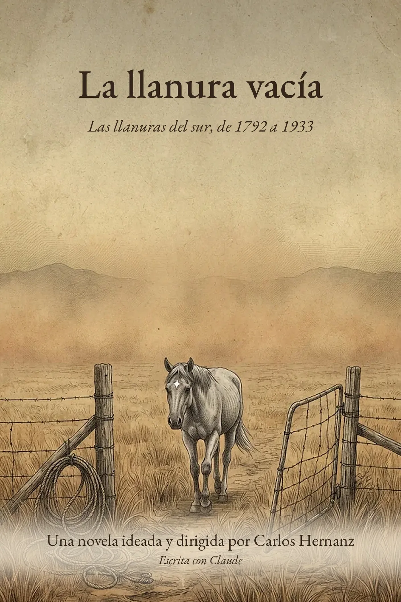
Prólogo
En el verano de 1933, seis antropólogos del Laboratorio de Antropología de Santa Fe pasaron seis semanas en el suroeste de Oklahoma preguntando a dieciocho ancianos comanches cómo vivían antes de la reserva. Les pagaban un dólar al día. Apuntaron en sus cuadernos cómo se casaban, cómo enterraban a los muertos, cómo castraban a los caballos. Aquellos cuadernos se conservan.
Ese mismo verano, el viento empezaba a llevarse la tierra arada de las llanuras del sur. La hierba que habían comido los búfalos y los caballos durante siglos estaba debajo, vuelta del revés por los arados, y encima, suelta, una tierra que se iba con cada tormenta.
Lo que se contó en el primer libro
«El perro sagrado» empezaba en 1706, cuando una columna de soldados españoles salió de Santa Fe hacia las llanuras. En ella iba Diego Ordóñez, un cabo con una yegua gris, Paloma, y un niño, Tomás. En el campamento apache de El Cuartelejo la yegua mató de una coz a un niño, y Tomás se quedó entre los apaches como pago por esa muerte. Creció apache, luego fue cautivo de los comanches y se hizo comanche, en los años en que el caballo, el perro sagrado, cambió la vida de las llanuras: la caza, la riqueza, la guerra.
De viejo, Tomás le contó su vida a un joven comanche, Oso Pequeño, y le dejó tres encargos. Uno era no matar a su caballo tordo, descendiente de Paloma, sino dejarlo vivir y soltarlo cuando ya no hiciera falta. En 1792 Oso Pequeño acompañó hasta Atrisco, junto a Albuquerque, a Francisco Xavier Chaves, un muchacho de allí que los comanches habían raptado de niño, y dejó en casa de sus padres el caballo viejo y una potra gris con una estrella en la frente. El potro hermano se lo llevó a la llanura.
Lo que se contó en el segundo libro
«El Gran Perro» se iba al norte, entre 1787 y 1806. Lo contaban dos hombres. Uno era real: David Thompson, que con diecisiete años pasó un invierno en la tienda de un viejo cree que vivía con los piegan, en las faldas de las Montañas Rocosas, y que de viejo, ciego y pobre, lo escribió todo. El viejo le contó cómo llegaron los caballos a su gente, y los fusiles de los ingleses, y la viruela de 1781, que vino del sur y mató a la mitad del pueblo. Y le enseñó una yegua gris que había robado a los snakes y que no quería matar.
El otro era inventado: Luc, hijo de una esclava pawnee de la cocina de los Chouteau, en San Luis, y de un remero de Montreal al que no conoció. Luc creció en el río. Subió el Misuri con los comerciantes del rey de España, pasó inviernos con los omahas y con los mandanes, se casó con una muchacha mandana, conoció a Thompson y, al final, fue con Lewis y Clark hasta el mar del Oeste y de vuelta. Por su vida pasaban María Rosa Villalpando, la cautiva de Taos que acabó en San Luis, y su hijo José Julián, que llegó desde Nuevo México a buscarla cuarenta años después y le dejó a Luc un caballo gris de Atrisco. Y pasaban otros grises con estrella, en el norte, que nadie sabe si eran de la misma sangre.
Los dos libros contaban cómo se llenó la llanura: de caballos, de fusiles, de comerciantes, de enfermedades, de banderas.
Lo que se cuenta en este libro
Este último libro vuelve al sur, a la tierra de los comanches y a los pueblos de Nuevo México. Lo cuenta un muchacho de Atrisco que hizo de chófer aquel verano de 1933, y un viejo comanche que le contó por las tardes lo que no les contaba a los profesores. Los dos son inventados. Casi todo lo que el viejo recuerda ocurrió: los comancheros, la llegada de los americanos, el cólera, la reserva, los cazadores de búfalos, el cañón de Palo Duro.
El primer libro contó cómo se llenó la llanura de caballos. Este cuenta cómo se vació.
El coche de los profesores
Lawton y Walters, Oklahoma · finales de junio de 1933
Ramón
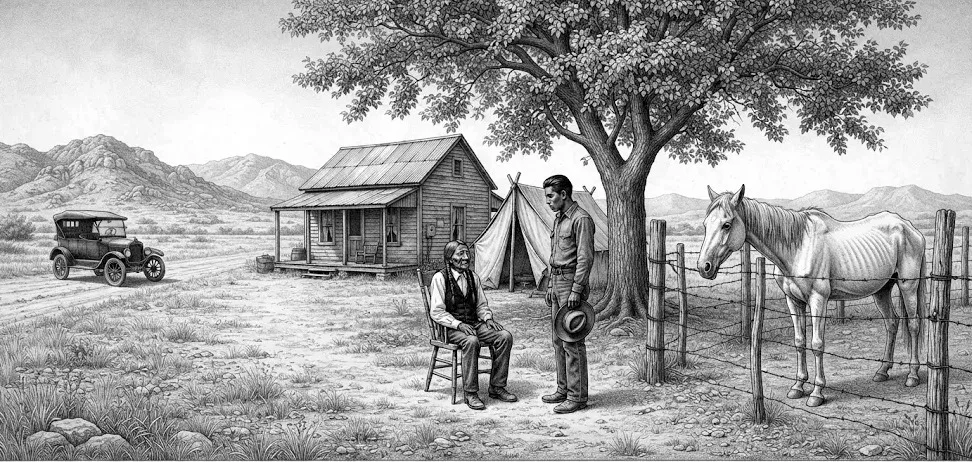
Me contrataron porque sabía conducir y porque hablaba español. Ninguna de las dos cosas era para presumir. En Atrisco, en 1933, sabía conducir cualquiera que hubiera trabajado en el taller del ferrocarril, y español hablábamos todos. Pero en Santa Fe, en el Laboratorio de Antropología, buscaban a alguien que llevara el coche de los profesores a Oklahoma y luego hiciera de chófer todo el verano, y alguien les dijo que algunos viejos comanches sabían español, del tiempo en que comerciaban con los nuevomexicanos o porque se habían criado con una madre cautiva. Y mi primo Elías, que barría el laboratorio, les dijo que tenía un primo que sabía las dos cosas y que no tenía trabajo.
Era verdad lo de no tener trabajo. Tenía veintidós años. Me habían echado del taller en noviembre, con otros cuarenta, porque no pasaban trenes suficientes para tener que arreglarlos. Mi padre seguía, de milagro. En casa éramos nueve. Mi madre hacía tortillas con harina de la que daba la parroquia y no decía nada.
Atrisco, entonces, era todavía un pueblo, aunque Albuquerque ya se lo estaba comiendo por el otro lado del río. Casas de adobe, bajas, con los techos planos y las vigas asomando, encaladas por dentro y del color de la tierra por fuera. Una iglesia con dos torres pequeñas. Las acequias, que eran lo más importante, más que la iglesia, porque sin ellas no había nada. Los campos de maíz, de chile, de alfalfa, de frijol, en tiras largas hasta el río. Y el bosque de álamos de la orilla, que llamábamos el bosque y que era lo único verde de verdad en toda la tierra.
Nuestra casa tenía cuatro piezas y un portal. En una dormían mis padres con los dos pequeños. En otra, las cuatro hermanas. En otra, mis dos hermanos y yo, en dos camas. La cuarta era la cocina, que era donde se vivía. Allí estaba el fogón, la mesa, el banco, la imagen de San Isidro con una vela, y la silla de mi abuela Cleofas, que nadie usaba desde que ella se murió.
Mi padre volvía del taller por la tarde con las manos negras de grasa, se las lavaba en el portal con jabón de lejía hasta que le sangraban los nudillos, y se sentaba a la mesa sin hablar. Era un hombre callado. Había sido vaquero de joven, en los ranchos del Río Puerco, y luego, cuando se acabaron los ranchos, se metió en el ferrocarril, como todos. Decía que el tren le había quitado el caballo y le había dado de comer, y que no sabía si darle las gracias o pegarle un tiro.
Desde que me echaron, yo me levantaba con él, por costumbre, a las cinco, y me iba al pueblo a buscar trabajo, y no había. Ayudaba a mi madre con el huerto. Limpiaba la acequia con los vecinos cuando le tocaba a nuestra parte. Iba a cazar conejos al llano de arriba con el rifle viejo de mi abuelo. Y por las tardes me sentaba en el portal y miraba pasar a lo lejos, al otro lado del río, los camiones de la carretera 66, llenos de gente de Oklahoma y de Texas que iba a California con los colchones atados encima, y los niños sentados en los colchones, y pensaba que por lo menos yo tenía una casa.
Mi madre no se quejaba. Pero un día la vi contar las tortillas antes de ponerlas en la mesa, y quitar una de su plato y ponerla en el de mi hermano pequeño, y no decir nada.
Por eso, cuando Elías vino a decírmelo, no lo pensé.
Así que dije que sí antes de que terminaran de preguntar.
El coche era un Ford de cuatro puertas, negro, con el techo de lona, polvoriento ya antes de salir. Lo cargamos en Santa Fe con cajas de cuadernos, una máquina de escribir, una cámara de fotos con trípode, mantas, latas de comida y una nevera portátil que no enfriaba nada. Íbamos tres: yo al volante y dos de los estudiantes, dos muchachos rubios del norte, de universidades que yo no sabía ni dónde estaban, que hablaban inglés deprisa y me trataban bien, con esa amabilidad un poco excesiva que tienen los americanos con los que no son como ellos. El profesor y los otros iban en tren.
Tardamos tres días. Bajamos por Las Vegas, cruzamos el llano hacia Tucumcari, entramos en Texas por Amarillo y bajamos luego hacia Oklahoma. Era la primera vez que yo salía de Nuevo México.
Lo que recuerdo de aquel viaje es el polvo.
No sé cómo explicarlo a quien no lo vio. En Atrisco teníamos polvo, claro, el de siempre, el que levanta el viento de primavera en el llano de arriba y que se te mete en los dientes. Pero aquello era otra cosa. Al pasar Tucumcari, el cielo se puso amarillo. No nublado: amarillo, como un cristal sucio. El sol se veía como una moneda vieja. Y a los lados de la carretera, donde antes, según me dijo un gasolinero, había hierba hasta la cintura, había campos arados, de trigo, de algodón, y la tierra de los campos se estaba yendo. Se levantaba con el viento y se iba, en remolinos, en cortinas, en nubes bajas que cruzaban la carretera de lado a lado y nos obligaban a parar porque no se veía el capó. Las cercas de alambre estaban enterradas hasta la mitad en montones de arena fina, rojiza. Había casas abandonadas con las ventanas tapadas con tablas y la arena por encima del umbral. Había un tractor medio enterrado en un campo, como un animal muerto.
—Dust —decía uno de los estudiantes, y movía la cabeza.
El gasolinero de Amarillo, un viejo con la cara roja, nos llenó el depósito y nos dijo que llevaba tres años sin llover como Dios manda. Que antes, cuando él llegó, en el ochenta y tantos, aquello era todo pasto, y ganado, y nada más. Que luego vinieron los del trigo, con los tractores, y lo araron todo. Y que la tierra, sin la hierba, se estaba volando.
—Esto antes era de los indios —dijo—. Y de los búfalos. —Escupió—. Ahora no es de nadie. Es del viento.
Dormimos dos noches por el camino. Una en Tucumcari, en un sitio de cabañas de madera para viajeros, a un dólar la cabaña, donde los dos estudiantes durmieron en la cama y yo en el coche, porque así lo arreglé yo, antes de que tuvieran que decírmelo. Y otra en Amarillo, en un hotel, donde ellos durmieron arriba y yo también en el coche, en la calle, delante.
No me importó. El coche tenía el asiento de atrás ancho y yo estaba acostumbrado a dormir con mis hermanos, que dan patadas. Me tapaba con una de las mantas de los profesores, dejaba la ventanilla un poco abierta, y oía la ciudad. En Amarillo, toda la noche, pasaron trenes. Largos, de mercancías, de cien vagones, hacia el este y hacia el oeste. Y en los techos de los vagones, cuando pasaban bajo las luces de la estación, se veía gente. Hombres, sobre todo. Sentados o tumbados, con un hatillo, agarrados a lo que podían. Muchos. Más de los que yo había visto nunca en ningún tren.
Uno de los estudiantes, el más joven, se asomó por la mañana a mi ventanilla con un café en la mano, para mí. Me preguntó cómo había dormido. Le dije que bien. Me preguntó si en mi familia se hablaba inglés. Le dije que poco. Me preguntó si yo era católico. Le dije que sí. Me preguntó si había visto alguna vez a un indio de verdad, de los de las llanuras. Le dije que en Albuquerque había indios de los pueblos, de Isleta, de Laguna, que venían a vender cacharros a la plaza. Él dijo que esos no contaban. Que esos eran agricultores. Que los que él quería ver eran los otros, los de a caballo.
Lo dijo como un niño que va a ver los elefantes del circo. No lo dije. Pero lo pensé.
Y luego me di cuenta de que yo también iba un poco así. Que en Atrisco, cuando era niño, los comanches eran lo que se usaba para asustarnos. Si no te portas bien, vienen los comanches y te llevan. Mi abuela lo decía riéndose, pero lo decía. Y yo, que tenía veintidós años y había visto el cine en Albuquerque y sabía arreglar un motor de locomotora, iba por aquella carretera llena de polvo pensando, sin querer, en los comanches de mi abuela, con sus plumas y sus lanzas, saliendo de detrás de una loma.
No salió nadie de detrás de ninguna loma. Solo polvo, y casas vacías, y gente que se iba.
Llegamos a Lawton el 28 de junio, de noche. Los otros nos esperaban en el hotel Midland, un edificio de ladrillo de tres pisos en la calle principal, el mejor de la ciudad, que no era mucho decir. El profesor era un hombre de unos cuarenta años, delgado, con gafas y el pelo peinado hacia atrás, que fumaba en pipa y hablaba poco. Se llamaba Linton. Me dio la mano, me preguntó si sabía de mecánica, le dije que sí, y no me preguntó nada más en todo el verano. Era de esos.
A mí no me dieron habitación en el Midland. Dormí en una pensión de la parte de atrás de la estación, donde dormían los braceros y los vaqueros sin trabajo, a veinticinco centavos la noche. No me importó. En el Midland, un hombre como yo habría tenido que entrar por la cocina.
En la pensión dormíamos doce en una habitación, en catres de lona. Por las noches, antes de dormir, se hablaba. De trabajo, de que no lo había. De sitios donde se decía que lo había: en los campos de algodón del sur de Texas, en las presas que el gobierno iba a hacer en no sé qué río, en California, siempre en California. De las cosas que habían vendido para llegar hasta allí.
En el catre de al lado dormía un hombre de Kansas, de cincuenta años, con las manos grandes y la cara quemada, que había sido granjero. Tenía una granja de trigo, me dijo, trescientos acres, comprados a plazos al banco en 1919, cuando el trigo se pagaba a dos dólares. Luego el trigo bajó a treinta centavos. Luego dejó de llover. Luego vino el viento. Y una mañana de abril, me dijo, se levantó, abrió la puerta y no vio el campo. No es que estuviera seco. Es que no estaba. Se había ido volando por la noche, la tierra buena, la de arriba, la que se había hecho durante mil años debajo de la hierba, y debajo había una cosa dura, amarilla, en la que no crecía nada.
—Y el banco se quedó con lo que quedaba —dijo—. Con la arena.
Su mujer y sus hijos estaban en casa de un hermano, en Wichita. Él iba hacia el sur, a ver si en los campos de algodón había algo. Se llamaba Henry. Me enseñó una foto de sus hijos, cuatro, en fila, delante de una casa de madera, con el campo detrás, verde.
—Así estaba en el veintiocho —dijo—. Fíjate.
Me fijé. Se la devolví. La guardó en la cartera, con mucho cuidado, y se dio la vuelta en el catre, hacia la pared, y no dijo nada más.
Por la mañana ya no estaba.
Los comanches no vivían en Lawton. Vivían por el campo, al oeste y al sur, en las tierras que les habían dado en lotes cuando se repartió la reserva, treinta años antes. Ciento sesenta acres cada uno. Muchos tenían la tierra arrendada a los blancos, que la sembraban de algodón o de trigo, y ellos vivían en una casa pequeña de madera en una esquina del lote, o en una tienda de lona al lado de la casa, porque la casa era para guardar cosas y la tienda para vivir. Eso me lo explicaron después.
El primer día fuimos a un sitio que se llamaba Walters, un pueblo pequeño al sur, donde un intérprete comanche, un hombre de cincuenta años con traje y corbata que había estudiado en una escuela de indios en Pensilvania, nos llevó a ver a los viejos.
Eran dieciocho, al final. Hombres y mujeres. Todos nacidos antes de la reserva, antes de que los encerraran. Algunos se acordaban de los búfalos. Algunos se acordaban de la guerra. Los profesores querían que les contaran cómo vivían antes. Cómo se casaban, cómo enterraban a los muertos, cómo cazaban, cómo curaban, qué comían, quién mandaba, qué pasaba cuando alguien robaba la mujer de otro. Todo. Los estudiantes lo apuntaban en sus cuadernos, deprisa, a lápiz, y por la noche lo pasaban a máquina en el hotel.
Yo llevaba el coche. Esperaba. Arreglaba pinchazos. Traía agua. Y cuando había un viejo que hablaba español, traducía.
El cuarto o quinto día me mandaron a buscar a uno que vivía lejos, en la parte del oeste, hacia las montañas Wichita, más allá de un sitio que se llamaba Indiahoma.
No sabían bien dónde. El intérprete me dibujó un mapa en un papel: una carretera de tierra, un puente de madera sobre un arroyo seco, una iglesia menonita, un molino de viento roto, y a la izquierda, hasta una casa con un árbol grande. Me dijo que el viejo se llamaba John Manyhorses en los papeles de la agencia, y que en comanche su nombre quería decir eso mismo, Muchos Caballos, pero que no se lo dijera, que no le gustaba que los blancos lo dijeran. Que tenía setenta y tantos años. Que hablaba algo de español porque su madre era mexicana.
—Su madre era una cautiva —me dijo—. Como muchas. Él se crió hablando las dos lenguas. Pero no habla con cualquiera.
—¿Y por qué va a hablar conmigo?
El intérprete se encogió de hombros.
—Porque eres mexicano —dijo—. A lo mejor.
Le dije que no era mexicano. Que era de Nuevo México. Que mi familia llevaba en Atrisco doscientos años, desde antes de que hubiera México y Estados Unidos.
Me miró como se mira a un niño que dice una tontería.
—Para él eres mexicano —dijo.
Tardé dos horas en encontrarlo. El puente de madera estaba roto y tuve que vadear el arroyo con el Ford, que no tenía agua pero sí una arena blanda en la que se hundían las ruedas. La iglesia menonita estaba cerrada. El molino de viento estaba roto, como decía el papel, con las aspas torcidas, quietas, aunque soplaba un viento caliente del sur que no paraba. Giré a la izquierda.
La casa era de madera sin pintar, gris de sol, de dos piezas, con un porche de tablas y el techo de chapa. Al lado había una tienda de lona blanca, alta, de las de antes, de palos, con la puerta hacia el este. Y un árbol grande, un álamo, el único en una legua a la redonda, con la sombra justa para un hombre y una silla.
Y en la silla, a la sombra, había un viejo.
Detrás de la casa, en un corral de palos y alambre, había un caballo.
Paré el coche lejos, para no levantar polvo. Bajé. Me quité el sombrero. Me acerqué andando despacio, como me había dicho el intérprete que había que acercarse.
El viejo no se movió. Me miró venir desde la silla, con las manos en las rodillas. Era pequeño, más de lo que esperaba, flaco, con la cara oscura, muy arrugada, sin un pelo en las mejillas, y el pelo largo, gris, en dos trenzas envueltas en tiras de tela roja que le caían sobre el pecho. Llevaba una camisa blanca de algodón, abotonada hasta el cuello, un chaleco negro, unos pantalones de vaquero viejos y unos mocasines. Tenía los ojos muy negros, pequeños, metidos entre las arrugas, y me miraban de una manera que me hizo sentir que llevaba algo mal puesto.
Le dije buenas tardes en español.
Tardó en contestar.
—Buenas tardes —dijo al fin. Con un acento raro, cantado, más del norte de México que de Nuevo México, como el de las viejas de Chihuahua que venían a veces a Albuquerque a vender quesos.
Le dije quién era. Que venía de parte de los profesores del hotel, que querían hablar con él, que le pagarían un dólar al día. Que yo lo llevaría y lo traería en el coche.
No me contestó. Me seguía mirando.
—¿De dónde eres? —me preguntó.
—De Nuevo México. De Atrisco. Al lado de Albuquerque.
Algo le pasó en la cara. No sé qué. Un movimiento muy pequeño, en los ojos, como cuando a uno le tocan una herida vieja.
—Atrisco —repitió.
—Sí, señor. ¿Lo conoce?
No me contestó. Se levantó de la silla, apoyándose en las rodillas. Era más bajo que yo una cabeza. Echó a andar hacia el corral, cojeando un poco, sin decir nada, y yo le seguí porque no sabía qué otra cosa hacer.
En el corral había una yegua.
Era vieja. Muy vieja. Se le veían las costillas y los huesos de la cadera, y tenía hoyos encima de los ojos, y el labio de abajo le colgaba un poco, como les cuelga a los caballos viejos. Estaba de pie a la sombra de un cobertizo de ramas, con la cabeza baja, espantándose las moscas con la cola.
Era gris. Muy clara, casi blanca, como se vuelven los tordos con los años. Pero se le notaban todavía, en las ancas, unas manchas un poco más oscuras, pequeñas, redondas, como gotas de lluvia en una piedra.
Y en la frente, debajo del flequillo, tenía una estrella.
Me quedé quieto.
No sé cuánto tiempo. El viejo me miraba a mí, no a la yegua. La yegua levantó la cabeza al olerme y me miró también, con unos ojos grandes, negros, nublados de vejez, con pestañas largas, blancas.
Yo había visto esa cara antes.
No esa yegua. Otra. Una que se llamaba la Estrellita y que vivía en el corral de mi abuelo, en Atrisco, cuando yo era niño. Gris, con manchas en las ancas como gotas de lluvia, con una estrella en la frente. Que se murió de vieja el verano que yo cumplí cuatro años, en 1915. Que mi abuelo enterró entera, en un rincón del campo, junto a la acequia, sin dejar que nadie la aprovechara, ni la piel, ni nada, porque decía que en nuestra familia a esos caballos no se los tocaba. Que era la última de una línea de yeguas grises con estrella que habíamos tenido en casa siempre, desde hacía más de cien años, desde que un comanche, en tiempos del rey de España, le regaló una potra a mi tatarabuelo.
Eso contaba mi abuela. Yo no me lo creía. Era una de esas historias que cuentan las abuelas.
El viejo me estaba mirando.
—La conoces —dijo. No era una pregunta.
—No, señor —dije—. Es que se parece a una que teníamos en casa.
El viejo asintió, como si eso fuera lo que esperaba.
—Mañana —dijo—. Vienes mañana. Temprano. Hablaré con los tuyos.
Y se volvió a su silla, debajo del álamo, y se sentó, y cerró los ojos.
Volví a Lawton de noche. No dije nada a nadie de la yegua. ¿Qué iba a decir? ¿Que había visto un caballo gris viejo con una estrella en la frente, en Oklahoma, en un corral? Hay millones de caballos grises con una estrella en la frente.
Pero aquella noche, en la pensión de detrás de la estación, con los braceros roncando y el viento soplando polvo contra la ventana, no pude dormir.
Me acordé de mi abuela Cleofas, sentada en la cocina de Atrisco con un rosario de cuentas negras que no soltaba nunca, contándome cuando era niño, en las noches de invierno, la historia de la potra gris. La del comanche que llegó un día de junio, en tiempos del rey, con un hombre de los ojos pintados que era hijo de la casa y que había vuelto de entre los indios después de veintidós años. La del caballo tordo viejo que se quedó en el corral hasta que se murió. La de la potra, hija del tordo, que tuvo potras grises, que tuvieron potras grises, hasta la Estrellita. Y la del encargo, que nadie sabía de quién era, que se pasaba de padres a hijos en la familia sin que nadie supiera ya bien por qué: que a ese caballo no se le mata.
Y me acordé de que mi abuela siempre terminaba igual. Con la misma frase, mirando el fuego.
—Y el comanche se llevó el otro, el potro, a la llanura. Y nunca más se supo.
El potro que volvió a la llanura
Cerca de Indiahoma, Oklahoma · julio de 1933 · lo que contó Muchos Caballos de 1792 a 1820
Ramón
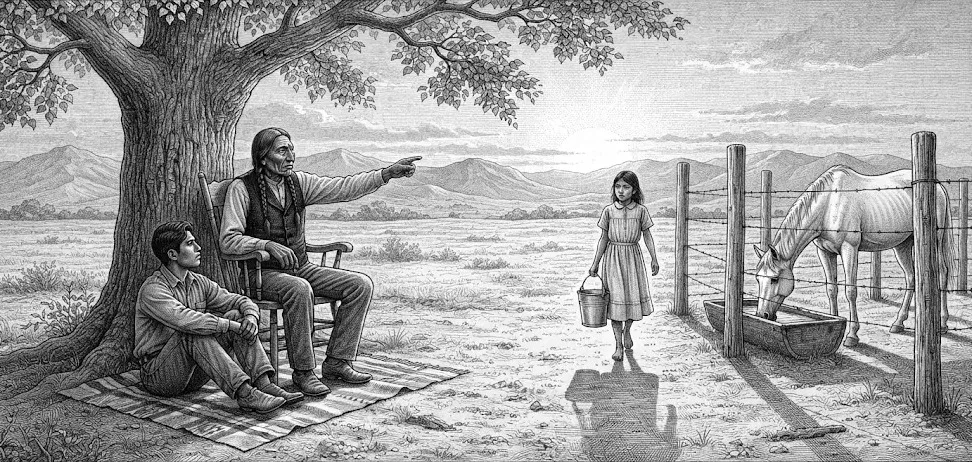
Por las mañanas hablaba con los profesores. Por las tardes, conmigo.
Así lo decidió él, sin preguntarle a nadie. Yo le recogía a las siete, cuando el sol todavía no quemaba, y le llevaba en el Ford hasta Walters, a la casa del intérprete, donde los estudiantes le esperaban con sus cuadernos en el porche. Allí se sentaba en una silla de cocina, muy derecho, con las manos en las rodillas, y contestaba. En comanche. El intérprete traducía al inglés. Los estudiantes apuntaban.
Le preguntaban cosas que a mí me parecían raras. Cuántas mujeres podía tener un hombre. Quién heredaba los caballos cuando se moría alguien. Cómo se llamaba al hermano de la madre. Qué se hacía con la placenta cuando nacía un niño. Si un hombre podía hablar con su suegra. Cómo se curtía una piel de búfalo. Qué hierba se ponía en una herida. Él contestaba a todo, despacio, sin prisa, con la cara quieta. A veces se reía bajito, cuando la pregunta le parecía tonta. A veces no contestaba, y miraba al estudiante hasta que el estudiante pasaba a otra cosa.
Le pagaban un dólar al día. Y la comida.
A mediodía, cuando el calor no dejaba trabajar, le llevaba de vuelta a su casa, a su álamo. Comíamos allí. Su nuera, una mujer de cuarenta años, gruesa, callada, con un vestido de flores y el pelo corto, nos sacaba al porche carne guisada, pan frito, café negro con mucho azúcar. A veces un trozo de sandía. Su nieta, una muchacha de quince años que iba a la escuela de la misión y hablaba inglés mejor que yo, se sentaba en el escalón a mirarme como se mira a un perro forastero.
Mientras le preguntaban, yo esperaba.
Me quedaba en el coche, con las puertas abiertas para que corriera el aire, o en el porche de la casa de al lado, donde una vieja comanche me dejaba sentarme en un escalón a cambio de que le arreglara cosas: una bisagra, una pata de mesa, la radio, que no tenía pilas y que no había forma de arreglar sin pilas. Walters era un pueblo de una calle, con una tienda, una gasolinera, una oficina de correos, dos iglesias y un banco cerrado con un papel en la puerta. Los blancos que pasaban me miraban como si me conocieran de algo malo. Los indios no me miraban.
Leía. Me había traído de Atrisco dos libros, los únicos que había en casa además del misal: un libro de mecánica de motores, en inglés, del taller, y una novela del Oeste que le habían regalado a mi hermano, con un vaquero en la portada disparando a unos indios que se caían del caballo. La leí entera en aquellas mañanas, en el porche de la vieja, con el calor subiendo. Y luego la leí otra vez, porque no tenía otra. Y la segunda vez me dio vergüenza, no sé por qué, y la dejé en el coche, debajo del asiento, y no la volví a sacar.
A veces me acercaba a la ventana de la casa del intérprete y escuchaba. No entendía nada. El viejo hablaba en comanche, bajo, con una voz que subía y bajaba como una canción. El intérprete decía en inglés lo que había dicho, más corto. Los estudiantes escribían. Y yo pensaba que el viejo había dicho mucho más de lo que el intérprete decía, y que el intérprete decía mucho más de lo que los estudiantes escribían, y que lo que quedaba al final en los cuadernos era como la piel de una culebra: tenía la forma, pero no tenía a la culebra dentro.
Y luego, cuando bajaba el sol, el viejo me contaba a mí. En español. Lo que no les contaba a los profesores.
—Mi bisabuelo se llamaba Oso Pequeño —empezó la primera tarde.
Estábamos debajo del álamo. Él en su silla, yo en el suelo, en una manta, con la espalda contra el tronco. Hacía un calor pegajoso, sin aire, y en el corral la yegua gris dormitaba con un pie levantado.
—No era pequeño. Era grande. Le pusieron el nombre de niño y se le quedó. Así pasa. Vivía en las llanuras de allá, las del sur, las de los ríos de la sal y del Llano Estacado. Era de la gente de la miel, los que comían miel, los Penateka. Tenía caballos, una mujer, un hijo pequeño. Y una abuela.
»Un verano, antes de que naciera nadie de los que conozco, fue a Nuevo México. Con un hombre que había sido cautivo de los nuestros de niño y que volvía con los suyos. Un hombre que tenía la cara pintada alrededor de los ojos, como los taovayas. Fueron a un sitio que se llamaba Pecos. Y luego a Santa Fe. Y luego a otro sitio, más abajo, junto a un río grande. A casa del hombre de los ojos pintados.
Se calló. Me miró.
—Atrisco —dijo.
Yo no dije nada. Se me había secado la boca.
—Así lo decía mi abuelo —siguió—. Atrisco. Lo decía mal, porque no sabía español. Pero así se quedó en la familia. Atrisco. Un sitio de casas de barro junto a un río, con campos verdes y acequias, donde una mujer rompió un cántaro al ver a su hijo. Y donde mi bisabuelo dejó un caballo viejo para que se muriera sin que nadie lo matara, y una potra gris con una estrella, para que no se acabara.
Se quedó callado mucho rato. El sol bajaba detrás de las montañas Wichita, unas montañas pequeñas, de piedra rosada, redondas, como montones de pan.
—Y tú vienes de Atrisco —dijo.
—Sí, señor.
—Y conoces el caballo.
Le conté lo de la Estrellita. Lo del corral de mi abuelo. Lo de la línea de yeguas grises. Lo del encargo que no sabía nadie de dónde venía. Lo de mi abuela Cleofas y la frase con que terminaba siempre: el comanche se llevó el otro, el potro, a la llanura, y nunca más se supo.
El viejo me escuchó sin moverse. Cuando terminé, señaló con la barbilla hacia el corral.
—Ahí lo tienes —dijo—. El que nunca más se supo.
Yo no lo creí. Lo digo ahora, de viejo, para que se entienda: no lo creí. Pensé que era una coincidencia. Que el viejo había oído alguna historia parecida y la estaba adornando, como adornan los viejos las historias para que les hagan caso. Que una línea de caballos no dura ciento cuarenta años, de padres a hijos, en la llanura, entre guerras y robos y hambres, sin que nadie la apunte en ningún papel.
Pero no le dije nada. Me quedé callado y le dejé contar. Y él contó.
—Mi bisabuelo volvió a la llanura con el potro gris —dijo—. Un potro de dos años, hijo del caballo viejo, del tordo, con la estrella. Y le crió. Y le cruzó con sus mejores yeguas. Y salieron potros grises, algunos con estrella y otros sin ella. Y los que salían con estrella, esos no se vendían, no se cambiaban, no se regalaban. Esos se quedaban en la familia.
»Así fue siempre. Mi bisabuelo se los dio a su hijo, mi abuelo. Mi abuelo a mi padre. Mi padre a mí. Siempre una yegua gris con estrella en la manada. Siempre. Aunque fuera una sola. Aunque se murieran todos los demás.
—¿Por qué?
El viejo se encogió de hombros.
—Porque así lo dijo el viejo.
—¿Qué viejo?
—El que había antes. El del barranco. —Hizo un gesto vago con la mano, hacia el pasado, hacia muy lejos—. Mi bisabuelo lo encontró, de joven, viviendo solo en un barranco, con un caballo tordo. Era un hombre que había sido de todo: niño de los blancos, niño de los apaches, cautivo de los comanches, comanche. Se murió una noche, en el barranco, después de contar su historia. Y le dejó tres encargos. Uno era el caballo. Que no lo mataran. Que lo dejaran vivir. Que cuando no hiciera falta, lo soltaran.
»Mi bisabuelo cumplió. El tordo viejo se murió en el corral de tu familia. Y la línea siguió. En los dos sitios. Allí con los tuyos. Aquí con los míos.
Me miró.
—Tu familia no sabía de dónde venía el encargo —dijo—. La mía sí.
Aquella noche, al volver a Lawton, paré el coche en mitad de la carretera de tierra, en la oscuridad, y apagué el motor.
No sé por qué. Me bajé. Me quedé de pie al lado del Ford, con el motor haciendo tic, tic, al enfriarse. El viento había parado. Había estrellas. Muchas. No había ni una luz en ninguna parte, ni una casa, ni un farol. Solo la llanura, negra, oliendo a tierra seca y a algodón, y un perro, lejos, ladrando.
Pensé en mi abuela Cleofas. Que se había muerto hacía cinco años, en la cocina, con el rosario en la mano. Que me contaba aquella historia y yo me dormía antes de que terminara.
Pensé que si estuviera viva, habría querido estar allí.
Al llegar a la pensión pedí papel a la dueña y le escribí a mi madre.
Le escribí que estaba bien. Que comía. Que me pagaban lo que habían dicho y que el primer sábado le mandaría un giro de diez dólares por correo. Que Oklahoma era muy llana y muy caliente y que había más polvo que en Atrisco, aunque pareciera mentira. Que los profesores eran buenos conmigo. Que había ido a misa el domingo en una iglesia de Lawton donde el cura era irlandés y no se le entendía el latín.
No le escribí lo de la yegua.
Lo intenté. Escribí: «Ayer conocí a un viejo comanche que tiene una yegua». Y lo taché. Y escribí: «Me he acordado mucho de la abuela». Y eso lo dejé. Y luego no supe qué más poner, y puse que les mandaba besos a todos, a mi padre, a mis hermanos, a las niñas, y que rezaran por mí, y firmé.
No le escribí lo de la yegua porque no sabía cómo. Porque mi madre no era de la familia del abuelo, era de Pajarito, y para ella aquello de los caballos grises era una cosa de los Chaves, una de tantas manías de la familia de su marido, como la de no comer carne de caballo, o la de enterrar a los perros. Y porque si se lo escribía a mi padre, mi padre se callaría, como se callaba siempre, y se quedaría mirando la carta mucho rato, y luego la doblaría y se la guardaría en el bolsillo de la camisa. Y no me contestaría nada.
Mi padre no hablaba nunca de la Estrellita. Pero cuando se murió y el abuelo la enterró junto a la acequia, mi padre fue el que cavó el hoyo. Yo me acuerdo. Tenía cuatro años. Me acuerdo de él cavando, sin camisa, al sol, y del abuelo mirándole desde el borde, y de que ninguno de los dos decía nada.
Me acuerdo de que mi padre lloraba mientras cavaba. No lo había visto nunca llorar. No lo volví a ver.
Al día siguiente, por la tarde, siguió.
Contó cómo era la vida de su bisabuelo y de su abuelo, en aquellos años, los que siguieron a la paz con los españoles. No me contó batallas. Me contó la vida.
Me contó que su abuelo había nacido el invierno antes de aquel viaje a Atrisco, y que había hecho el camino entero atado a la espalda de su madre, en una cuna de tabla y de piel, mirando hacia atrás, hacia donde venían, como miran siempre los niños que van a la espalda. Que se llamaba, de mayor, Dos Lunas, porque había nacido una noche en que se vio la luna en el cielo y su reflejo en un charco helado, y su abuela, la lipana, dijo que eso era señal.
Me contó que en aquellos años había paz con los de Nuevo México. Que bajaban a Pecos, a Taos, a la feria, y cambiaban pieles, carne, caballos y cautivos por cuchillos, mantas, pan, maíz, azúcar. Que los nuevomexicanos subían también a la llanura, en carretas de madera de ruedas macizas que chirriaban tanto que se las oía a una legua, cargadas de pan duro, de harina, de piloncillo, de tabaco, de cuentas, de telas, de cuchillos largos que llamaban belduques. Que se paraban en sitios que todos conocían, en cañones con agua, al borde del Llano. Y que allí acampaban días y días, y venían los comanches, y cambiaban.
—Comancheros —dijo—. Así los llamábamos. Los que vienen a ver a los comanches. Eran pobres. Más pobres que nosotros. Venían con un burro, una carreta, unos sacos de pan. Pero eran amigos. Hablaban un poco nuestra lengua y nosotros un poco la suya. Comían con nosotros. Algunos se quedaban a vivir.
»Y también los cazadores de búfalos de Nuevo México, los ciboleros, que subían en otoño a cazar con lanza, a caballo, como nosotros, y se llevaban la carne en tiras, seca, en las carretas, para el invierno. Nos dejaban cazar con ellos. Les dejábamos cazar con nosotros. Había búfalos para todos.
Se quedó callado.
—Había búfalos para todos —repitió.
Me contó que su abuelo, Dos Lunas, aprendió a montar antes que a andar, como todos los niños. Que a los seis años tuvo su primer potro, uno pinto, viejo y manso, que le dio su padre. Que a los diez cuidaba la manada de la familia, con los otros muchachos, día y noche, en los pastos de alrededor del campamento, contando los caballos cada mañana, curándoles las heridas, sacándoles las espinas de los cascos. Que entre los caballos de la manada había siempre una yegua gris con estrella, y que su padre le había dicho que esa no la montara nunca para la guerra ni para la caza, que esa era para tener potros.
Me contó que a los dieciséis Dos Lunas fue a su primera partida contra los osages, al norte, con su padre y otros hombres, a robar caballos. Que no robaron ninguno. Que les robaron dos a ellos. Que volvió a pie, avergonzado, y que su abuela la lipana se rio tanto que se tuvo que sentar en el suelo.
Me contó que su abuelo se casó con una muchacha de la gente de los que comen búfalo, los Kotsoteka, y que le dio por ella siete caballos, atados delante de la tienda del padre, de noche, como se hacía. Y que el padre de la muchacha tardó cuatro días en meter los caballos en su manada, para hacerle sufrir, y que al quinto día los metió.
Y que la yegua gris con estrella no fue entre esos siete.
—Esa no —dijo el viejo—. Esa no se daba.
Mientras contaba, la nieta salió de la casa con un cubo de agua y fue al corral a dársela a la yegua. La yegua bebió despacio, metiendo el hocico hasta los ollares, levantándolo y dejando caer el agua de los labios, como beben los caballos viejos, que ya no tienen prisa.
La muchacha le dijo algo, en comanche, bajito. La yegua le sopló en la mano.
—Mi nieta la quiere mucho —dijo el viejo—. Es la única que la cuida. Su padre dice que hay que venderla, que no sirve para nada, que come. Que con lo que dan por un caballo viejo en la fábrica de cola de Lawton se compra harina para un mes. —Se rio sin ganas—. Mi hijo es un buen hombre. Pero ha ido a la escuela de los blancos. Cuenta las cosas en dinero.
—¿Y usted qué dice?
—Yo digo que mientras yo viva, la yegua vive.
Miró hacia el corral.
—Lo que pase después —dijo—, ya no es cosa mía.
Pan duro para el Llano
Atrisco y el Llano Estacado · 1821-1835 · lo que contaba la abuela Cleofas
Ramón
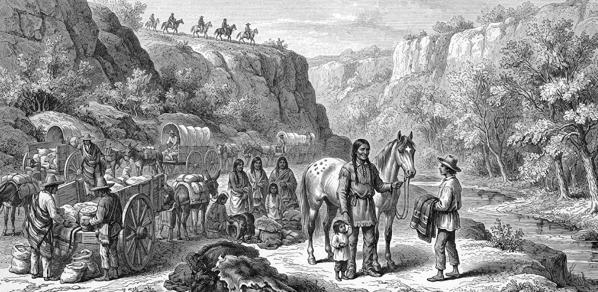
Al tercer día el viejo me dijo que ahora me tocaba a mí.
—Yo te cuento lo mío —dijo—. Tú me cuentas lo tuyo. Así es justo.
Le dije que yo no sabía tanto. Que lo que sabía era lo que contaba mi abuela, y que mi abuela era una vieja que contaba muchas cosas y no todas serían verdad.
—Todas las abuelas son así —dijo él—. Cuenta.
Y le conté lo de Antonio.
Antonio Chaves era mi tatarabuelo. Sobrino de aquel Francisco de los ojos pintados, hijo de un hermano suyo que nació después de que se lo llevaran los comanches. Se crió oyendo que tenía un tío que había vivido entre los indios, que hablaba su lengua, que había hecho la paz con ellos en Texas y que luego se había vuelto a Texas, a San Antonio, porque en Atrisco ya no sabía estar. Mi abuela decía que Antonio de niño no se separaba de la potra gris del corral, la hija del tordo, y que le preguntaba a su abuelo, al padre de Francisco, cómo era la llanura, y que el viejo no sabía qué contestarle porque no la había visto nunca.
Antonio la vio.
Cuando tenía veinte años, en 1821 o por ahí, el año en que llegó a Albuquerque la noticia de que ya no había rey de España y que ahora eran de México, se fue con los comancheros.
—Lo de México —le dije al viejo— no cambió nada en Atrisco. Eso decía mi abuela. Un día vino el alcalde a la plaza y leyó un papel. Que había una bandera nueva, verde, blanca y colorada, con un águila. Que ya no había que rezar por el rey. Que ahora éramos mexicanos. La gente dijo: ah, bueno. Y se fue a regar.
El viejo se rio.
—Nosotros tampoco nos enteramos —dijo—. Mi abuelo decía que un año los de Nuevo México dejaron de hablar del rey y empezaron a hablar de otro. Y que los regalos eran peores.
Le conté cómo era. Lo que me contaba mi abuela, que se lo había oído a su suegra, que se lo había oído a Antonio.
Se salía en otoño, después de la cosecha. Cuando ya estaban el trigo y el maíz en el granero, el chile colgado en ristras en las paredes, la leña cortada para el invierno. Entonces se juntaban unos cuantos hombres de Atrisco, de Pajarito, de Los Padillas, de los ranchos de la otra orilla, pobres casi todos, y se ponían a hacer pan.
Pan duro. Biscocho, lo llamaban. Pan de harina de trigo o de maíz, cocido dos veces en el horno de barro hasta quedar duro como una piedra, para que aguantara semanas sin ponerse malo. Las mujeres se pasaban días enteros amasando y cociendo. Mi abuela decía que el olor de aquellos días era el olor del otoño en Atrisco, el del pan duro en todos los hornos a la vez, saliendo por todas las puertas.
Y luego cargaban las carretas. Unas carretas de madera de álamo, sin un clavo, con las ruedas macizas, de una pieza, cortadas de un tronco, que chirriaban como cerdos en la matanza porque el eje era también de madera y se engrasaba con sebo, cuando había sebo. Tiradas por bueyes o por mulas. Y los que no tenían carreta, con burros. Cargaban sacos de pan duro, sacos de harina, de pinole, que es maíz tostado y molido; piloncillo, que es azúcar en conos; tabaco de punche, el de Nuevo México; mantas tejidas por las mujeres; cuchillos largos de los de matar, belduques; cuentas de colores; algún espejo; alguna tela de algodón traída de Chihuahua. Lo que tuvieran.
Y salían hacia el este. Por el cañón de Tijeras, por el pueblo de San Miguel del Vado, por el río Pecos. Y luego a la llanura.
—Antonio decía que la primera vez que vio la llanura se echó a llorar —le dije al viejo—. Eso contaba mi abuela. Que se paró en lo alto, al salir de los pinos, y vio aquello, todo llano, todo hierba, hasta donde llegaba la vista, sin un árbol, sin una casa, sin nada, y con el cielo encima como una olla, y se le saltaron las lágrimas. Y que los otros comancheros se rieron de él. Pero que luego, de viejo, decía que era lo más bonito que había visto en su vida.
El viejo asintió.
—A mi bisabuelo le pasó al revés —dijo—. Cuando fue a Nuevo México y dejó de ver la llanura detrás de las montañas, se asustó. Era la primera vez que no la veía.
Nos quedamos callados un rato.
Le conté también lo que contaba mi abuela de las noches.
Que en el Llano, de noche, hacía un frío que no se parecía al de Atrisco. Que en Atrisco el frío venía de la sierra y se quedaba en el valle, quieto, como el agua en una acequia. Y que en el Llano el frío venía de todas partes a la vez, del cielo, del suelo, del viento, que no paraba nunca, y se te metía por la manta y por la camisa y por los huesos. Que dormían debajo de las carretas, apretados, con los pies hacia el fuego, y que se despertaban con escarcha en las cejas.
Que Antonio, las primeras noches, no dormía. Que se quedaba tumbado mirando el cielo, que en el Llano era más grande que en ninguna otra parte, y oyendo los lobos, que aullaban toda la noche, cerca y lejos, como si se contestaran. Y que pensaba en Atrisco. En el olor del pan. En su madre. En la potra gris del corral, que ya era una yegua vieja y que se había quedado sola cuando él se fue.
Y que una noche, uno de los comancheros viejos, uno de Pajarito que llevaba treinta años subiendo, le vio despierto y se sentó a su lado y le dijo:
—Aquí no se duerme la primera vez. Ni la segunda. A la tercera ya no se duerme en casa.
Antonio no le entendió. Lo entendió años después. Que se pasó la vida entre dos sitios, sin estar del todo en ninguno. Que en Atrisco echaba de menos el Llano, y en el Llano echaba de menos Atrisco. Y que cuando ya no pudo subir, de viejo, con las piernas malas, se sentaba en el portal por las tardes, mirando hacia el este, hacia la sierra, por donde se iba al Llano, y no hablaba con nadie.
—Como Francisco —le dije al viejo—. El de los ojos pintados. Mi abuela decía que era cosa de familia. Que a los Chaves la llanura se les metía dentro y ya no salía.
—A todos se nos mete —dijo el viejo—. A los que la hemos visto antes de que la araran.
Iban a sitios que todos conocían. Mi abuela decía los nombres como si hubiera estado. Las Lenguas, un arroyo con agua. El Cañón del Rescate, que se llamaba así, decía ella, porque allí se rescataban cautivos. Quitaque. Sitios al borde del Llano Estacado, en los cañones, donde había agua y leña y sombra. Allí acampaban. Encendían fuego. Echaban humo para que los vieran. Y esperaban.
A veces una semana. A veces dos. A veces no venía nadie y se volvían con el pan.
Pero casi siempre venían.
—Antonio decía que llegaban de pronto —le conté—. Que nunca los veías venir. Que estabas sentado junto al fuego y levantabas la cabeza y estaban ahí, en lo alto del cañón, a caballo, cincuenta, cien, mirándote. Y que el miedo no se te quitaba nunca, aunque fueras veinte veces. Aunque hubiera paz. Que el corazón te daba un golpe cada vez.
—Hacíamos eso a propósito —dijo el viejo. Y por primera vez se rio de verdad, con la boca abierta, enseñando las encías casi vacías—. Para que os asustarais. Mi abuelo lo contaba. Era un juego.
Luego bajaban. Y se sentaban. Y fumaban. Y empezaba el trato.
Eso tardaba días también. No se cambiaba nada deprisa. Primero había que comer juntos, hablar, preguntar por los parientes, por la caza, por los enemigos. Después, poco a poco, se sacaban las cosas. Un saco de pan por una piel de búfalo curtida. Un belduque por dos pieles. Una manta por un caballo, si el caballo era malo. Cinco mantas por un caballo, si era bueno. Y luego, a veces, al final, cuando ya estaba casi todo cambiado, algún comanche traía a alguien. Un niño. Una mujer. De Texas, de Chihuahua, de Coahuila, de los ranchos mexicanos del sur, o de otras naciones de indios. Y los comancheros los compraban, si tenían con qué, y se los llevaban a Nuevo México, y los bautizaban, y se quedaban a servir en las casas, como se había hecho siempre.
—¿Antonio compró alguno? —me preguntó el viejo.
Me quedé callado. Era la parte de la historia que no me gustaba.
—Una niña —dije—. Mexicana, de Chihuahua. De ocho o nueve años. Por un caballo y dos mantas. Se la llevó a Atrisco. Se llamaba Guadalupe. Se crió en la casa. Se casó con un primo. —Me encogí de hombros—. Mi abuela decía que era su abuela. La de ella. Que se acordaba de ella, muy vieja, sentada al sol, cantando en voz baja una canción que nadie entendía, que le habían enseñado los comanches.
El viejo me miró mucho rato.
—Mi madre también era mexicana —dijo—. De más al sur. De Coahuila. También se la llevaron de niña. Ya te contaré de ella.
No le dije al viejo lo que pensaba mientras se lo contaba. Lo pienso ahora, que lo escribo.
Pensaba en la Guadalupe. En que yo llevaba su sangre, aunque fuera poca, mezclada con la de los Chaves y la de los de Pajarito y la de quién sabe quién más. En que era la abuela de mi abuela. Y en que no sabía nada de ella. Solo eso: que había sido una niña de Chihuahua, que la habían robado los comanches, que la había comprado mi tatarabuelo por un caballo y dos mantas, y que de vieja cantaba una canción que nadie entendía.
Nadie le había preguntado nunca cómo se llamaba antes. De dónde era. Si tenía hermanos. Si su madre la buscó. Si quería venir a Atrisco o habría preferido quedarse con los comanches, que a lo mejor la querían. La bautizaron, le pusieron Guadalupe, la pusieron a moler maíz en la cocina, y ya está. Y se hizo vieja y se murió y la enterraron en el camposanto de Atrisco, en una tumba sin nombre, con una cruz de madera que se pudrió.
Y yo me había criado oyendo aquello como una historia bonita. La de la niña que rescató el tatarabuelo. Como si la hubiera salvado.
Ahora, sentado en el suelo junto a aquel viejo, en Oklahoma, no me parecía tan bonita. No sabía qué me parecía. Me parecía que en mi familia se habían contado muchas cosas a medias. Que la potra gris y el encargo y el tío de los ojos pintados se contaban enteros, con todos los detalles. Y que lo de la Guadalupe se contaba en dos frases. Y que eso quería decir algo.
No sé lo que quería decir. Todavía no lo sé del todo.
Antonio subió al Llano catorce otoños seguidos, decía mi abuela. Y en uno de los últimos, el doce o el trece, pasó una cosa que ella contaba siempre igual, sin cambiar una palabra, como se cuentan las cosas que se han contado muchas veces.
Estaban en Las Lenguas. Habían bajado los comanches, unos cuarenta, con sus familias y sus caballos. Era una partida de gente tranquila, con muchas mujeres y niños, con manada grande. Se pasaron una semana cambiando. Y el último día, Antonio fue a ver la manada, porque quería cambiar su mula vieja por un caballo, y en la manada vio una yegua.
Gris. Con manchas en las ancas como gotas de lluvia. Con una estrella en la frente.
—Se quedó parado —le dije al viejo—. Decía que era igual que la del corral de su abuelo. Igual. La misma cara. La misma manera de mirar. La misma estrella. Que se le quedó mirando y la yegua le miró a él.
»Y fue a buscar al dueño. Un comanche de unos cuarenta años, con un niño pequeño de la mano. Y le ofreció por la yegua la mula y tres mantas. Y el comanche dijo que no. Y le ofreció la mula y todo el pan que le quedaba. Y el comanche dijo que no. Y le ofreció el belduque que llevaba al cinto, que era de su padre, con el mango de asta. Y el comanche se rio, y le dijo algo en su lengua que Antonio no entendió, y uno de los otros comancheros que sabía más comanche se lo tradujo.
—¿Qué le dijo?
—Le dijo: esa no se da.
El viejo se quedó quieto en su silla.
No dijo nada. Pero vi que le temblaban un poco las manos encima de las rodillas.
—Mi abuelo —dijo al fin, muy despacio— tenía un hijo pequeño cuando tenía cuarenta años. Mi padre. Y fue muchas veces a Las Lenguas. Y tenía una yegua gris con estrella que no se daba.
Nos miramos.
Ninguno de los dos dijo nada.
Aquella tarde no contamos más. El viejo se fue a la tienda a echarse antes de cenar, y yo me quedé un rato debajo del álamo, solo, mirando la yegua.
La nieta salió de la casa y se sentó en el escalón del porche. Me miraba. Al rato me preguntó, en inglés, qué le había contado a su abuelo que lo había dejado así.
Le dije que le había contado una historia de mi familia.
—Mi abuelo no se cansa nunca —dijo ella—. Y hoy está cansado.
—Lo siento.
—No lo sientas. —Se encogió de hombros. Era un gesto de familia, por lo visto—. Está contento. Hace mucho que no le veía contento.
Se quedó callada un momento.
—Mi padre quiere vender la yegua —dijo—. A la fábrica de cola. Dice que el abuelo es un viejo y que no se entera, y que la yegua come.
—Tu abuelo se entera de todo.
—Ya lo sé. —Me miró—. Por eso no la vende.
La casa del consejo
San Antonio de Béxar · 19 de marzo de 1840 · lo que contaba la abuela de Muchos Caballos
Ramón
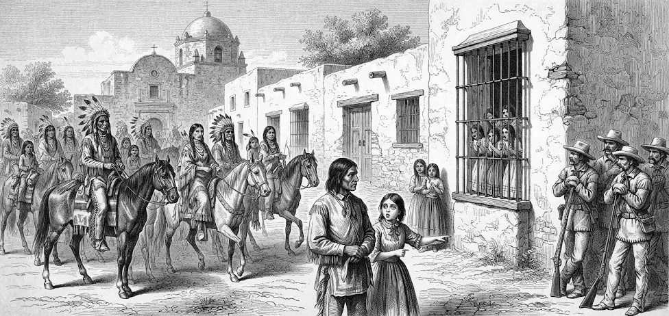
—Mi abuelo murió en una casa —dijo el viejo—. Eso es lo que más le dolía a mi abuela. No que muriera. Que muriera en una casa. Con un techo encima. Entre paredes. Como un ratón en una trampa.
Era domingo y no había profesores. Los estudiantes se habían ido a Lawton a una iglesia de las suyas y el profesor estaba escribiendo cartas en el hotel. Yo fui a ver al viejo de todas formas. No sé por qué. Le llevé una lata de melocotones en almíbar que había comprado en la tienda de Indiahoma, y él se la comió entera, con una cuchara de hojalata, sentado en su silla, sacando los melocotones de uno en uno y bebiéndose el almíbar al final. Dejó la lata en el suelo y empezó a hablar.
—Fue en San Antonio —dijo—. ¿Lo conoces?
Le dije que no. Que nunca había salido de Nuevo México hasta aquel verano. Pero que lo conocía de nombre. Que en mi familia se hablaba de San Antonio.
—¿Por qué?
—Porque allí se murió Francisco. El de los ojos pintados. El que volvió a Atrisco con su bisabuelo de usted. Se volvió a vivir a San Antonio, se casó allí y allí se murió, de viejo, en el año treinta y dos.
El viejo se quedó callado.
—Ocho años antes —dijo al fin.
—¿Antes de qué?
—De lo de mi abuelo.
Los domingos la casa del viejo era otra.
Cuando llegué, la familia volvía de la iglesia, en un carro de mulas, por el camino de tierra. La nuera con un vestido azul y un sombrero de paja con una cinta. La nieta con zapatos de charol que se quitó en cuanto se bajó del carro, y que se llevó a la casa en la mano, con cuidado, como si fueran de cristal. El hijo llevando las mulas. Iban a una iglesia de Indiahoma. El viejo no iba nunca. Se quedaba en su silla, debajo del álamo, y cuando volvían les preguntaba qué había dicho el predicador, y se reía de lo que le contaban.
—Dice que hay que ser pobre para entrar en el cielo —me dijo, en español, cuando la nuera le contó el sermón de aquel día—. Entonces estamos todos dentro. Los comanches primero.
Después de comer, la casa se quedó en silencio. La nuera se echó. La niña se sentó en el porche con un libro de la escuela. El campo de alrededor, el del algodón, estaba quieto, seco, amarillo, con las matas pequeñas y torcidas, y no había nadie trabajándolo porque era domingo. Solo se oía el viento en el molino roto del camino, que chirriaba aunque no diera vueltas, y las gallinas debajo del porche.
El viejo me dijo que en su tiempo no había domingos. Que todos los días eran iguales, o todos distintos, según se mirara. Que los domingos los trajeron los de la agencia, con las raciones y las escuelas. Un día para no trabajar, dijo, a gente que no había trabajado nunca como trabajan los blancos. Y se rio otra vez.
—Ahora me gustan —dijo—. Los domingos. Son los únicos días en que no viene nadie a preguntarme nada.
Me miró.
—Menos tú.
Lo contó como se lo había contado su abuela, que estaba allí. Y yo lo cuento como me lo contó él. Si hay cosas que no son exactas, es porque pasaron por dos bocas antes de llegar a la mía.
Había guerra con los tejanos. Desde hacía años. Los tejanos no eran como los mexicanos ni como los españoles de antes. No querían comerciar. No querían paz. Querían la tierra. Venían del este, de los Estados Unidos, en carros, con familias, con esclavos negros, con perros, con arados, y se metían en las tierras de caza, y cortaban los árboles de los ríos, y mataban los búfalos, y si se les robaba un caballo, mataban a quien fuera. Y luego se habían separado de México y tenían su propio país, con su propio jefe, y sus propios soldados a caballo, que se llamaban rangers, y que eran los peores.
Y los comanches les robaban caballos. Y se llevaban cautivos. Niños, mujeres. Así había sido siempre con todos. Así se hacía.
—Pero aquel invierno —dijo el viejo— los jefes de los Penateka, los de la miel, los del sur, estaban cansados. Había habido viruela otra vez. Había menos gente. Los tejanos eran cada vez más. Y los jefes dijeron: vamos a hacer la paz con ellos, como hicieron nuestros abuelos con los españoles, en el mismo sitio, en San Antonio. Llevaremos a los cautivos y los cambiaremos. Y haremos una raya en la tierra, y ellos de aquí para allá y nosotros de aquí para acá.
»Mandaron mensajeros. Los tejanos dijeron que vinieran. Que trajeran a todos los cautivos.
—Fueron sesenta y tantos —dijo el viejo—. Los jefes, doce. Y sus mujeres, y algunos hijos, y algunos jóvenes. No iban a la guerra. Iban a la paz. Se pintaron la cara de fiesta. Se pusieron la ropa buena. Las mujeres llevaban los vestidos de piel de ciervo con flecos y cuentas, los de las bodas. Los niños iban con sus arquitos de juguete. Llevaron pieles para cambiar. Y caballos.
»Mi abuelo no era jefe. Era un hombre normal. Iba porque era amigo de uno de los jefes, y porque su mujer, mi abuela, quería ver San Antonio. Había oído hablar de la ciudad desde niña: de las casas de piedra, de las campanas, del pan blanco, de las mujeres mexicanas con sus rebozos. Quería verlo. Era una mujer curiosa. Le gustaba ver cosas.
Se calló.
—Toda su vida —dijo— se arrepintió de haber querido ver cosas.
Llegaron una mañana de marzo, con buen tiempo. Entraron en la ciudad a caballo, en fila, por la calle que bajaba a la plaza. La gente salía de las casas a mirarlos. Los mexicanos con curiosidad. Los tejanos con los rifles en la mano.
La abuela del viejo se acordaba de todo. De la iglesia grande, de piedra, con una cúpula. De las casas de piedra y de adobe, encaladas. De un río pequeño, de agua verde y clara, con sauces. De un hombre que vendía melones en una carreta. De un perro amarillo que le ladró a su caballo. De unas niñas mexicanas que se reían detrás de una ventana con rejas.
Llevaban solo a una cautiva. Una muchacha tejana de quince o dieciséis años que se llamaba Matilda. Los jefes tenían más, muchos, repartidos en los campamentos. Pero no los habían traído. Pensaban traerlos uno a uno, cambiándolos uno a uno, como se había hecho siempre. Así se negociaba. Así se sacaba más por cada uno.
Los tejanos los llevaron a una casa de piedra, junto a la plaza, de una sola planta, con el tejado plano. La casa del consejo. Los jefes entraron a hablar. Las mujeres y los niños se quedaron en el patio de atrás, esperando, sentados en el suelo. Algunos jóvenes se pusieron a jugar con los niños de la ciudad a tirar flechas a unas monedas que los tejanos les ponían en un palo, y los niños mexicanos se reían cuando acertaban.
Y la muchacha, Matilda, entró con los tejanos a otra habitación.
—Le habían hecho daño —dijo el viejo. Lo dijo mirando al suelo—. A la muchacha. Mi abuela no lo dijo nunca así, pero yo lo entendí cuando fui mayor. Le habían quemado la nariz. Le habían hecho cosas. No la familia de mi abuela. Otros. Pero estaba con ellos, y eso daba igual.
»Los tejanos la vieron. Y la muchacha les dijo que había más cautivos en los campamentos. Muchos. Quince o así. Y que los comanches los iban a traer de uno en uno para sacar más.
»Y los tejanos se enfadaron.
»Dijeron a los jefes que trajeran a todos los cautivos. Todos. Ya. Y que hasta que no los trajeran, los jefes se quedaban allí. Presos. En aquella casa.
»Y metieron soldados. Por las puertas. Con los rifles.
—Uno de los jefes —dijo el viejo— se levantó y fue hacia la puerta. Para salir. Para avisar a los de fuera. Y un soldado le cortó el paso. Y el jefe sacó un cuchillo.
»Y empezaron a disparar.
»Dentro de la casa. Dentro de una habitación. Los soldados, a los jefes, a quemarropa. Los jefes con los cuchillos, a los soldados. Humo. Gritos. No se veía nada.
»Fuera, en el patio, las mujeres oyeron los tiros y se levantaron. Los jóvenes que jugaban con las flechas se volvieron hacia los soldados que tenían al lado y les dispararon flechas. Los soldados les dispararon a ellos. A todos. A los que corrían. A los que no.
»Mi abuelo estaba en el patio, con mi abuela. No en la casa. Fuera. Esperando, como todos. Cogió a mi abuela del brazo y echó a correr. Hacia la calle, hacia los caballos, hacia el río. Y un soldado le disparó en la espalda. Y se cayó en la calle, delante de una casa de piedra con las ventanas cerradas, encima de un charco.
»Mi abuela se quedó con él. No corrió. Se arrodilló en la calle y le levantó la cabeza. Y le cogieron.
Estuvo un rato callado. Yo no me atrevía a decir nada.
—Murieron treinta y cinco —dijo—. Los doce jefes. Y mujeres. Y niños. Y mi abuelo. A otros los cogieron vivos, mujeres y niños casi todos. A mi abuela entre ellos. Los metieron en la cárcel de la ciudad. Y luego en una de las misiones viejas, río abajo, encerrados.
»A una mujer la soltaron. Le dieron un caballo y comida y le dijeron que fuera a los campamentos y dijera que trajeran a todos los cautivos blancos, y que entonces soltarían a los presos. Que tenían doce días.
»La mujer fue.
Se calló. Se pasó la mano por la cara.
—Y los nuestros —dijo— mataron a los cautivos.
No lo dijo como una disculpa. Ni como un orgullo. Lo dijo como se dice que ha llovido.
—Trece. Niños casi todos. Tejanos y mexicanos. Los que tenían en los campamentos. Cuando la mujer llegó y contó lo que había pasado en San Antonio, las mujeres de los muertos se volvieron locas de dolor. Se cortaron el pelo, se cortaron los brazos, se cortaron los dedos. Y luego cogieron a los cautivos. Los asaron vivos, decía mi abuela, que no estaba, que se lo contaron. Otros dicen que no. No sé.
»A algunos los salvaron. Los que estaban ya adoptados, los que tenían una madre comanche que los defendió. A esos no los mataron. A esos los escondieron.
Me miró.
—Eso también es verdad —dijo—. Si cuentas lo uno, cuentas lo otro.
—¿Y su abuela? —le pregunté al fin.
—Se escapó.
Lo dijo con un orgullo que no le había oído hasta entonces.
—Estuvo encerrada meses, en la misión. Con las otras. Les daban de comer poco, frijoles, maíz. Les hacían trabajar. Las miraban los tejanos y los mexicanos, que venían a verlas como se va a ver a los osos. Y un día, cuando ya no las vigilaban tanto, se escaparon. De noche. Muchas. Mi abuela con ellas. Andando. Sin caballo. Sin nada. Hacia el norte, hacia las llanuras. Diez días, o más. Comiendo raíces, nueces, lo que encontraban. Y llegó a un campamento.
»Y allí estaba su hijo. Mi padre. Que tenía diez años. Que se había quedado en el campamento con su tía cuando ellos fueron a San Antonio, porque estaba malo de una muela.
Se rio.
—Una muela le salvó la vida a mi padre —dijo—. Y así nací yo.
Cuando terminó, no dijimos nada durante mucho rato.
Se había hecho tarde. El sol estaba ya muy bajo y la sombra del álamo se había ido alargando por el patio hasta tocar el corral. La yegua había salido del cobertizo y estaba de pie al borde de la sombra, con la cabeza por encima de los palos, mirándonos. En la casa, la nuera encendía el fogón. Se oía el ruido de los cacharros y una radio, de algún vecino, muy lejos, con una música de violines que llegaba y se iba con el viento.
—Mi abuela vivió hasta que yo tenía quince años —dijo el viejo de pronto—. La conocí bien. Era pequeña, como yo. Tenía los brazos llenos de cicatrices, de cuando se los cortó por mi abuelo, en tiras, de aquí hasta aquí. —Se tocó el brazo, del hombro a la muñeca—. Y le faltaba la punta de un dedo. Este. Se lo cortó también.
»Nunca se volvió a casar. Le pidieron muchos, porque era trabajadora y lista. Dijo que no a todos. Decía que ya tenía marido, que estaba esperándola en otro sitio, y que no quería llegar con otro.
»No hablaba casi de San Antonio. Lo contó pocas veces. Una a mi padre, cuando volvió a la llanura. Y otra a mí, ya muy vieja, una noche de invierno, porque yo le pregunté por qué no quería entrar nunca en las casas de los blancos de la agencia, aunque hiciera frío. Y me lo contó todo. Toda la noche. Y luego no lo volvió a contar nunca.
—¿Y usted se lo ha contado a alguien?
—A ti.
—¿A los profesores no?
—Los profesores me preguntan cómo se casaba la gente. —Se encogió de hombros—. No me preguntan cómo se moría.
Se levantó, despacio, apoyándose en las rodillas. Fue hasta el corral. La yegua le esperaba con la cabeza por encima de los palos. Le puso la mano en la frente, en la estrella, y se quedó así un rato, sin decir nada.
Yo me fui sin despedirme. Me pareció que estaba bien así.
Aquella tarde, al volver a Lawton, conduje muy despacio.
Pensé en Francisco, el de los ojos pintados, el tío de mi tatarabuelo, haciendo la paz en San Antonio en 1785. Mi abuela decía que había sido intérprete, que había hablado con los jefes comanches en su lengua, que había comido con ellos, que había dormido con ellos en el camino, que les había llevado a la ciudad, y que los soldados españoles y los jefes comanches se habían sentado juntos en una sala y habían fumado. Y que el gobernador les había dado regalos, y que se habían ido a casa contentos.
Pensé que a lo mejor había sido en la misma sala.
No lo sé. Nunca lo he sabido. Pero pensé que San Antonio había visto las dos cosas. La paz de 1785 y lo de 1840. Con cincuenta y cinco años de diferencia. Lo que dura la vida de un hombre.
Y que Francisco, que se murió en el treinta y dos, no vio la segunda. Y me alegré por él.
Un dólar al día
Walters, Lawton e Indiahoma · julio de 1933
Ramón
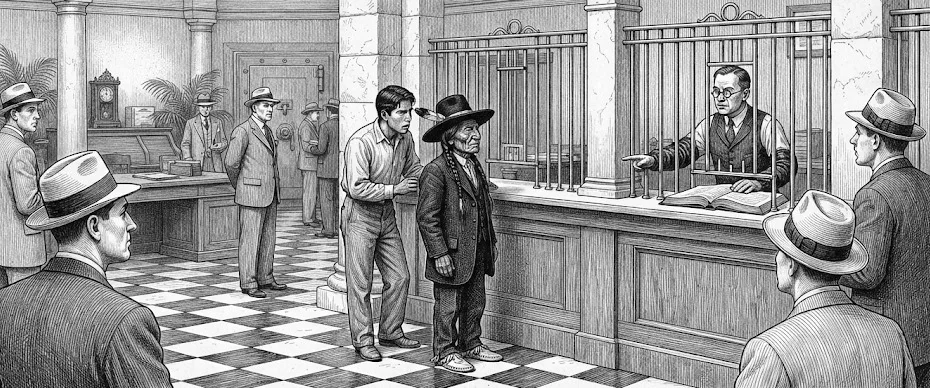
El primer día de julio enterraron a una vieja en la misión de Deyo y los profesores fueron a verlo. Yo los llevé.
La misión era una iglesia de madera blanca, pequeña, con un campanario de tablas, en mitad del campo, al norte de Lawton, con un cementerio detrás cercado de alambre. Era de los bautistas. Habían venido a convertir a los comanches hacía treinta y tantos años y algunos se habían convertido. Otros iban a la iglesia los domingos y por las noches de los sábados se sentaban en una tienda alrededor de un fuego con un tambor de agua y comían peyote hasta el amanecer, rezando a Jesús y al Padre Peyote a la vez, y no veían ninguna contradicción. Eso lo aprendí aquel verano.
La vieja tenía casi noventa años. Había nacido, decían, cuando todavía no había reserva, en un campamento junto al río Rojo. Había visto los búfalos. Había visto a los soldados. Y ahora estaba en una caja de madera de pino, con un vestido de piel de ciervo con flecos y cuentas azules, con la cara pintada de rojo en las mejillas y en los párpados, con mocasines nuevos y una manta encima, y un pastor blanco con corbata leía la Biblia en inglés junto a la tumba mientras sus nietas lloraban en comanche.
Los estudiantes apuntaban. Uno hizo fotos, desde lejos, sin que le vieran, o eso creía él. Yo me quedé junto al coche, con el sombrero en la mano.
Una de las nietas, al acabar, se acercó a la tumba con unas tijeras y se cortó el pelo. Una trenza. La dejó encima de la caja. Otra hizo lo mismo. El pastor miró hacia otro lado.
—Interesting —dijo uno de los estudiantes, a mi lado, apuntando.
No le contesté.
Por la tarde se lo conté a Muchos Caballos. Él ya lo sabía. Lo sabía todo el mundo. La vieja era pariente lejana suya, por la madre de su mujer, que se había muerto hacía años.
—¿Le cortaron la crin al caballo? —preguntó.
—No había caballo.
El viejo asintió, como si eso también lo supiera.
—Antes se mataba el caballo del muerto —dijo—. Encima de la tumba. Para que no tuviera que ir a pie. El mejor caballo, el preferido. A veces todos. Mi abuela contaba que cuando se murió un jefe grande, de su tiempo, mataron doscientos caballos. Luego ya no. Luego dejamos de tener caballos para matar.
Miró hacia el corral, donde la yegua dormitaba.
—Ahora enterramos a la gente con un pastor y una caja de pino —dijo—. Y el caballo va a la fábrica de cola.
Aquel mes aprendí cómo vivían. No por los profesores. Por estar allí, cada día, sentado debajo del álamo, comiendo en el porche, llevando al viejo en el coche, esperando.
Aprendí que cada comanche había recibido ciento sesenta acres de tierra en 1901, cuando el gobierno partió la reserva en trozos, y que el resto, el que sobró, que era casi todo, se lo dieron a los blancos en una lotería. Que los blancos llegaron a miles el mismo verano, en carros, en trenes, a caballo, a pie, y que en unos meses donde antes había hierba y ganado de los comanches había ciudades, Lawton entre ellas, con bancos y cárceles y tiendas y burdeles. Que muchos comanches no sabían qué hacer con ciento sesenta acres, porque nunca habían arado, ni querían, ni tenían arado, y que la agencia les dijo que los arrendaran a los blancos, y así lo hicieron. Y que los blancos sembraban algodón y trigo en las tierras de los comanches y les pagaban un arriendo, poco, una vez al año, y los comanches vivían de eso. Y que cuando el algodón se pagaba mal, como aquel año, el arriendo era menos.
El hijo del viejo, el padre de la muchacha, se llamaba Harold. Tenía cuarenta y tantos años. Había ido a la escuela de indios de Chilocco, donde le cortaron las trenzas el primer día y le pegaban si hablaba comanche, y había vuelto hablando inglés y sabiendo ser carpintero. Trabajaba cuando había trabajo, que aquel verano era poco. Arreglaba carros, tejados, cercas. Cobraba en dinero o en harina o en nada. Era un hombre serio, delgado, con el pelo corto y la piel muy oscura, que no se reía nunca, y que me miraba con desconfianza desde el primer día.
—¿Tú qué ganas con esto? —me preguntó una noche, en el porche, mientras su padre dormía en la tienda.
Le dije que dos dólares al día. Más que su padre.
—No te pregunto eso —dijo—. Te pregunto qué ganas con lo otro. Con lo que te cuenta por las tardes. Con la yegua.
No supe qué contestarle.
—Mi padre es viejo —dijo—. Cree que todo lo que pasó antes era mejor. Que los búfalos, que los caballos, que la guerra. Y no se da cuenta de que eso se acabó. Que ahora hay que comer. Que mi hija necesita zapatos para la escuela. Que esa yegua come avena que no tenemos.
—La yegua es de él.
—La yegua es de él —repitió Harold. Y se quedó mirándome—. Y cuando se muera, será mía.
Una noche de tormenta seca, de esas que traen viento y relámpagos y ni una gota, el viejo me hizo entrar en la tienda.
Era la primera vez. Por fuera parecía una tienda de lona de las del ejército, alta, blanca, sucia de polvo por abajo. Por dentro era otra cosa. Los palos, unos veinte, largos, de cedro, se juntaban arriba, en la punta, atados con una correa, y por el agujero del humo se veía el cielo, que se encendía y se apagaba con los relámpagos. El suelo era de tierra apisonada, barrida. Alrededor, contra la lona, estaban las camas: pieles y mantas sobre unas varas, con almohadas de piel rellenas de hierba. En el centro, un hoyo para el fuego, con piedras alrededor, y un caldero de hierro colgado de un trípode. Y colgadas de los palos, cosas: una bolsa de piel pintada, una cuerda de crin trenzada, un escudo viejo, redondo, metido en una funda de gamuza, unas plumas, un sombrero, una lámpara de petróleo, una foto en un marco, de una mujer joven con un vestido de cuentas.
Olía a humo, a cuero, a hierba dulce y a viejo.
—Mi mujer —dijo el viejo, cuando vio que miraba la foto—. En el noventa y tantos. En Fort Sill. Un blanco nos hizo fotos a todos a cambio de un pollo.
Nos sentamos en el suelo, en las pieles. Fuera rugía el viento, y la lona se hinchaba y se deshinchaba como una cosa viva, y los palos crujían. Dentro no se movía nada. El viejo dijo que las tiendas así no se caen nunca. Que las casas de madera de los blancos se las lleva el viento de las llanuras como hojas, y que una tienda bien puesta, con la puerta al este y el viento por detrás, aguanta lo que le echen.
—Por eso vivo aquí —dijo—. La casa es para guardar las cosas de mi hijo. Y para el invierno. Pero aquí se duerme mejor.
Le pregunté si no le daba frío en invierno.
—Antes no —dijo—. Ahora sí. —Se rio—. Ahora todo me da frío.
La nieta entró al rato con dos tazas de café, de lata, hirviendo. Se sentó también, en la cama de su abuelo, con las piernas cruzadas, como había visto sentarse a las mujeres de las fotos. Y estuvimos los tres allí, bebiendo café, oyendo el viento, sin decir casi nada, hasta que pasó la tormenta.
Me acuerdo de esa noche más que de otras más importantes. No sé por qué. A lo mejor porque fue la primera vez que me sentí en una casa desde que salí de Atrisco.
Yo mandaba el dinero a casa. Todo, casi. Me quedaba con lo justo para la pensión y para comer. Cada sábado iba a la oficina de correos de Lawton, al lado del banco, y ponía un giro postal a nombre de mi madre, de veinte dólares, a veces de veinticinco. Y una carta.
Mi madre no sabía leer. Mi hermana pequeña le leía las cartas. Yo les contaba cosas que no fueran a preocupar. Que comía bien. Que dormía bien. Que los profesores eran buenos. Que Oklahoma era llano y caliente y lleno de polvo, como el llano de arriba de Atrisco pero más. Que había conocido a un viejo indio que tenía una yegua como la Estrellita del abuelo.
En la tercera carta, mi madre me contestó. Me lo escribió mi hermana, con su letra de niña de la escuela de las monjas, con muchas faltas.
Tu madre dice que tengas cuidado con los indios. Y que si la yegua es como la del abuelo, que no se te ocurra comprarla porque no hay dónde tenerla. Y que la abuela Cleofas, que en paz descanse, siempre decía que esa yegua venía de los comanches. Tu padre dice que eso son cuentos de viejas. Aquí no llueve. Los frijoles se están secando en la mata. El cura dice que recemos.
Los sábados por la tarde, después de correos, no tenía nada que hacer, y paseaba por Lawton.
Era una ciudad nueva, de treinta años, con las calles anchas y rectas, tiradas a cordel, y las casas de ladrillo en el centro y de madera fuera. Había un cine donde los sábados ponían películas del Oeste, y donde los indios se sentaban arriba, en el gallinero, con los negros y los mexicanos, y abajo los blancos. Fui una vez. Ponían una de un fuerte y unos indios que lo atacaban, y cuando los indios se caían de los caballos, abajo aplaudían. Arriba no aplaudía nadie. A mi lado había un comanche joven, de mi edad, con sombrero de vaquero, que se comía unas pipas y escupía las cáscaras al suelo, y que en una de las cargas, cuando los soldados salieron del fuerte tocando la corneta, me dijo en inglés, sin mirarme:
—Esos caballos son malísimos.
Y era verdad. Eran malísimos.
Me reí. Y él también. No nos dijimos el nombre. Al acabar se fue.
Por las noches de sábado, en un descampado detrás de la estación, los braceros mexicanos hacían baile. Había uno que tocaba el acordeón y otro la guitarra, y bailaban entre ellos, o con las pocas mujeres que había, que eran de las familias que iban de paso a los campos de algodón, y alguna de la ciudad. Fui. Bailé con una muchacha de Durango que se llamaba Chela, que iba con sus padres al sur de Texas, y que me dijo que yo hablaba como los viejos, con palabras antiguas, como en los libros de la iglesia. Que dónde había aprendido a hablar así.
Le dije que en Atrisco se hablaba así. Que llevábamos doscientos años hablando igual.
Se rio de mí. Pero bailó conmigo tres veces.
Al día siguiente se fueron, en un camión, al sur.
No sé por qué cuento esto. Es que me acuerdo de todo aquel verano así, a trozos, como se recuerdan los sueños. Una muchacha de Durango. Un comanche en el cine. Un viejo en un banco.
Una tarde el viejo me pidió que le llevara a Lawton.
No a ver a los profesores. A la ciudad. Quería ir al banco. Se puso un traje negro, viejo, que le quedaba grande, con un sombrero de fieltro negro, de ala ancha, con una pluma de águila en la cinta, y sus trenzas envueltas en tela roja, y sus mocasines. Y se sentó en el asiento de atrás del Ford, muy derecho, con las manos en las rodillas, como se sentaba en la silla del porche de Walters, mirando por la ventanilla los campos de algodón secos, quemados, con las plantas pequeñas y amarillas, sin una flor.
—Todo esto era hierba —dijo, al rato, en español—. Hierba alta. Hasta aquí. —Se tocó el pecho—. Cuando yo era niño, venías a caballo por aquí y no veías al de al lado. Solo se le veía la cabeza. Y había búfalos. Y antílopes. Y lobos. Y perros de la pradera, ciudades enteras, miles. Y ahora mira.
No había nada que mirar. Tierra roja, rajada, con las plantas de algodón muertas en filas, y polvo, y una casa de madera con un hombre blanco sentado en el porche sin hacer nada, que nos vio pasar y no levantó la mano.
—Los blancos le dieron la vuelta a la tierra —dijo el viejo—. Con el arado. Le pusieron la hierba abajo y la tierra arriba. Y la tierra se está yendo. Se la lleva el viento. La tierra se va a ir a donde se fueron los búfalos.
En el banco me pidió que entrara con él.
Era un edificio de ladrillo con columnas de mármol falso y un suelo de baldosas blancas y negras, como un tablero de damas, y unas ventanillas con rejas de latón detrás de las cuales había hombres con manguitos negros y gafas. Hacía fresco dentro. Olía a cera y a papel. La gente se volvió a mirar al viejo cuando entró, con su traje y sus trenzas y su pluma. Él no miró a nadie. Fue derecho a una ventanilla y dijo algo en comanche, y luego, como el hombre de detrás de la reja no le entendía, me miró a mí.
Quería saber cuánto dinero tenía.
El hombre lo buscó en un libro grande. Tardó mucho. Después le dijo, en inglés, que la cuenta estaba a nombre de John Manyhorses, que era una cuenta de la agencia, que el dinero del arriendo de su tierra entraba allí una vez al año, y que había en ella catorce dólares y treinta y dos centavos.
Se lo traduje.
El viejo se quedó quieto un momento. Asintió.
—Dile que quiero sacar diez —dijo.
El hombre dijo que no podía. Que para sacar dinero de una cuenta de la agencia hacía falta un papel de la agencia, firmado por el agente. Que el viejo era un indio restringido, que no podía disponer de su dinero sin permiso.
Se lo traduje. Me costó.
El viejo no dijo nada. Me miró un momento. Y luego se dio la vuelta y salió del banco, cojeando, con la cabeza alta, por el suelo de damas, entre la gente que le miraba, y se metió en el coche.
En el camino de vuelta no habló.
Ya cerca de su casa, cuando se veía el álamo en la distancia, me dijo que parara. Paré. Se quedó mirando por la ventanilla.
—Quería comprar avena —dijo—. Para la yegua. Para que mi hijo no diga que come lo que no tenemos.
No supe qué decir.
—Ya no somos dueños de nuestro dinero —dijo—. Ni de nuestra tierra. Ni de nuestros hijos, que se los llevan a las escuelas. Pero la yegua es mía. Eso no lo pone en ningún papel. La yegua es mía.
Al día siguiente, en Lawton, compré un saco de avena de cincuenta libras con mi dinero, por un dólar y diez centavos, y lo metí en el maletero del Ford. Se lo dejé en el porche sin decir nada.
Harold lo vio. No dijo nada tampoco. Pero aquella noche, cuando me fui, estaba en el corral echándole avena a la yegua en un cubo, con cuidado, con la mano.
Refugio
Comanchería · 1845-1862 · lo que contó Muchos Caballos de su madre
Ramón
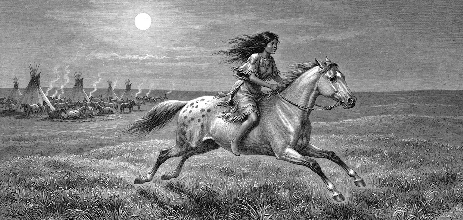
—Mi madre cantaba en español —dijo el viejo—. Por eso lo hablo.
Era de noche. Por primera vez me había pedido que me quedara a cenar y luego un rato más, a la luz del fuego que su nuera encendía delante de la tienda para espantar los mosquitos. Harold no estaba; se había ido a Lawton a buscar trabajo en una obra del gobierno, un camino. La nieta estaba sentada en una caja, escuchando, aunque no entendía el español. Su madre cosía a la luz de un farol de petróleo, en el porche.
—Me cantaba de niño, para dormirme. A la rorro, niño. Y otra de un pajarito que se murió de frío. Y otra de una paloma. —Se quedó callado—. Me sé todas. No sé lo que quieren decir algunas palabras, pero me las sé.
Y cantó. Bajito, con una voz rota, de viejo, sin dientes. Una canción de cuna que yo conocía porque me la cantaba mi madre. Mal pronunciada, con las palabras cambiadas de sitio, con el acento del norte. Pero era la misma.
La nieta le miraba con la boca abierta. No le había oído cantar nunca en otra lengua.
—Se llamaba Refugio —dijo—. Refugio Cárdenas. Era de un rancho de Coahuila, cerca de un pueblo que se llamaba Parras, donde había viñas. Así lo decía ella: viñas, uvas, vino. No sé lo que es una viña. No la he visto nunca.
Le dije que era un campo de uvas. Que en el sur de Nuevo México, en El Paso, también había.
—Mi madre decía que en su rancho había uvas, y nogales, y una acequia, y una capilla con una Virgen de vestido azul. Y que su padre tenía cabras. Y que un día, cuando tenía nueve años, estaba en la acequia con su hermana mayor, lavando, y llegaron.
Se calló.
—Los nuestros —dijo—. Mi abuelo, mi padre. No sé si ellos o otros. Bajaban a México todos los otoños. Era como una cacería. Se iban en la luna llena de septiembre, cuando se ve de noche, por eso los mexicanos la llamaban la luna de los comanches. Cientos. A veces mil. Por el camino de siempre, por el Pecos, por el río Grande, y al sur, a Coahuila, a Chihuahua, a Durango, a Zacatecas, más abajo todavía. Lejos. Se llevaban caballos, mulas, gente. Mataban a los que se defendían. Quemaban. Y volvían en invierno con manadas de miles.
»Mi padre fue muchas veces. Se lo oí contar de viejo. Contaba que los mexicanos ni se defendían ya. Que estaban solos. Que su gobierno estaba lejos, en México, peleándose entre ellos, y no mandaba soldados. Que los pueblos cerraban las puertas y tocaban las campanas y rezaban. Que había pueblos enteros vacíos. Que era fácil.
Me miró.
—Tu gente —dijo.
No dije nada. Era verdad.
—A mi madre la cogió un hombre que no conozco —siguió—. La subió a su caballo. A la hermana la mató, porque gritaba y le mordió. A mi madre no, porque era pequeña y no gritó. No gritó nunca. Eso decía ella. Que se quedó callada desde la acequia hasta la llanura, un mes, sin decir una palabra, y que por eso no la mataron.
»En el camino, cuando ya estaban cerca de casa, ese hombre la cambió. A mi abuela. Por un caballo.
—¿A su abuela? ¿La que se escapó de San Antonio?
—La misma. —Asintió—. Mi abuela había perdido a mi abuelo en San Antonio. Y luego había perdido a dos hijos, de una enfermedad. Le quedaba mi padre y nadie más. Y quería una hija. Y vio a aquella niña mexicana, callada, con los ojos muy abiertos, atada en el caballo de otro, y la quiso. Y dio por ella un caballo. Uno bueno.
»Y se la llevó a su tienda, y la lavó, y le dio de comer, y le cortó el pelo como a las niñas comanches, y le puso un vestido de piel de ciervo. Y la crió.
—¿Le pegaba?
El viejo me miró con cara de no entender.
—¿Por qué iba a pegarle? Era su hija.
Me contó cómo fue. Cómo lo contaba su madre.
Que al principio lloraba todas las noches. Que se escapaba, y la traían. Que no quería comer carne cruda, ni hígado con hiel, ni tuétano, y que su madre comanche le guisaba la carne aparte, en una olla de hierro que había comprado a los comancheros, para que comiera algo. Que los otros niños se reían de ella y le tiraban barro, y que un día ella cogió a uno, el más grande, y le mordió la oreja hasta hacerle sangre, y que desde entonces no se reían.
Que aprendió la lengua en un invierno.
Que aprendió a montar en un verano.
Que a los doce años curtía pieles mejor que nadie, raspándolas con un hueso afilado, frotándolas con sesos de búfalo, suavizándolas con las manos y con los dientes hasta que quedaban blancas y blandas como la tela. Que a los catorce cosía mocasines con púas de puercoespín y cuentas de colores que nadie hacía tan bien. Que a los quince cuidaba la manada de su madre, que era pequeña, de treinta o cuarenta caballos, y que entre ellos había una yegua gris con estrella que le habían dicho que no montara nunca, y que ella la montaba a escondidas, de noche, al galope, por la llanura, sin silla, con el pelo al viento.
—Eso no se lo contó a nadie hasta que fue vieja —dijo el viejo, y se rio—. Me lo contó a mí. Que la montaba a escondidas. Que corría más que ninguno.
—Se casó con mi padre a los diecisiete —dijo—. Con su hermano, casi. Se habían criado en la misma tienda. Pero no eran hermanos de sangre, y entre nosotros eso estaba bien. Él le dio a su madre, que era también la madre de ella, diez caballos. Mi abuela se rio y le dijo que era un tonto, que pagar a tu propia madre por tu mujer. Pero los aceptó.
»Y tuvieron hijos. Una niña primero, que se murió. Luego otra niña, que vivió. Y luego yo.
—¿Cuándo?
—El invierno en que los blancos empezaron su gran guerra entre ellos. Los del norte contra los del sur. Lo supimos porque los soldados se fueron de los fuertes de Texas, y los tejanos también, a pelearse lejos, y durante unos años la frontera estuvo vacía. Mis tíos decían que fue el mejor tiempo. Que se podía bajar a robar caballos a Texas sin que nadie te persiguiera.
Lo calculé. 1862, más o menos. Le dije que eso le hacía tener setenta y uno.
—Setenta y uno —repitió, como probando el número—. Mucho.
—¿Cómo era ella? —le pregunté—. De mayor. Cuando usted era niño.
Lo pensó.
—Trabajaba —dijo—. Siempre. No la recuerdo sin hacer nada. Raspando una piel, cosiendo, cortando carne en tiras para secarla, moliendo bayas con sebo, cargando leña, montando la tienda, desmontándola. Cuando nos movíamos, era la primera que tenía la tienda en el suelo y la última en sentarse. Y mientras trabajaba, cantaba. En español. Todo el día. Las de la cuna, y otras. De la Virgen. De un hombre que se iba a la guerra. De las uvas.
»Y era alegre. Eso también. Se reía con las otras mujeres por cualquier cosa. Hacía bromas que las demás no se atrevían. A los hombres les tomaba el pelo. A mi padre el primero. Se ponía su sombrero y andaba como él, con las piernas torcidas de tanto caballo, y todo el campamento se reía, y mi padre también.
»Pero a veces se ponía triste. Se iba sola, al río, o a una loma, y se sentaba allí mucho rato, mirando hacia el sur. Sin cantar. Nosotros sabíamos que entonces no había que molestarla. Mi hermana y yo nos quedábamos lejos, jugando, y mirándola de reojo. Y luego volvía, como si nada, y se ponía a trabajar otra vez.
»Una vez la seguí. Era pequeño. Me escondí detrás de unas matas y la vi. Estaba sentada en la loma, con las manos en el regazo, y movía los labios. Rezaba. Ahora sé que rezaba. Entonces no lo sabía. Pensé que hablaba con alguien que yo no veía.
»Me vio. Me llamó. Me senté a su lado. Y me dijo en español: «Mira, allí abajo, muy lejos, está mi casa. No se ve. Pero está».
»Yo miré y no vi nada. Hierba. Cielo. Le dije que no veía nada. Y ella me dijo: «Ya lo sé. Por eso te lo digo. Para que sepas que está, aunque no se vea».
Se quedó callado.
—Nunca he visto Coahuila —dijo—. Pero sé que está.
—Una vez —dijo, después de un rato— vinieron a buscarla.
La nuera, en el porche, había dejado de coser. Escuchaba.
—Yo tendría cuatro o cinco años. Estábamos en un campamento grande, en el río Canadiano, donde venían a comerciar los comancheros. Y entre los comancheros vino un hombre que no era de Nuevo México. Era de Coahuila. Un hombre ya mayor, con barba, con un sombrero grande, que preguntaba por las cautivas mexicanas. Traía dinero. Y una carta. Del gobierno de Coahuila, o de una familia, no sé. Buscaba a las mujeres de los ranchos de por allí, para pagar su rescate y llevárselas a casa.
»Y preguntó por una Refugio Cárdenas, del rancho tal, de Parras.
Se calló.
—Mi madre estaba allí. Delante de él. Con mi hermana de la mano y conmigo atado a la espalda. Le oyó decir su nombre. Su nombre de antes. El que nadie había dicho en quince años.
»Y no dijo nada.
—¿Nada?
—Nada. Se quedó callada, como en el caballo, cuando la trajeron. El hombre preguntó a otras. Una dijo que sí, que era ella, otra. Y se fue con él. Otra dijo que no conocía a ninguna Refugio. Mi madre no dijo nada. Y el hombre se fue.
Miró el fuego.
—Mi padre le preguntó esa noche por qué no había dicho nada. Y ella le dijo: porque si digo que soy Refugio Cárdenas, tengo que irme. Y si me voy, allí ya no hay nadie. Mi madre estará muerta o vieja. Mi hermana la mataron. Mi casa la quemaron. Y aquí estáis vosotros. Mis hijos. Mi madre. Mi caballo.
»Y le dijo una cosa más, que mi padre me contó cuando ella se murió. Le dijo: allí sería una mujer que estuvo con los indios. Aquí soy una mujer.
Me quedé callado mucho rato. El fuego se apagaba. La nuera se levantó, sin decir nada, echó unas ramas y volvió a su silla.
—Hubo otras así —dijo el viejo—. Muchas. Mexicanas, sobre todo. Alguna blanca. Había una, en tiempos de mi madre, con los Nokoni, los que se mueven, una blanca de pelo claro y ojos azules, que la cogieron de niña en Texas, en un fuerte, y que se casó con un jefe y tuvo hijos. Mi madre la vio alguna vez, en los campamentos grandes. Decía que era una mujer callada, como ella. Que no hablaba ya inglés. Que curtía pieles como ninguna.
»Y un día los rangers atacaron su campamento y la cogieron. Y la llevaron con los blancos. Con su familia de antes. Con su hija pequeña.
—¿Y qué pasó?
—Que no quiso. Que se escapaba. Que lloraba. Que se cortaba los brazos con un cuchillo, como hacen nuestras mujeres por los muertos. Que se le murió la niña y ella se dejó morir también. Eso contaban. —Se quedó callado—. Su hijo es Quanah. El que fue jefe después. El que tenía la casa grande con estrellas en el tejado, en Cache. Se murió hace veintitantos años.
Lo dijo así, de pasada, como se dice el nombre de un vecino.
Yo había oído el nombre. Lo había oído en Lawton, en la pensión, a los braceros, en el hotel, a los estudiantes. Quanah Parker. Como se oye el de alguien famoso. No dije nada.
—Mi madre se murió en la reserva —dijo el viejo—. Vieja. En una tienda como esta. El invierno de 1899, antes de que repartieran la tierra. Con el pelo blanco. Me pidió que le cantara la canción de la paloma, y se la canté, y no me salía. Y ella se rio de mí.
»Y me dijo que la enterrara con la cara hacia el sur. Hacia Coahuila. No por volver. Por mirar.
»La enterré así. En las montañas, ahí. —Señaló hacia las Wichita, negras contra el cielo—. En una grieta de las rocas, con piedras encima, como se hacía. Y maté su caballo. El último que tuvo. Uno bayo, viejo.
Se calló.
—No la yegua gris. Esa no. Esa era de la familia.
Miró hacia el corral, en la oscuridad. No se veía nada. Pero se oía a la yegua resoplar.
—Esa viene de la que mi madre montaba a escondidas —dijo.
Volví a Lawton muy tarde, con la llanura negra y el viento parado.
Iba cantando. No me di cuenta hasta que llevaba un rato. Iba cantando la de la rorro, bajito, con la ventanilla abierta, como la cantaba mi madre cuando los pequeños no se dormían, sentada en la cama con el niño en las rodillas, meciéndolo, mirando la pared. Y pensé que mi madre la había aprendido de su madre, y su madre de la suya, y así hacia atrás, hasta alguna mujer de Castilla, o de Andalucía, o de donde fuera, que se la cantó a un niño en un barco, o en una casa de Zacatecas, o en un rancho de Coahuila. Y que la misma canción había ido por dos caminos: uno hasta Atrisco, hasta mi madre, hasta mí. Y otro hasta una acequia de Parras, y desde allí, atada a un caballo, hasta la llanura, hasta una tienda comanche, hasta aquel viejo que la cantaba sin dientes.
Pensé en Refugio Cárdenas, oyendo su nombre en boca de un desconocido y callándose.
Y pensé en la Guadalupe de mi tatarabuelo. En que a lo mejor a ella también le habría gustado callarse. Quedarse. Y que nadie le preguntó.
Pensé que las mujeres de aquellas historias no decidían casi nunca nada. Que las llevaban de un lado a otro, como a los caballos, de mano en mano, por una mula, por dos mantas, por un rescate. Y que Refugio, una vez, una sola vez en su vida, pudo decidir. Y decidió quedarse callada.
Cuando llegué a la pensión, los braceros dormían. Me tumbé en el catre sin desvestirme. Y antes de dormirme me acordé de que no sabía cómo se llamaba la madre de mi madre. La abuela de Pajarito. La conocí de niño. Era una vieja pequeña, de negro, que olía a romero. Todos la llamábamos abuelita.
Me prometí que se lo preguntaría a mi madre en la próxima carta.
La bandera de las estrellas
Atrisco y Albuquerque · septiembre de 1846 · lo que contaba la abuela Cleofas
Ramón
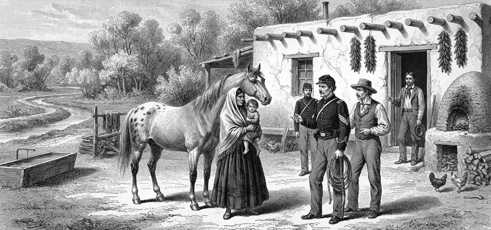
—Ahora tú —dijo el viejo a la noche siguiente—. ¿Qué le pasó a tu gente cuando vinieron los americanos?
Le dije que nada. Que eso era lo raro. Que no pasó nada.
—Algo pasaría —dijo él.
Y le conté lo de Josefa.
Josefa era la nuera de Antonio, el comanchero. La bisabuela de mi abuela Cleofas, o algo así; las abuelas mezclan las generaciones como mezclan las cartas. Tenía en 1846 unos veinticinco años, tres hijos, un marido que se llamaba Juan de Dios y trabajaba la tierra de su padre en Atrisco, y una yegua gris con estrella en el corral, que era la cuarta o la quinta desde la potra que dejó el comanche.
Mi abuela decía que aquel verano hubo rumores. Que en la plaza de Albuquerque, después de misa, los hombres hablaban de que los americanos venían. Que había guerra entre México y los Estados Unidos, lejos, en Texas, en el río Bravo. Que un ejército americano había salido de Misuri por el camino de Santa Fe, el de los carros de los comerciantes, y que venía hacia Nuevo México. Que el gobernador Armijo había juntado a la milicia, a los hombres de los ranchos, con sus lanzas y sus escopetas viejas, para salirles al paso en un cañón, en Apache Canyon, al este de Santa Fe.
Juan de Dios fue. Con su escopeta de chispa, que era de su abuelo, y su lanza, y su caballo, que no era la yegua. Josefa se quedó en Atrisco con los niños, rezando.
Esos diez días, decía mi abuela, Josefa no durmió.
Era agosto. El maíz estaba alto, el chile empezaba a ponerse colorado, había que regar cada tres días y quitar las hierbas y espantar a los pájaros. Josefa lo hizo todo sola, con el niño mayor, que tenía siete años, y la niña, que tenía cinco, y el pequeño a la espalda en un rebozo. Por la mañana iba a la acequia, por la tarde al campo, por la noche molía el maíz del día siguiente en el metate, de rodillas, en la cocina, a la luz de un candil de sebo. Y mientras molía, rezaba. Un rosario detrás de otro. Por Juan de Dios, por los hombres de Atrisco que se habían ido con él, por que no hubiera guerra, por que si la había, Dios estuviera con los suyos, aunque ya no sabía muy bien quiénes eran los suyos.
Las mujeres del pueblo se juntaban por la tarde en la puerta de la iglesia, a esperar noticias. No llegaba ninguna. Llegaban rumores. Que los americanos eran diez mil. Que eran mil. Que traían cañones que tiraban balas del tamaño de una calabaza. Que quemaban las iglesias. Que se llevaban a las muchachas. Que eran protestantes y no creían en la Virgen. Una vieja de Pajarito juraba que tenían cola. Nadie la creía, pero nadie se atrevía a decir que no.
Y por las noches, cuando los niños dormían, Josefa salía al corral y se sentaba junto a la yegua. No sé por qué. Mi abuela decía que la yegua la tranquilizaba. Que se le acercaba en la oscuridad y le apoyaba la cabeza en el hombro, pesada, caliente, y se quedaba así. Y que Josefa le hablaba. Le contaba lo que tenía miedo de que pasara. Y la yegua escuchaba, o hacía como que escuchaba, que es lo mismo.
—Mi abuela decía que las mujeres de la familia siempre le han contado las cosas a esa yegua —le dije al viejo—. A todas las yeguas. Lo que no le podían contar al marido, ni al cura, ni a la madre. Que mi abuela misma, de joven, se lo contaba a la de su tiempo. Y que la yegua no se lo contaba a nadie.
El viejo asintió.
—Para eso están —dijo.
A los diez días Juan de Dios volvió. Sin haber disparado un tiro.
—Armijo se fue —le dije al viejo—. Así lo contaba mi abuela. Que se fue. Que juntó a todo el mundo en el cañón, a miles, y luego, el día antes de que llegaran los americanos, cogió a sus soldados, sus dragones, los de verdad, y se fue al sur, a Chihuahua, y dejó a la milicia allí, sola, sin jefe. Y que la milicia se miró, y se volvió cada uno a su casa.
—¿Por qué se fue?
—Unos decían que le habían pagado. Otros, que tuvo miedo. Otros, que sabía que no se podía ganar y no quería que mataran a la gente. —Me encogí de hombros—. Mi abuela decía que le pagaron. Juan de Dios decía que hizo bien.
Los americanos entraron en Santa Fe en agosto, un día de calor, sin que nadie les disparara. Su general subió a la azotea de la casa de los gobernadores, la misma, decía mi abuela, donde había estado siempre el gobernador del rey y luego el de México, y quitaron la bandera de México y pusieron la suya. Y el general leyó un papel diciendo que ahora todos eran americanos. Que se respetarían sus casas, sus tierras, su religión. Que ya no tenían que obedecer a México.
Y en septiembre bajó por el río, por el Camino Real, con sus soldados, hasta Albuquerque y más abajo, para que los pueblos vieran que había llegado.
Josefa fue a verlos.
Mi abuela contaba esto con mucho detalle, como si lo hubiera visto. Que Josefa cruzó el río por el vado, con los niños, y subió hasta la plaza de Albuquerque, delante de la iglesia de San Felipe, que tenía dos torres. Que estaba toda la gente del valle. Que los americanos llegaron por el norte, por el camino, en una columna larga, larguísima, de hombres a caballo y a pie, con carros, con cañones, con mulas, con banderas, con un polvo que se veía desde una legua.
Que los soldados de a caballo, los dragones, llevaban casacas azules y gorras, y montaban caballos enormes, grandes, pesados, cansados, flacos, del viaje, mucho más grandes que los caballos de Nuevo México. Y que los de a pie, que eran voluntarios de Misuri, no llevaban uniforme, sino ropa de cualquier manera, camisas de cuadros, sombreros de paja, barbas, y eran altos y flacos y estaban quemados del sol y escupían tabaco, y miraban a las muchachas, y se reían, y hablaban un idioma que nadie entendía.
Que pusieron la bandera en la plaza. Con rayas y estrellas. Que tocaron un tambor. Que el general, un hombre alto, serio, con patillas, habló desde un caballo, y que un intérprete repitió en español lo mismo que había dicho en Santa Fe. Que ahora eran americanos.
—¿Y la gente? —preguntó el viejo.
—Escuchó. Y luego se volvió a casa. —Me encogí de hombros—. Mi abuela decía que Josefa le dijo a una vecina, en la plaza, mientras se iban: pues ya está. Y que la vecina le contestó: pues ya está.
El viejo se rio.
—Pero algo pasó —le dije—. Una cosa.
Los soldados acamparon dos días en los campos de la orilla, entre Albuquerque y Atrisco. Necesitaban maíz para los caballos, carne, leña. Y caballos. Los suyos estaban reventados del camino, de las llanuras, de la sierra. Iban de rancho en rancho comprándolos. Pagaban con unos papeles que no valían nada en Nuevo México o con unas monedas de plata que sí. Y si alguien no quería vender, a veces se los llevaban igual.
Y a la casa de Juan de Dios llegaron tres. Un sargento y dos soldados. Con un intérprete, un comerciante de Santa Fe que hablaba un poco de español. Miraron el corral. Y vieron la yegua.
—La querían —le dije al viejo—. El sargento. Dijo que era el mejor caballo que había visto en Nuevo México. Que le daba por ella veinte pesos de plata. Que era más de lo que valía.
»Juan de Dios dijo que no.
»El sargento dijo cuarenta.
»Juan de Dios dijo que no.
»Y el sargento se enfadó. Dijo algo en inglés, fuerte, y uno de los soldados abrió la puerta del corral y entró a por ella con una cuerda.
El viejo estaba muy quieto.
—Y entonces salió Josefa —le dije—. Con el niño pequeño en brazos. Y se puso delante de la yegua. En el corral. Entre el soldado y la yegua. Y le dijo al intérprete, en español, que le dijera al sargento que esa yegua no se vendía porque la había dado un comanche a su familia hacía cincuenta años, y que tenía un encargo, y que si se la llevaban, Dios los castigaría. Y que si querían llevársela, que le pegaran un tiro a ella primero.
—¿Y?
—Y el sargento se quedó mirándola. Y luego se rio. Y dijo algo en inglés. Y se fueron.
—¿Qué dijo?
—El intérprete se lo tradujo luego a Juan de Dios. Dijo: los mexicanos están locos con sus caballos. Peor que los indios.
El viejo se echó a reír. Tanto que se tuvo que sujetar la barriga y se le saltaron las lágrimas, y su nuera salió al porche a ver qué pasaba.
—Peor que los indios —repetía—. Peor que los indios.
—Luego hubo otra cosa, en el invierno —le conté, cuando se calmó—. En Taos. Los indios del pueblo de Taos y algunos mexicanos se levantaron contra los americanos. Mataron al gobernador nuevo, al que habían puesto los americanos, en su casa, delante de su familia. Y los soldados fueron a Taos y bombardearon la iglesia del pueblo, donde se habían metido los indios, con la gente dentro. Mi abuela decía que mataron a ciento y pico. Y que luego ahorcaron a los que quedaron.
»En Atrisco no se levantó nadie. Juan de Dios dijo que no se metía. Que ya había ido una vez al cañón y había vuelto sin disparar, y que no iba a ir otra vez a que le mataran por un gobernador que tampoco estaba.
»Y en 1848 firmaron un papel en México, lejos, y México les vendió Nuevo México, y California, y todo lo de arriba, por quince millones de dólares. Y se acabó. Ya éramos americanos para siempre.
El viejo asintió.
—Quince millones —dijo—. Mucho dinero.
—Mucho.
—¿Y a quién se los pagaron?
—A México.
—¿Y México a quién se lo había comprado?
No supe qué contestar.
—¿Y tú? —me preguntó luego—. ¿Tú eres americano?
Le dije que sí. Que tenía papeles. Que había nacido en Nuevo México en 1911, el año antes de que lo hicieran estado, y que mi padre decía que por un año había nacido en un territorio y no en un estado, como si eso fuera una desgracia. Que en la escuela nos enseñaban la historia de los americanos, la de Washington y la de Lincoln y la de los peregrinos del barco, y nada de la nuestra. Que si hablabas español en el patio te ponían de rodillas en un rincón con los brazos en cruz. Que a mí me pasó muchas veces.
—A mi hijo le cortaron las trenzas —dijo el viejo.
—Ya lo sé.
—Es lo mismo.
—No es lo mismo.
Lo pensó.
—No —dijo—. No es lo mismo. Pero se parece.
Le dije que en mi casa nadie decía que éramos americanos. Decíamos que éramos de Atrisco. O nuevomexicanos. O mexicanos, a veces, aunque mi padre se enfadaba si lo decíamos, porque decía que los mexicanos eran los de México, los del otro lado, y que nosotros estábamos aquí desde antes que México. O españoles, como decía mi abuela, que se había muerto llamándose española sin haber visto nunca España ni saber dónde estaba.
—Somos de muchas cosas —le dije—. Y de ninguna.
El viejo se rio, bajito.
—Eso es ser de una frontera —dijo—. Nosotros también. Mi madre era de Coahuila. Mi abuela, de la gente de la miel. Mi bisabuela, lipana. Mi nieta va a una escuela de blancos y habla inglés mejor que comanche. Y yo hablo español con un muchacho de Atrisco debajo de un álamo, en Oklahoma, que antes no existía. —Se encogió de hombros—. Todos somos de una frontera. Lo que pasa es que a unos se la mueven y a otros no.
Estuvimos callados un rato. El fuego chisporroteaba. Un coyote aulló lejos, hacia las montañas, y le contestó otro.
—A vosotros os cambiaron la bandera —dijo el viejo al fin—. Tres veces. España, México, América. Y vosotros os quedasteis en vuestra casa, regando vuestro maíz, y dijisteis: pues ya está.
»A nosotros no nos cambiaron la bandera. Nosotros no teníamos bandera. A nosotros nos cambiaron la tierra. Nos la quitaron de debajo de los pies, trozo a trozo, como se le quita la piel a un búfalo. Y no nos podíamos quedar en casa. Porque la casa era la tierra.
Me miró.
—Pero tu Josefa —dijo— hizo bien. Con la yegua.
—Hizo bien.
—Peor que los indios —dijo, y se volvió a reír, más bajo.
El verano de los calambres
El río Arkansas y el río Canadiano · 1849 · lo que contó Muchos Caballos de su padre
Ramón
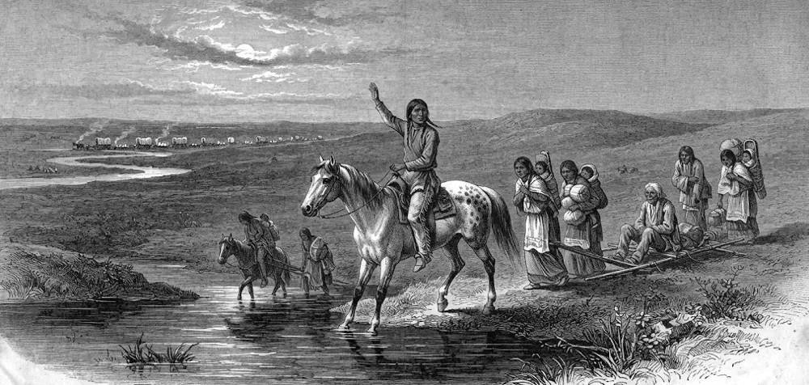
—Mi padre se llamaba Tejón —dijo el viejo—. Porque de niño, cuando se enfadaba, se metía en un agujero y no salía.
Se rio.
—Después fue un hombre muy valiente. Pero el nombre se le quedó. Así pasa.
Era una tarde de mucho calor, más que ninguna. El termómetro de la tienda de Indiahoma marcaba ciento diez grados de los americanos, que el tendero me dijo que eran más de cuarenta de los otros. Los profesores habían suspendido las entrevistas porque uno de los estudiantes se había desmayado en el porche de Walters. El viejo y yo estábamos debajo del álamo, sin movernos, con un cubo de agua entre los dos del que bebíamos con un cazo, y la yegua estaba tumbada en la sombra del cobertizo, de lado, como si estuviera muerta, aunque de vez en cuando movía una oreja.
—Te voy a contar lo de los calambres —dijo el viejo—. Porque hace calor. Fue con calor.
Su padre tenía unos dieciocho o diecinueve años. Ya había ido a México dos veces con los mayores. Ya tenía caballos propios, una docena, y una yegua gris con estrella que su madre le había dado al hacerse hombre, la hija de la que montaba Refugio a escondidas. Todavía no se había casado con ella.
Y aquel verano, en la llanura del norte, junto al río Arkansas, donde la gente iba a cazar búfalos y a comerciar con los blancos del fuerte de adobe que tenían allí unos hermanos americanos, empezó a pasar gente.
—Blancos —dijo el viejo—. Muchos. Más de los que habíamos visto nunca. En carros cubiertos de tela blanca, tirados por bueyes, en filas que no se acababan, que levantaban un polvo que se veía de un día de camino. Hombres, mujeres, niños, perros, vacas. Iban hacia el oeste. Todos hacia el oeste. Por el río.
»Mi padre le preguntó a un comerciante adónde iban. Y el comerciante le dijo que al oeste, muy lejos, al otro lado de las montañas, donde se acababa la tierra y empezaba el agua grande, habían encontrado oro. Y que todos los blancos del mundo iban a buscarlo.
»Mi padre no sabía qué era el oro. El comerciante le enseñó una moneda amarilla. Mi padre la miró y le dijo que eso no se comía, que no se montaba, que no abrigaba. Y el comerciante se rio y le dijo que por eso mismo valía tanto.
—Mi padre iba mucho a aquel fuerte —siguió el viejo—. El de adobe, el de los hermanos. Decía que era la cosa más rara que había visto. Una casa enorme, cuadrada, de barro, con torres redondas en las esquinas y una puerta grande con dos hojas de madera, en mitad de la llanura, junto al río. Y dentro, un patio, y alrededor del patio habitaciones, muchas, y en las habitaciones de todo: mantas, cuchillos, hachas, ollas de hierro, telas de colores, cuentas, tabaco, harina, azúcar, café. Y unos hombres blancos que hablaban un poco de todas las lenguas, de la nuestra, de la de los cheyennes, de la de los mexicanos.
»Allí se cambiaban pieles de búfalo. Cientos. Miles. Las mujeres las curtían todo el invierno y en primavera las llevábamos al fuerte, cargadas en los caballos, y volvíamos con cosas. Mi padre se acordaba del primer café que probó. Que le dio un hombre de barba roja en una taza de lata, con azúcar, y que le pareció tan bueno que se bebió tres y luego no durmió en dos noches. Y que desde entonces mi abuela compraba café siempre que podía, y lo molía con una piedra, y lo hervía en la olla de hierro de Refugio, y se lo bebían todos, los niños también.
Señaló la taza de lata que tenía en el suelo, al lado de la silla, con un poso de café de la mañana.
—Eso no se ha acabado —dijo—. Los búfalos sí. El café no.
»Había también mujeres en el fuerte. Mexicanas, de Taos, casadas con los blancos. Y una cheyenne, la mujer de uno de los hermanos, que era hija de un jefe. Refugio se hizo amiga de una de las mexicanas. Se sentaban a la sombra de la muralla y hablaban en español, de sus pueblos, de sus madres, de la comida. Y la mexicana le regaló un rosario. Y Refugio lo llevó colgado del cuello toda su vida, debajo del vestido de piel, con sus collares de cuentas y sus conchas, y la enterré con él.
Se quedó callado.
—Ese fue el último verano bueno —dijo—. Mi padre lo decía siempre. El verano antes de los calambres.
Los carros pasaban por las tierras de caza. Por los ríos donde los comanches y los kiowas acampaban en invierno, debajo de los álamos. Y los blancos cortaban los álamos para leña. Y sus bueyes y sus caballos se comían la hierba de las orillas, la mejor, la que los caballos de los comanches necesitaban en invierno. Y mataban búfalos, no para comer, sino por el gusto de matarlos, desde los carros, y los dejaban tirados.
—Mi padre decía que los blancos disparaban a todo —dijo el viejo—. A los búfalos, a los lobos, a los perros de la pradera, a los pájaros, a los árboles. A todo lo que se movía y a lo que no se movía. Como niños con un arco nuevo. Se reían. Y luego seguían.
»Los jóvenes querían atacarlos. Había muchos carros y pocos soldados. Era fácil. Pero los viejos dijeron que no. Que eran demasiados. Que si los atacábamos vendrían más. Que mejor dejarlos pasar, que ya se irían, que iban a otro sitio.
»Se fueron. Pero dejaron una cosa.
—Empezó en un campamento kiowa —dijo—. Cerca del río. Un hombre se puso malo. De pronto, por la mañana. Le dolía la barriga. Vomitaba. Se cagaba. No paraba. Agua, todo agua, blanca, como el agua del arroz de los mexicanos. Y se le secaba la cara, se le hundían los ojos, se le ponían las manos arrugadas como las de un viejo. Y se le ponía la piel azul.
»Y por la noche estaba muerto.
»Al día siguiente, diez más. Al otro, treinta.
Se pasó la mano por la cara.
—Mi padre estaba allí. En un campamento cerca. Con su madre, con Refugio, con los demás. Fue a ver a unos amigos kiowas y vio a la gente tirada fuera de las tiendas, en el suelo, vomitando, retorciéndose. Vio a una mujer con un niño muerto en brazos, corriendo por el campamento, gritando. Vio a un hombre que se mató con su propio cuchillo para no morirse así.
»Volvió corriendo a su campamento y les dijo a todos que había que irse. Que había algo malo. Un espíritu malo. Que se fueran todos, ya, lejos.
»Y se fueron. Esa misma noche. Con lo puesto. Dejaron las tiendas, la carne, todo. Cogieron los caballos y se fueron al sur, hacia el río Canadiano, hacia el río Rojo, lejos del camino de los blancos.
—¿Y se salvaron?
El viejo negó con la cabeza.
—Se lo llevaron con ellos —dijo—. Como mi bisabuelo se llevó la viruela a su gente, en otro tiempo, con lo que cogió en un campamento de muertos. Eso me contaba mi padre. Que hay cosas que no se pueden dejar atrás. Que corres, y van contigo, montadas en tu caballo.
»Al segundo día se puso mala una de las hermanas de mi padre. Al tercero, la otra. Al cuarto, un tío. Murieron las tres en el camino, en dos días. Las dejaron envueltas en sus mantas, en unas rocas, sin poder hacer nada más, y siguieron. Otros se murieron después. Muchos. En todos los campamentos. Kiowas, comanches, cheyennes, arapahos. Todos.
»Mi padre decía que en aquel verano se murió la mitad de su gente. No sé si es verdad. A lo mejor menos. A lo mejor más. Nadie contaba. Pero decía que cuando llegó el invierno y se juntaron los que quedaban, en el campamento grande del río Rojo, miraban alrededor y faltaba gente en todas las tiendas. Que no había familia que no tuviera un muerto. Y que la gente no hablaba. Que estaba todo en silencio. Que hasta los perros estaban callados.
»Los kiowas, que pintan cada año en una piel con un dibujo para acordarse, lo llamaron el verano de los calambres. Porque antes de morirse la gente se doblaba así, con las piernas y la barriga encogidas, gritando.
Bebió agua del cazo. Le cayó por la barbilla. No se la limpió.
—Refugio no se murió —dijo—. Ni mi abuela. Ni mi padre. Él decía que fue por la yegua.
—¿Por la yegua?
—Cuando se fueron del campamento del río, aquella noche, mi padre iba montado en ella. En la gris. Aunque no se debía. Porque era la más rápida y quería sacar de allí a su madre y a Refugio deprisa. Y a medio camino, en la oscuridad, la yegua se paró. En seco. Y no quería seguir. Mi padre le daba con los talones, le gritaba, y no quería. Se quedó quieta, con las orejas hacia delante, temblando.
»Y mi padre se bajó a ver qué pasaba, y vio que delante había un arroyo, uno pequeño, con el agua quieta, verde, y que en el agua había un búfalo muerto, hinchado, podrido. Y que la gente que iba delante, los que iban a pie, habían bebido de ese arroyo.
»Mi padre no dejó beber a los suyos. Dio la vuelta. Buscaron otra agua, más arriba, que corría. Y bebieron de esa.
»Los que bebieron del arroyo del búfalo se murieron casi todos. Los que no, casi todos vivieron.
Se encogió de hombros.
—Mi padre decía que la yegua lo sabía. Que la yegua olía la muerte en el agua. Que por eso no se mata a esos caballos. Porque saben cosas.
Me quedé callado. Pensé en algo que me había contado mi abuela Cleofas, de muy niño, y que yo había olvidado hasta aquel momento, debajo del álamo, con ciento diez grados.
Que el primer caballo de aquella línea, la primera yegua, mucho antes del comanche y de la potra, la yegua de un soldado español que se llamaba Diego, había encontrado agua de noche en la llanura, cuando todos se morían de sed. Que eso venía escrito en un cuaderno viejo que alguien de la familia de Santa Fe había tenido. Que la yegua se llamaba Paloma.
Se lo conté al viejo.
Me escuchó con los ojos cerrados. Cuando terminé, no los abrió.
—Paloma —dijo.
—Así decía mi abuela.
—Mi bisabuelo decía que el viejo del barranco hablaba de una yegua de la que venían todos. Que tenía un nombre de pájaro. —Abrió los ojos—. No sabía cuál. Nunca lo supo.
Nos quedamos mirando la yegua, tumbada a la sombra, que en ese momento levantó la cabeza, como si nos hubiera oído, y nos miró.
—Paloma —dijo el viejo, más alto, hacia ella.
La yegua se levantó. Le costó. Primero las patas de delante, luego las de detrás, con un gruñido. Se sacudió el polvo. Y vino despacio hasta la cerca, hasta donde estábamos, y estiró el cuello por encima de los palos, y le sopló al viejo en la cara.
No era por el nombre. Lo sé. Venía porque había oído a su dueño, y porque hacía calor y teníamos un cubo de agua.
Pero el viejo se echó a llorar.
Fue la única vez que le vi llorar en todo el verano. Sin ruido. Con la cara quieta. Las lágrimas le bajaban por las arrugas y se le metían en la boca.
Le di el cazo con agua a la yegua. Bebió.
Al día siguiente, al amanecer, vino el polvo.
Lo vi desde la pensión. Me desperté porque los braceros estaban en la ventana, en calzoncillos, mirando hacia el norte, y uno se santiguaba. Me levanté. Por el norte venía una cosa negra. No una nube: una pared. Alta, de un lado a otro del horizonte, negra abajo y marrón arriba, rodando sobre sí misma, como una ola que viniera por tierra. Delante corrían pájaros, bandadas enteras, huyendo. Y no se oía nada. Ese silencio era lo peor.
Llegó a Lawton en diez minutos. Se hizo de noche a las siete de la mañana. Las farolas se encendieron solas. El polvo entraba por las rendijas de las ventanas, por debajo de las puertas, por el ojo de la cerradura, fino como harina, y lo cubría todo. Los braceros mojaron las sábanas en la palangana y las colgaron en la ventana, y nos tapamos la boca con pañuelos mojados, y nos sentamos en los catres, a oscuras, a esperar. Se oía el viento. Se oía la arena contra los cristales, como lluvia. Uno de los braceros rezaba.
Duró hasta mediodía.
Cuando pasó, salimos a la calle. Todo estaba de color rojo. Los coches, los tejados, las aceras, los árboles. Había montones de polvo contra las paredes, como nieve sucia. La gente salía de las casas tosiendo, con la cara negra. Un hombre barría su porche con una escoba y se reía, no sé de qué.
Fui a buscar el Ford, que estaba en la calle de atrás del hotel. Tuve que limpiar el motor entero, el carburador, el filtro, todo, y me llevó la tarde. Los profesores suspendieron las entrevistas otro día más.
Por la tarde fui a ver al viejo. Estaba en su silla, debajo del álamo, con la camisa roja de polvo. La nieta estaba en el corral, lavándole los ojos a la yegua con un trapo mojado, con mucho cuidado, uno y luego el otro, mientras la yegua cerraba los párpados y se dejaba.
El viejo me vio llegar y señaló el cielo, que seguía amarillo.
—Esto también se lo trajeron ellos —dijo—. Como los calambres. Sin querer. Pero se lo trajeron.
No le contesté. Me senté a su lado, en el suelo, en el polvo.
Me acordé de Henry, el de Kansas, con su foto de los cuatro niños delante del campo verde. Me acordé de que en la pensión, los braceros decían que en los pueblos del norte de Texas y de Kansas se moría gente de una cosa que llamaban la neumonía del polvo. Niños, sobre todo, y viejos. Que se les llenaban los pulmones de tierra y se ahogaban por dentro, en sus camas, sin que nadie pudiera hacer nada.
Pensé que la llanura se estaba cobrando algo. No sé qué. No sé a quién. Pero que se estaba cobrando algo.
El niño que contaba caballos
Comanchería y la reserva de Fort Sill · 1862-1872 · lo que contó Muchos Caballos de su infancia
Ramón
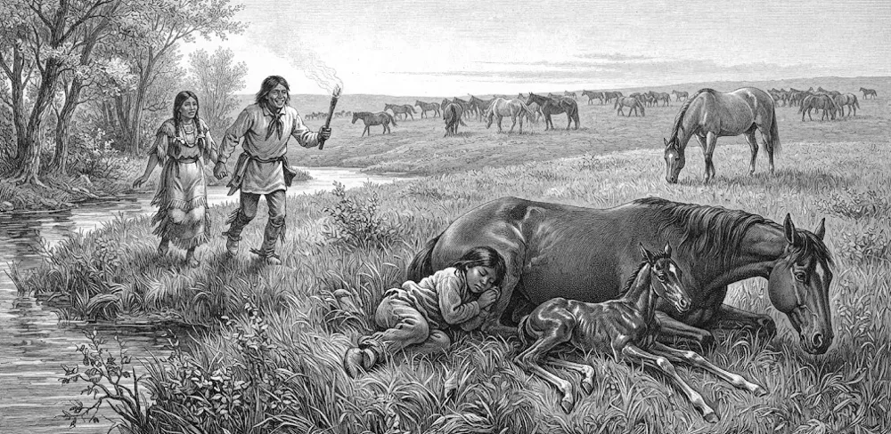
—Me pusieron el nombre por una tontería —dijo el viejo—. Como a todos.
Era la mañana de un sábado y no había entrevistas. Le había llevado a Indiahoma a comprar tabaco y café, y a la vuelta me pidió que parara junto a un arroyo seco, en un sitio donde había unos álamos y un poco de sombra, y que le dejara sentarse en una piedra. Quería mirar. No sé qué. El arroyo estaba seco, con el fondo de arena blanca agrietada, y en las orillas había latas oxidadas, una rueda de carro rota y el esqueleto de una vaca.
—Aquí acampábamos —dijo—. Cuando yo era niño. Aquí había agua. Mucha. Y peces. Y uvas silvestres en los álamos.
Miró el esqueleto de la vaca.
—Y luego te cuento lo del nombre.
—Yo tenía cinco o seis años —dijo—. Y mi trabajo era contar los caballos.
»Todos los niños cuidaban los caballos. Era lo primero que hacías. Antes de cazar, antes de ir a la guerra, antes de nada. Te daban un potro viejo, manso, y te mandaban con los otros niños a la manada. Por la mañana, al amanecer, sacabas los caballos de junto a las tiendas, donde dormían los mejores atados, y los llevabas al pasto, lejos, donde hubiera hierba buena. Y te quedabas allí todo el día con ellos. Vigilando que no se fueran, que no se los robaran, que no se los comieran los lobos. Curándoles las mataduras con grasa. Quitándoles las garrapatas. Y por la tarde los traías.
»Y yo, cada vez que los traía, los contaba. Uno, dos, tres. Todos. Los de mi padre, los de mi abuela, los de mi madre, los de mi hermana. Y si faltaba uno, me volvía al pasto a buscarlo, aunque fuera de noche, aunque tuviera miedo. Y hasta que no lo encontraba no volvía.
»Y una noche no volví. Me quedé en el pasto, solo, buscando una yegua que se había ido, una que estaba preñada. Y mis padres me buscaron toda la noche con antorchas, gritando. Y por la mañana me encontraron dormido en la hierba, al lado de la yegua, que había parido un potro.
»Y mi padre, en vez de pegarme, se echó a reír, y dijo: este niño quiere muchos caballos. Muchos Caballos. Y se quedó.
Se quedó mirando el arroyo seco.
—Ahora tengo uno —dijo.
Me contó su infancia. Toda. Muchas tardes. No la cuento entera porque sería otro libro. Cuento lo que me quedó.
Que dormía en la tienda de su madre, en una cama de pieles de búfalo, con su hermana, con un perro, con su abuela la del San Antonio en la cama de enfrente, roncando. Que el fuego estaba en el centro, en un hoyo, y que por el agujero de arriba se veían las estrellas. Que por las mañanas su madre le echaba al río, al agua helada, aunque fuera invierno, para que se hiciera fuerte, y que él lloraba, y que su madre le cantaba en español mientras le secaba con una piel.
Que comían carne. Carne de búfalo, sobre todo. Asada en palos, cocida en una olla de hierro, seca en tiras, machacada con grasa y con nueces y con ciruelas silvestres. Y lengua, que era lo mejor. Y hígado crudo, recién sacado, con la hiel del búfalo por encima, que su madre no comía nunca porque decía que era cosa de salvajes, y que él se comía a escondidas con su padre, riéndose los dos.
Que en verano iban por el norte, hacia el río Arkansas, cazando. Y en invierno bajaban al sur, a los cañones del río Rojo, donde había leña y agua y no hacía tanto viento. Que movían el campamento cada pocos días, siguiendo a los búfalos o buscando pasto para los caballos. Que las mujeres desmontaban las tiendas en un momento, y las ataban a los caballos, con los palos arrastrando detrás, y que los niños pequeños iban sentados encima de los palos, en una red, como en una cuna, saltando con el camino.
Que había juegos. Carreras de caballos, siempre. Tirar flechas a un aro que rodaba. Esconder un hueso en una mano y adivinar en cuál, con apuestas, toda la noche, con cantos. Bajar resbalando por la nieve en una piel de búfalo. Nadar. Hacer guerras de barro.
—Era bueno —dijo—. Ser niño entonces era bueno.
—¿Y la yegua gris? —le pregunté.
—Estaba. Siempre estaba. —Señaló con la barbilla hacia el oeste, hacia donde estaba su casa, su corral—. La madre de la madre de la madre de esa. O más. No sé cuántas. Una yegua gris con estrella, en la manada de mi padre, que nadie montaba, que tenía un potro cada dos años, y que mi padre cuidaba más que a ninguna. Cuando yo contaba los caballos por la tarde, a esa la contaba la primera.
»Mi padre me dijo un día, cuando yo tendría ocho años, de dónde venía. Me contó lo del viejo del barranco, lo de mi bisabuelo, lo de Atrisco, lo del potro. Y me dijo: cuando yo me muera, esa yegua, o su hija, será tuya. Y tú no la mates en mi tumba. Ni la vendas. Ni la cambies. Y cuando no haga falta, la sueltas.
—¿Cuándo no haga falta?
—Eso le pregunté yo. —Se rio—. Y me dijo: ya lo sabrás.
Mientras me lo contaba, yo pensaba en mi infancia. No sé si para compararla. Porque se parecía, aunque no se pareciera en nada.
Yo también tuve un trabajo de niño, a los seis años: llevar las cabras del abuelo al llano de arriba por la mañana y traerlas por la tarde. Eran ocho. Las contaba también, cada tarde, al meterlas en el corral, y si faltaba una me volvía a buscarla con el perro, llorando de miedo, porque en el llano decían que había brujas. También me bañaban en la acequia, en verano, mi madre y mis tías, con jabón de lejía, y me echaba a llorar. También jugaba a las guerras, con mis primos, en el bosque de la orilla: los de Atrisco contra los de Pajarito, con hondas y piedras, y una vez le abrí la cabeza a uno y mi padre me dio con el cinto hasta que no pude sentarme.
Y también, como él, sabía que aquello se acababa. Lo sabía sin saberlo. Veía cómo el abuelo vendía las cabras, una a una, porque ya no había llano donde llevarlas: lo habían cercado unos americanos que hacían una granja de vacas. Veía cómo los primos mayores se iban a trabajar al ferrocarril, a Gallup, a Winslow, y volvían por Navidad con zapatos nuevos y hablando inglés. Veía cómo Albuquerque, al otro lado del río, crecía cada año, con casas de ladrillo y calles asfaltadas y luz eléctrica, y nosotros seguíamos con los candiles y las acequias.
—Mi abuelo decía que los de Atrisco éramos como los indios —le dije al viejo—. Que nos estábamos quedando sin sitio.
El viejo me miró.
—Tu abuelo era listo —dijo—. Pero vosotros os quedasteis. En vuestras casas. Con vuestros muertos en el camposanto. Eso es mucho.
Tenía razón. Me callé.
Me contó cómo se fue acabando. No de golpe. Poco a poco. Sin que nadie se diera cuenta del todo.
Que los blancos ya estaban por todas partes. Que en Texas había ranchos donde antes había búfalos, y vacas donde antes había búfalos, y cercas. Que los soldados volvieron cuando terminó su guerra grande, la de los del norte contra los del sur, y volvieron a hacer fuertes. Que había ferrocarril en el norte, en Kansas, una línea de hierro que cruzaba la llanura de este a oeste, con un carro de fuego que echaba humo y gritaba, y que partía las manadas de búfalos en dos.
Que un otoño, cuando él tenía cinco años, fueron todos a un sitio en Kansas, junto a un río que se llamaba Medicine Lodge, a hacer un tratado con los blancos. Miles. Comanches, kiowas, cheyennes, arapahos. Que había tantas tiendas que no se acababan. Que los blancos trajeron carros y carros de regalos: mantas, ropa, ollas, cuchillos, harina, azúcar, café, cuentas, espejos, sombreros con plumas, uniformes viejos de soldado. Y que su padre volvió con un uniforme azul con botones de latón que se puso para las fiestas toda su vida.
—¿Y qué decía el tratado?
—Que nos íbamos a vivir a una reserva. Aquí. —Señaló alrededor, la tierra roja, las montañas Wichita—. Entre los ríos. Que nos darían casas, y escuelas, y comida, y vacas, y arados. Y que podíamos seguir cazando búfalos al sur del río Arkansas mientras hubiera búfalos.
Se quedó callado.
—Mientras hubiera búfalos —repitió—. Eso decía el papel. Mi padre lo oyó traducir. Y dijo que estaba bien, porque búfalos iba a haber siempre.
—Vinimos a la reserva —dijo—. Algunos. Otros no. Los Kwahadi, los antílopes, los del Llano, no vinieron nunca. Se quedaron allí arriba, en el Llano Estacado, en los cañones, libres. Mi padre vino porque mi abuela estaba vieja y porque daban comida. Y porque estaba cansado.
»Hicieron un fuerte. Fort Sill. Ahí, junto a las montañas. De piedra. Y una agencia, con un agente, que era un hombre de los que se visten de gris y no beben ni pelean ni dicen palabrotas. Un cuáquero. Bueno. Nos quería mucho. Nos quería convertir en otra cosa.
»Cada dos semanas daban raciones. Te ponías en fila delante de la agencia, con un papel, y te daban harina, que no sabíamos hacer, y que las mujeres usaban para pintar la cara de blanco en las fiestas, hasta que aprendieron a hacer pan. Y café, y azúcar, y tabaco, y jabón. Y carne. Vacas vivas. Las soltaban de un corral, una a una, y los hombres salían detrás a caballo, gritando, y las mataban a flechazos, como búfalos, delante de los blancos, que venían a verlo como quien va a ver un circo.
»Los niños jugábamos a eso. A cazar vacas. A mí me gustaba. Era como cazar, casi.
Se encogió de hombros.
—Pero no era cazar. Ya lo sabía. A los ocho años ya lo sabía.
—¿Y la yegua? —le pregunté otra vez.
—En la reserva había poca hierba —dijo—. Muchos caballos, mucha gente, poca hierba. Y los blancos de Texas venían de noche y nos robaban los caballos. Como hacíamos nosotros antes. Al revés.
Se rio, sin ganas.
—Una noche entraron en nuestra manada y se llevaron veinte. Mi padre salió detrás. No los alcanzó. Cuando volvió, por la mañana, fue derecho a contar los caballos que quedaban. Yo ya los había contado.
»Estaba la gris.
»Mi padre me miró. Y yo le dije que la había escondido. Que la noche antes, sin saber por qué, me había dado miedo, y la había llevado sola a un barranco, lejos de la manada, y la había atado a un árbol.
»Mi padre no dijo nada. Me puso la mano en la cabeza.
»Fue la única vez que me la puso.
Después de eso se quedó un rato callado en la piedra, mirando el arroyo seco.
Yo no dije nada. Había aprendido ya que el viejo hablaba a trozos, como se bebe en el desierto, un sorbo y luego nada, y que si le metías prisa se callaba del todo. Así que me senté en la arena, a la sombra de un álamo medio muerto, y esperé.
Al rato señaló un sitio en la orilla. Una piedra plana, grande, gris, medio enterrada en la arena, al borde del cauce.
—Ahí lavaba mi madre —dijo—. En esa piedra. Los cueros, la ropa, a nosotros. Cantaba mientras lavaba, la de la paloma. Y mi hermana y yo nos bañábamos más abajo, donde había un remanso, con los otros niños, y nos tirábamos desde la orilla, y ella nos gritaba en español que nos íbamos a ahogar. Y nosotros nos reíamos de ella, porque en comanche no había quien se ahogara en un sitio tan pequeño.
Se levantó, despacio. Bajó al cauce, pisando con cuidado entre las piedras. Fue hasta la piedra plana y se agachó, como se agachan los viejos, por partes. Le puso la mano encima. Estaba caliente del sol.
Se quedó así mucho rato.
Luego cogió algo del suelo, junto a la piedra. Me lo enseñó cuando volvió. Era una cuenta de cristal, azul, pequeña, sucia, con un agujero en medio.
—De las de los comancheros —dijo—. Habrá estado aquí sesenta años.
No dijo si creía que era de su madre. No lo dijo. Se la guardó en el bolsillo del chaleco.
Volvimos a la casa cuando el sol ya apretaba. En el coche, el viejo no habló. Miraba por la ventanilla los campos de algodón, secos, quemados.
Al llegar, antes de bajarse, me dijo:
—Mañana es domingo. No hay profesores. ¿Me llevarías a un sitio?
—¿Adónde?
—Lejos —dijo—. Al Llano. A los cañones. Antes de morirme quiero verlos otra vez.
Le dije que el coche no era mío. Que era de los profesores.
—Pídeselo —dijo.
Y se bajó.
Preguntas sobre caballos
Walters e Indiahoma · finales de julio de 1933
Ramón
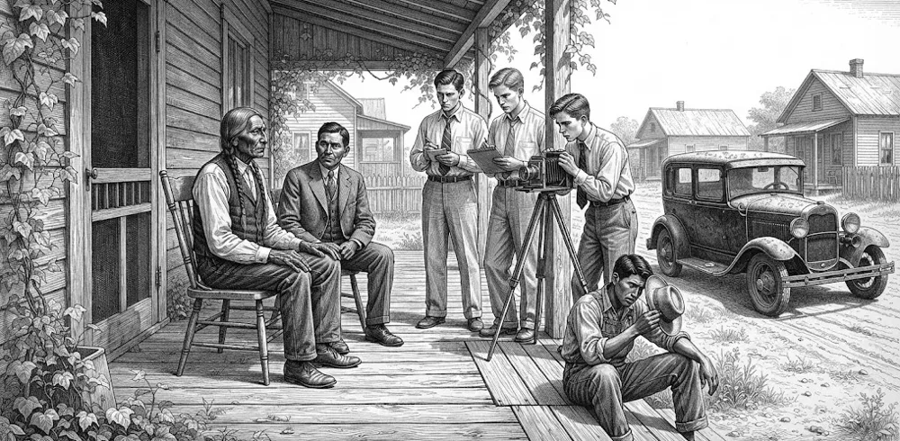
El profesor dijo que no.
Se lo pedí el domingo por la noche, en el vestíbulo del hotel Midland, de pie, con el sombrero en la mano, mientras él leía el periódico en un sillón de cuero con la pipa en la boca. Le expliqué que el viejo quería ver los cañones del Llano Estacado, en Texas, donde había vivido de niño. Que serían doscientas millas de ida y doscientas de vuelta. Que se podía hacer en un día largo, saliendo de madrugada. Que yo pagaría la gasolina.
El profesor bajó el periódico y me miró por encima de las gafas.
—El coche es del Laboratorio —dijo—. Si le pasa algo, a usted o al coche o al viejo, en Texas, a doscientas millas, el responsable soy yo. Y además lo necesitamos aquí. Nos quedan tres semanas de trabajo y diez informantes por ver.
Era razonable. Todo lo que decía aquel hombre era razonable.
—Cuando terminemos —dijo, volviendo al periódico—, a finales de agosto, antes de volver a Santa Fe, si quiere usted llevarlo, llévelo. Le daré un día.
Le di las gracias.
—Una cosa —dijo, sin levantar la vista—. Hoebel me dice que el viejo le cuenta a usted cosas por las tardes. Cosas que no nos cuenta a nosotros.
Me quedé quieto.
—Si son cosas de interés etnográfico —dijo—, le agradecería que las apuntara.
—Son cosas de su familia —dije.
El profesor me miró un momento más. Luego asintió, y pasó la página del periódico.
No apunté nada. Todo lo que cuento aquí lo cuento de memoria, de viejo, cincuenta años después. Si me equivoco en algo, es culpa mía.
Aquella semana los profesores le preguntaron al viejo por los caballos.
Estaba en su lista. Lo tenían todo en listas: el parentesco, la guerra, la religión, la medicina, el matrimonio, la comida. Y aquella semana tocaba el caballo. Así que se sentó en la silla de cocina del porche de Walters, con las manos en las rodillas, y los estudiantes le preguntaron.
Yo estaba sentado en el escalón, abanicándome con el sombrero. Entendía algo del inglés de los estudiantes y algo, cada vez más, del comanche del viejo, que se parecía en algunas palabras, me di cuenta, a las de los indios yutas que bajaban a veces a Albuquerque. Y lo que no entendía me lo contaba él luego, por la tarde.
Le preguntaron cuántos caballos tenía un hombre rico. Dijo que cientos. Que su abuelo había conocido a un hombre que tenía mil quinientos. Que un hombre pobre tenía diez o veinte.
Le preguntaron si castraban los caballos. Dijo que sí. Que se hacía de jóvenes, a los dos años, para que fueran mansos. Que se dejaban sin castrar los mejores, para que tuvieran potros. Lo explicó con las manos, con mucho detalle. Los estudiantes se pusieron colorados. El viejo se rio de ellos.
Le preguntaron qué colores preferían. Dijo que los pintos, para la guerra, porque se veían bonitos. Que los bayos, para la caza, porque aguantaban. Que los negros, para los jefes. Que los blancos y los grises se veían de lejos en la llanura y no eran buenos para robar caballos de noche. Que por eso casi nadie los quería.
Le preguntaron si marcaban los caballos. Dijo que sí. Que cortaban las orejas de una manera, cada familia la suya, o la cola, o los pintaban. Que algunos marcaban a fuego, como los mexicanos.
Le preguntaron si los caballos tenían nombre. Dijo que algunos. Los mejores. Que se llamaban por el color, o por algo que habían hecho, o por cómo corrían.
Le preguntaron si se mataba el caballo del muerto. Dijo que sí.
Le preguntaron si había caballos que no se podían matar.
El viejo se quedó callado.
El intérprete repitió la pregunta.
El viejo miró al estudiante un rato largo. Después me miró a mí, en el escalón. Y luego dijo algo en comanche, corto.
El intérprete tradujo:
—Dice que no.
El estudiante lo apuntó y pasó a la siguiente pregunta.
Por la tarde, en el coche, le pregunté por qué había dicho que no.
—Porque es verdad —dijo—. No hay caballos que no se puedan matar. Hay caballos que no se deben matar. No es lo mismo.
Se quedó mirando por la ventanilla.
—Y porque no es cosa suya —dijo.
Aquel jueves, por la noche, Hoebel me esperó a la puerta de la pensión.
Era el más joven de los estudiantes. Alto, delgado, con la cara de niño, el pelo muy rubio y unas gafas redondas. Era el que le llevaba las preguntas sobre la ley y los delitos, sobre qué pasaba si uno mataba a otro o le robaba la mujer. Me trataba mejor que los demás. Me había prestado un libro de mecánica en inglés, mejor que el mío, y me preguntaba por Atrisco como si de verdad le interesara.
Me invitó a un refresco en un sitio de la calle de la estación. Nos sentamos en la barra, en unos taburetes altos, con dos botellas de zarzaparrilla, y estuvimos hablando un rato de nada. Del calor. Del polvo. De una película.
Y luego me dijo que el profesor le había hablado de lo que me había dicho. De las cosas de familia.
—No quiero que me cuentes nada —dijo—. De verdad. Solo quería decirte que lo entiendo.
No le creí del todo. Pero él siguió.
—A veces pienso que esto que hacemos está mal —dijo—. Venimos aquí seis semanas, les pagamos un dólar, les preguntamos cosas que no le preguntaríamos a nuestra abuela, y nos vamos. Y lo que nos cuentan lo convertimos en fichas. Matrimonio, ficha. Guerra, ficha. Muerte, ficha. Y con las fichas, en la universidad, alguien escribe un libro que no van a leer nunca. —Bebió—. Pero si no lo hacemos, cuando se mueran estos viejos no va a quedar nada. Nada. Sus nietos no lo saben. Ya no lo quieren saber.
Me miró.
—Tú no le preguntas nada, ¿verdad? —dijo—. Te lo cuenta él.
—Sí.
—Eso es distinto —dijo. Y se quedó pensando—. Eso es lo que nosotros no sabemos hacer.
Pagó él. Nos despedimos en la puerta. Antes de irse me dijo que cuidara del viejo. Que a lo mejor lo que yo estaba haciendo, aunque no lo apuntara, valía más que todos sus cuadernos.
No supe qué contestarle. Me fui a dormir con la zarzaparrilla dándome vueltas en el estómago y aquella frase en la cabeza.
La nieta se llamaba Ruth. En los papeles de la escuela de la misión. En comanche tenía otro nombre, que me dijo una tarde, riéndose, y que no me atrevo a escribir porque seguro que lo escribiría mal. Quería decir algo así como Pájaro Que Mira Desde Arriba, porque de pequeña se subía a todos los árboles.
Tenía quince años. Quería ser maestra. Leía todo lo que caía en sus manos: los libros de la misión, los periódicos viejos que traía su padre de Lawton envolviendo cosas, las etiquetas de las latas. Me pidió que le enseñara español. Le enseñé un poco, por las tardes, mientras su abuelo dormía la siesta. Ella me enseñaba comanche. Nos reíamos mucho de cómo pronunciábamos.
—Mi abuelo no quiere que hable comanche delante de los blancos —me dijo un día—. Dice que se ríen.
—Yo no me río.
—Tú no eres blanco —dijo ella.
Me quedé pensando.
—¿Y qué soy?
Se encogió de hombros. El gesto de la familia.
—Eres de Atrisco —dijo.
Una tarde, al llegar, me encontré a Ruth leyéndole a su abuelo en el porche. En inglés. Un libro de la biblioteca de la misión, con tapas rojas, gastadas. Era una historia de la conquista del Oeste, de las que se escribían entonces, con grabados de indios a caballo con plumas y soldados con sables. Ruth leía despacio, pronunciando bien, y el viejo escuchaba con los ojos cerrados.
Leía la parte de Palo Duro. Cómo el valiente coronel Mackenzie había sorprendido al amanecer a los salvajes en su escondite del cañón, y los había derrotado, y había capturado sus caballos, y cómo, sabiamente, para que no pudieran volver a la guerra, había mandado matar más de mil.
El viejo abrió los ojos.
—Para —dijo, en comanche.
Ruth paró.
El viejo se quedó mirando el corral. La yegua estaba de pie, a la sombra, con la cabeza baja.
—¿Lo pone ahí? —preguntó, en inglés, a su nieta. Era la primera vez que le oía hablar inglés—. ¿Los caballos?
—Sí, abuelo.
—¿Cuántos?
—Mil cuarenta y ocho.
El viejo asintió.
—Los contaron —dijo, en español, a mí—. Los blancos lo cuentan todo. Los caballos que matan también.
Y cerró los ojos otra vez.
Ruth me miró. Cerró el libro.
Más tarde, cuando el viejo se fue a la tienda, Ruth vino a sentarse a mi lado en el escalón.
Traía el libro de tapas rojas en las manos. Lo tenía cerrado, con el dedo metido en la página.
—¿Tú sabías eso? —me preguntó—. Lo de los caballos.
—No.
—Yo tampoco. —Abrió el libro y miró el grabado. Un soldado a caballo, con el sable en alto, y detrás, en el fondo del cañón, unos indios corriendo y unas tiendas ardiendo—. En la escuela nos lo leyeron el año pasado. La maestra dijo que fue una victoria importante, que trajo la paz. Que gracias a eso los comanches dejaron de ser salvajes. Yo estaba en primera fila. Y aplaudí.
Se quedó callada.
—Aplaudí —repitió—. Como todos.
Le dije que no lo sabía. Que no tenía la culpa.
—Mi abuelo estaba allí —dijo—. En Palo Duro. Era niño. Nunca me lo ha contado. Se lo he preguntado mil veces y siempre dice que otro día. —Me miró—. ¿A ti te lo ha contado?
—Todavía no.
—Te lo contará a ti —dijo. No lo dijo con envidia. Lo dijo con algo que no supe qué era—. A ti te lo cuenta todo.
—Porque yo no soy de aquí. A los de fuera se les cuentan las cosas. Es más fácil.
Lo pensó.
—Cuando te lo cuente —dijo—, ¿me lo contarás tú a mí?
Le dije que sí.
Asintió. Se levantó. Dejó el libro de tapas rojas en el escalón, a mi lado, y se fue a la casa. Al día siguiente me enteré de que lo había devuelto a la biblioteca de la misión sin terminarlo.
Aquella noche el viejo tosió mucho.
Me quedé a cenar y luego un rato, como casi todas las noches ya, junto al fuego. Y le oí toser dentro de la tienda, cuando se fue a acostar. Una tos seca, larga, que no paraba, que le doblaba. Su nuera entró con un cazo de algo caliente. Salió al rato. Me miró.
—Lleva así desde la primavera —me dijo, en inglés. Era la primera vez que me hablaba—. Se cansa. No come. El médico de la agencia dice que es el corazón, que está viejo. Que no hay nada que hacer.
—¿Lo sabe él?
Ella se encogió de hombros.
—Él lo sabe todo —dijo.
Y se volvió al porche, a su farol y a su costura.
Me fui a Lawton conduciendo despacio, con las ventanillas abiertas, con el viento caliente y el polvo entrando en el coche. Y pensé en el día que me había dado el profesor. A finales de agosto. Tres semanas.
Pensé que a lo mejor era demasiado tarde.
Los desolladores
El Llano Estacado y el río Canadiano · 1873-1874 · lo que contó Muchos Caballos
Ramón
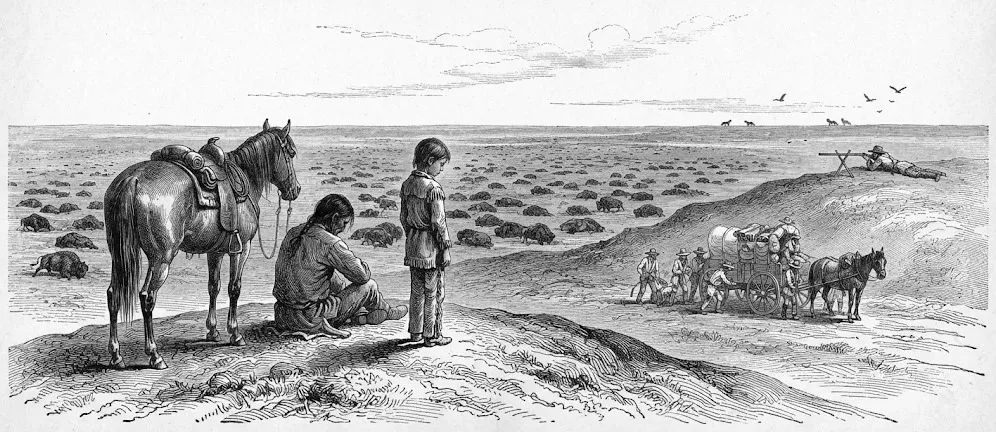
—El primer búfalo desollado lo vi con once años —dijo el viejo—. Pensé que era una persona.
Estábamos en el porche, de noche, sin fuego, porque hacía demasiado calor para fuego. Había luna. Se veía el corral, blanco, y la yegua, blanca también, quieta, como una estatua de yeso. Se oían los grillos y, lejos, un perro.
—Estábamos al norte, en el río Canadiano, cazando, con mi padre y otros. Era primavera. Habíamos salido de la reserva con permiso, para cazar, como decía el papel. Y llegamos a una loma, y abajo había un búfalo. Tumbado. Rojo. Brillante. Y yo pensé que era un hombre. Porque estaba sin piel, y un búfalo sin piel se parece a un hombre grande, a un hombre gordo, tumbado de lado, con las patas dobladas. Rojo y blanco. Con las moscas.
»Y luego miré más lejos y había otro. Y otro. Y otro. Toda la llanura, hasta donde se veía. Cientos. Rojos. Sin piel. Tirados en la hierba. Y el olor.
Se calló.
—Mi padre se bajó del caballo y se sentó en el suelo —dijo—. Y no dijo nada en mucho rato.
—Aquella noche, en el campamento, las mujeres lloraron —siguió el viejo—. Como se llora por un muerto. Con los gritos largos, de arriba abajo, que se oyen de lejos. Mi madre también. Ella, que era mexicana, que había llegado con nueve años, lloró como las comanches, cortándose el pelo con el cuchillo. No por una persona. Por los búfalos.
»Yo no entendía. Le pregunté por qué lloraba, si no se había muerto nadie. Y ella me dijo, en español, sin dejar de cortarse el pelo: «Se ha muerto todo, hijo. Todavía no lo sabes. Pero se ha muerto todo».
»Mi abuela, la del San Antonio, no lloró. Se quedó sentada a la puerta de la tienda toda la noche, envuelta en su manta, mirando hacia el norte, de donde venía el olor. Por la mañana fue a la tienda de un viejo que sabía cantar las cosas antiguas, y le pidió que cantara la canción de cuando el búfalo salió de debajo de la tierra. La que cuenta cómo los búfalos estaban encerrados en una cueva, al principio de todo, y cómo un muchacho los soltó para que la gente pudiera comer. Y el viejo la cantó. Delante de su tienda. Y fue llegando gente, y se sentaron a escuchar, sin decir nada.
»Mi abuela dijo después que a lo mejor los búfalos se habían vuelto a meter debajo de la tierra. Que se habían ido a la cueva, a esconderse de los blancos. Y que un día, cuando los blancos se fueran, saldrían otra vez.
Se calló.
—Muchos lo creían —dijo—. Algunos todavía lo creen. Mi hijo no. Yo no sé.
Me contó lo que supo después. Lo que supimos todos después.
Que en el este, en las ciudades de los blancos, habían aprendido a curtir la piel del búfalo de una manera nueva, en fábricas, con máquinas, para hacer correas de cuero para las máquinas de las fábricas. Y que pagaban por cada piel tres dólares, o dos, o uno, según el año. Y que miles de hombres blancos habían bajado a la llanura con rifles largos, pesados, que mataban un búfalo desde media legua sin que los otros se espantaran, porque no oían de dónde venía el tiro. Y con carros. Y con desolladores.
—Los desolladores eran lo peor —dijo el viejo—. Los cazadores eran pocos. Uno, dos, por partida. Se ponían tumbados en una loma, con el rifle apoyado en dos palos, y disparaban. Uno, otro, otro. Todo el día. A veces cien en un día. Los búfalos no se iban. Se quedaban mirando al que se caía, olisqueándolo, sin entender. Como los snakes con los fusiles, en tiempos de los abuelos del norte. Y el cazador seguía disparando.
»Y luego venían los desolladores. Muchos. Diez, veinte. Pobres. Blancos pobres, de los que no tenían tierra ni nada. Y mexicanos, algunos. Y algún negro. Con cuchillos. Y les cortaban la piel por la barriga y por las patas, y se la arrancaban tirando con un caballo atado a la piel, o con las manos, y la echaban al carro. Y dejaban el resto.
»Todo el resto. La carne. La lengua, a veces se llevaban la lengua, salada, en barriles. Pero lo demás no. La carne, los huesos, el tuétano, los sesos, los tendones, el estómago, la grasa. Todo lo que nosotros usábamos. Todo, ahí, pudriéndose al sol. Para los lobos y los buitres.
»Y el olor llegaba a una legua. Más. Cuando el viento venía del norte, aquella primavera, todo el campamento olía a muerto.
—Les vi trabajar una vez —dijo—. A los desolladores. De cerca.
»Me escapé del campamento, con otro muchacho, para verlos. Nos escondimos en un barranco, detrás de unas matas, y los miramos toda una tarde.
»Eran unos quince. Estaban en un sitio donde el cazador había matado muchos, cincuenta o sesenta, en un trozo de llanura no más grande que esto. —Abrió los brazos, abarcando el corral, la casa, el álamo—. Y los desolladores iban de uno en uno. Llenos de sangre hasta los codos, hasta el pecho, hasta la cara. Con el pelo pegado de sangre. Con las moscas encima, nubes de moscas. Trabajando deprisa, sin hablar casi. Uno cantaba. Una canción triste, en inglés. Otro, un mexicano, se reía de algo.
»Y yo los miraba y pensaba: estos no son guerreros. No son soldados. No son cazadores. Son pobres. Como los comancheros. Como los mexicanos de los ranchos. Están haciendo esto para comer. Para ganar uno o dos dólares por piel. Y para eso están acabando con todo.
»Y me dieron pena. Y me dieron asco. Las dos cosas a la vez.
Se quedó callado.
—Cuando fui mayor, trabajé con algunos de ellos —dijo—. De vaquero, en los ranchos. Y eran buena gente. Algunos. Eso es lo más difícil de entender.
—Los búfalos se acabaron en cuatro años —dijo—. Cuatro. En el norte primero, en Kansas, donde pasaba el tren, que se las llevaba. Luego más al sur, en nuestras tierras. Cada año había menos. Cada año había que ir más lejos para encontrarlos. Y cada año, en la reserva, las raciones eran peores. La harina con gusanos. Las vacas flacas. El café aguado. Y nos decían que fuéramos a cazar, que para eso teníamos permiso, que el papel de Medicine Lodge decía que podíamos cazar mientras hubiera búfalos.
Se rio, con una risa corta, sin dientes.
—Y no había.
En la primavera de 1874, su padre se fue de la reserva. Con su familia, con sus caballos, con otras familias. Al oeste. Al Llano. A los cañones.
—No fue el único —dijo el viejo—. Se fueron muchos. Comanches, kiowas, cheyennes. Los jóvenes, los que estaban hartos. Algunos fueron a pelear. A matar cazadores de búfalos. Había un sitio, en el norte, en el río Canadiano, un fuerte de adobe que habían hecho los cazadores, donde guardaban las pieles y vendían whisky y balas. Y fueron a atacarlo. Cientos. Con un hombre que decía que tenía una medicina, que le había dicho el Gran Espíritu que las balas de los blancos no les harían daño. Que había vomitado cartuchos delante de todos.
—¿Su padre fue?
—Fue. —Asintió—. Y volvió. Muchos no volvieron. Las balas de los blancos sí hacían daño. Los cazadores de búfalos estaban dentro de las casas de adobe, con sus rifles largos, y mataban a los caballos desde media legua, y a los hombres. Mi padre volvió con una herida en el brazo y sin el caballo, que era un pinto que quería mucho. Y no habló de eso nunca. Nunca. Ni de viejo.
»El de la medicina dijo que había fallado porque un cheyenne había matado una mofeta el día antes. Que eso había roto la medicina. —El viejo movió la cabeza—. Siempre hay una mofeta.
—Y nos fuimos a los cañones —dijo—. Al Llano. Al sitio donde nos íbamos siempre en invierno. Al cañón grande. El que los mexicanos llamaban Palo Duro.
Lo dijo así, en español, con cuidado: Palo Duro.
—¿Lo conoces?
Le dije que no. Que había pasado por Amarillo, que estaba cerca, en el camino de venida, pero que no lo había visto.
—Es un cañón en el Llano —dijo—. Vas por la llanura, todo llano, todo hierba, sin nada, días y días, y de pronto se abre la tierra debajo de tus pies. Así. —Juntó las manos y las separó—. Una grieta enorme, roja, profunda, con paredes de colores, rojas, amarillas, blancas, moradas, a rayas, como una manta navajo. Y abajo, muy abajo, un río, y álamos, y cedros, y hierba verde, y agua. Y no hay viento. En la llanura de arriba sopla el viento del norte y se te hiela la cara, y abajo, en el cañón, no se mueve una hoja.
»Allí pasábamos el invierno desde siempre. Desde mi bisabuelo. Desde antes. Los comanches, los kiowas, los cheyennes, cada uno en su sitio, río arriba, río abajo. Cientos de tiendas. Miles de caballos. Allí no llegaba nadie. Los soldados no sabían dónde estaba. Los comancheros sí, pero eran amigos.
Se quedó callado.
—Allí estábamos a salvo —dijo.
Me miró en la oscuridad. Los ojos le brillaban a la luz de la luna.
—Eso creíamos.
Le conté entonces lo que contaba mi abuela de su tío, un hermano de su madre que se llamaba Pablo y que había sido cibolero.
Que subía al Llano todos los otoños, de joven, con los de Atrisco y los de Pajarito y los de Manzano, en una partida grande, con carretas, con lanzas, con caballos buenos. Que cazaban como los comanches, a caballo, al galope, metiéndose en la manada y clavando la lanza detrás de la última costilla. Que había que tener un caballo valiente y un brazo fuerte y no tener miedo. Que volvían en diciembre con las carretas llenas de carne seca, en tiras, y de sebo, y de pieles, para todo el invierno, y que en Atrisco se hacía fiesta.
Y que el último año que subió, en el setenta y cinco o el setenta y seis, no encontraron búfalos.
Anduvieron semanas. Más al este que nunca. Y lo que encontraron fueron huesos. Llanuras enteras de huesos blancos. Y esqueletos con trozos de carne seca pegados. Y cazadores americanos, con sus rifles largos, que les dijeron que se volvieran a su casa, que ahí ya no había nada para los mexicanos. Y se volvieron, con las carretas vacías.
Mi abuela decía que su tío Pablo no volvió a subir. Que vendió su lanza a un americano que coleccionaba cosas antiguas. Que se puso a trabajar en el campo de otros. Y que cuando bebía, los sábados, en la cantina, contaba que había visto la llanura llena de búfalos, negra de búfalos, de un lado a otro, hasta el horizonte, y que nadie le creía. Que los jóvenes se reían de él. Que le decían que eran cuentos.
El viejo me escuchó asintiendo.
—A mí también me lo dicen —dijo—. Que son cuentos. Los muchachos de la escuela de mi nieta. Que no pudo haber tantos.
—¿Cuántos había?
El viejo lo pensó.
—Más que estrellas —dijo—. Y yo los vi. Eso no me lo puede quitar nadie. Los vi.
Antes de irme, aquella noche, me pidió que le ayudara a levantarse y le llevara hasta el corral.
Fuimos despacio. Se apoyaba en mi brazo. Pesaba muy poco, como un niño. En la cerca, se soltó y se agarró a los palos.
La yegua vino. Le olió la mano, la cara, el pelo. Le sopló.
El viejo le dijo algo en comanche. Largo. Bajito. Como se le habla a una persona.
Luego me miró.
—Le estaba contando lo de los cañones —dijo—. Ella no estuvo. Pero su abuela sí. O su bisabuela. O la madre de su bisabuela. No sé ya. Una de ellas estaba allí. En Palo Duro. La noche antes.
—¿Qué noche?
El viejo se quedó mirando a la yegua.
—Mañana te lo cuento —dijo—. Hoy estoy cansado.
La noche de los caballos
Cañón de Palo Duro y cañón de Tule · 28 de septiembre de 1874 · lo que contó Muchos Caballos
Ramón
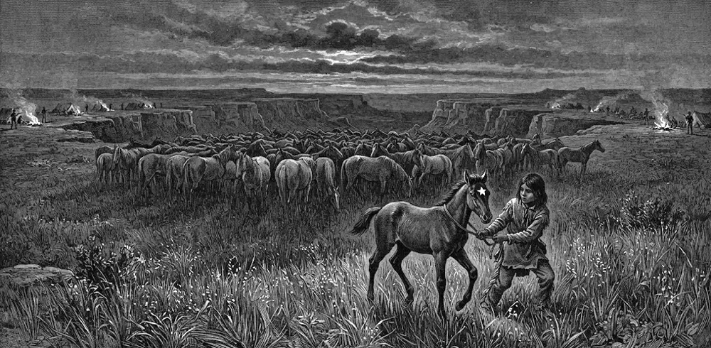
Aquel día no fui a Walters por la mañana. Le dije al profesor que el coche hacía un ruido raro y que tenía que mirarlo, y era verdad a medias. Lo miré una hora y luego me fui a casa del viejo, temprano, a las once, con el sol ya fuerte.
No estaba en su silla. Estaba dentro de la tienda, con la puerta abierta. Le vi desde fuera sentado en el suelo, en sus pieles, con una pipa larga, de piedra roja, que no le había visto nunca. La tenía cogida con las dos manos. Echaba el humo hacia arriba, hacia abajo, hacia los cuatro lados, despacio, cantando algo en voz muy baja.
No entré. Me quedé fuera, en el patio, con el sombrero en la mano, esperando.
Al rato salió la nuera. Me vio. No dijo nada. Echó al fuego de fuera unas ramas de cedro, verdes, que soltaron un humo blanco, espeso, que olía a iglesia. Y se volvió a meter en la casa.
Ruth estaba en el porche. Me miró y se llevó un dedo a los labios.
Esperé toda la mañana. No sé hacer otra cosa mejor que esperar; lo aprendí aquel verano.
Lo contó al día siguiente, por la tarde, sin que se lo pidiera. Se sentó en su silla, debajo del álamo, se puso la manta sobre las rodillas aunque hacía calor, miró hacia el corral, y empezó.
No le interrumpí ni una vez. Lo pongo como lo dijo.
Era el final del verano. Las noches ya eran frías en el cañón y los días todavía calientes. Habíamos cazado lo poco que había. Teníamos carne seca para el invierno, no mucha. Las mujeres habían recogido ciruelas y uvas y nueces. Estábamos en el fondo del cañón, río arriba, en un sitio con álamos grandes y una pared roja enfrente, alta como diez árboles. Había tiendas por todo el cañón, río arriba y río abajo, de los nuestros, de los kiowas, de los cheyennes. Muchas. No sé cuántas. Cientos. Y los caballos pastaban en el fondo, en la hierba de la orilla, miles, y los muchachos los cuidaban.
Yo tenía doce años. Ya no contaba caballos. Ya era mayor para eso. Ya tenía mi caballo, un bayo pequeño y nervioso, y mi arco, y había matado mi primer búfalo aquel verano, uno joven, flaco, de los pocos que quedaban. Mi padre me había dado una pluma.
Pero seguía yendo a ver la manada por las tardes. A ver a la gris.
Había dos. La vieja, la que mi padre cuidaba, la que yo había escondido en el barranco la noche de los ladrones tejanos. Y una hija suya, una potra de dos años, gris oscura todavía, casi negra por las patas, como son de jóvenes, con las manchas en las ancas y la estrella en la frente, que mi padre me había dicho que sería mía cuando él muriera.
Yo la quería mucho. Le había puesto nombre a escondidas. No te lo voy a decir. Era un nombre de niño.
Dos noches antes los soldados habían estado cerca. Arriba, en la llanura. Lo sabíamos. Los jóvenes habían ido a robarles los caballos, de noche, en un cañón más al sur, y no habían podido, porque los soldados tenían los caballos atados y vigilados. Habían disparado un rato y habían vuelto. Decían que los soldados eran muchos. Que llevaban con ellos a los tonkawas, que eran enemigos nuestros desde siempre, que comían gente, decían, y que sabían seguir un rastro por encima de la piedra.
Pero nadie creía que fueran a encontrar el cañón. Nadie había bajado nunca al cañón que no fuera de los nuestros. No había camino. Había que saber dónde. Y los soldados no sabían.
Dormimos tranquilos.
Me despertó un tiro.
Uno solo. Lejos, río abajo. Luego otro. Luego muchos.
Era todavía casi de noche. Gris. Hacía frío. Mi madre ya estaba de pie, en la tienda, con el cuchillo en la mano. Mi padre salía por la puerta con el rifle.
Salí detrás de él.
Por la pared del cañón, por la de enfrente, por un sitio donde había una senda de cabras, estrecha, que yo no sabía que existía, bajaban soldados. En fila. Uno detrás de otro. A pie, tirando de sus caballos por la brida. Muchos. Un río de soldados azules bajando por la pared roja, en la luz gris del amanecer, sin hacer ruido casi.
Y abajo, río abajo, donde estaban las primeras tiendas, las de los kiowas, ya estaban disparando.
Mi padre gritó. Le dijo a mi madre que cogiera a mi hermana y a la abuela y que subieran. Por la pared de detrás. Por las rocas. Arriba. Que no cogieran nada. Que subieran.
Y a mí me dijo: los caballos.
Corrí. Toda la gente corría. Los hombres hacia los caballos o hacia los soldados. Las mujeres hacia las paredes, con los niños, con los viejos, trepando por las rocas, por las grietas, por donde fuera, dejándolo todo. Los perros ladraban. Los niños pequeños lloraban. Las balas pegaban en las rocas, arriba, y saltaban trozos de piedra roja.
Llegué a la manada. Los caballos ya estaban nerviosos, corriendo, dando vueltas, relinchando, con los ojos blancos. Los muchachos que los cuidaban gritaban, intentaban llevarlos río arriba, lejos de los soldados. Algunos hombres llegaban corriendo, cogían un caballo, el que fuera, saltaban encima sin silla y se iban al galope a pelear o a sacar a su familia.
Busqué a las grises.
Encontré a la vieja. Estaba quieta, en mitad del remolino de caballos, con la cabeza alta, mirando hacia los tiros. La cogí de la crin y me la llevé hacia mi padre, que venía corriendo con el rifle. Se la di. Montó. Y se fue hacia la pared de detrás, donde subían mi madre y mi hermana, para protegerlas.
Volví a buscar a la joven. No la encontré.
Había demasiados caballos. Demasiado polvo. Demasiados gritos. Y entonces llegaron los soldados a la manada. A caballo, ya, por el fondo del cañón. Y empezaron a rodearla. A llevársela. Río abajo. Toda. A gritos, con los sombreros, disparando al aire.
Me escondí detrás de un álamo y los vi pasar. Miles de caballos. Los nuestros. Los de todos. Pintos, bayos, negros, castaños, alazanes, blancos. Corriendo río abajo, entre los soldados, entre el polvo.
Y en medio, la gris joven. La vi un momento. Con la estrella. Corriendo con los demás. Mirando hacia atrás.
Y luego ya no la vi.
Subí por la pared. No sé cómo. Me arañé entero. Me sangraban las manos y las rodillas. Arriba encontré a mi madre, a mi hermana, a mi abuela, tumbadas detrás de unas rocas, en el borde del cañón, con otras mujeres y niños. Y a mi padre, con la yegua vieja, que había subido por una senda más larga. Estaba vivo. Tenía la cara negra de pólvora.
Desde arriba lo vimos todo.
Los soldados quemaban las tiendas. Todas. Una por una. Las tiraban, las juntaban en montones, con todo lo de dentro, y les prendían fuego. Las pieles, las mantas, la ropa, la carne seca para el invierno, los sacos de nueces y de ciruelas, los arcos, las flechas, los escudos, las sillas, las ollas, las bolsas pintadas, las cunas de los niños. Todo. Subía un humo negro que se veía desde muy lejos y que olía a grasa quemada y a cuero.
Mi madre miraba el humo sin decir nada. Ahí estaba todo lo que tenía. Todo lo que había cosido y curtido y bordado en veinte años.
—Ya está —dijo, en español. Como tu Josefa. Ya está.
Por la tarde, los soldados se llevaron los caballos fuera del cañón. Por la senda por la que habían bajado, y por otras. A la llanura. Hacia el sur.
Los seguimos. De lejos. Mi padre, otros hombres, yo. A pie casi todos, porque no teníamos caballos. Mi padre en la yegua vieja.
Acamparon en la llanura, al borde de otro cañón más pequeño, el de Tule, a unas leguas. Con los caballos en el medio, todos juntos, una manada enorme, oscura, en la noche, y los soldados alrededor, con fuegos, vigilando. Y los tonkawas.
Los hombres hablaron de atacar para recuperarlos. No tenían con qué. Eran pocos, estaban cansados, sin caballos, sin flechas casi. Los soldados eran muchos y estaban despiertos. Al final se fueron, a buscar a sus familias, a pensar qué hacer.
Mi padre se quedó un rato más mirando los fuegos. Después se fue también.
Yo no.
No sé por qué lo hice. Tenía doce años. Era un niño. Los niños hacen cosas.
Esperé a que la luna se metiera detrás de unas nubes. Y bajé.
Me arrastré por la hierba, como me habían enseñado, como se robaban los caballos desde siempre. Despacio. Sin hacer ruido. Contra el viento, para que los caballos no me olieran y se pusieran nerviosos. Pasé entre dos fuegos, entre dos soldados que estaban sentados fumando, a cincuenta pasos de cada uno. Les oía hablar. Uno se reía.
Llegué a la manada.
Los caballos estaban de pie, quietos, cansados, apretados unos contra otros, con la cabeza baja. Olían a sudor y a miedo. Me metí entre ellos. Entre las patas, por debajo de los vientres, a cuatro patas. Buscando.
Tardé mucho. No sé cuánto. Una eternidad. Cada vez que un caballo se movía, me quedaba quieto, con el corazón en la boca. Cada vez que oía pasos de un soldado, me tumbaba en el suelo, entre los cascos.
Y la encontré.
Estaba casi en el borde, del otro lado. Quieta. Gris oscura, casi negra en la oscuridad. Me olió antes de que la viera. Levantó la cabeza y resopló, bajito. Yo le puse la mano en el morro para que se callara. Y le vi la estrella. Blanca. Lo único blanco en toda aquella oscuridad.
No tenía cuerda. Me quité el cinturón de cuero y se lo pasé por el cuello. Y tiré, despacio, hacia fuera, hacia la oscuridad, hacia el lado donde no había fuegos.
Me siguió.
No la monté. Habría hecho ruido, y se me habría visto desde lejos. Fuimos andando, los dos, por la hierba, sin hacer ruido, hasta que los fuegos se quedaron atrás, pequeños, y luego hasta que no se vieron.
Y luego seguimos andando. Hasta un barranco. Hasta que empezó a clarear.
Y entonces me paré y le quité el cinturón.
Me quedé mirándola mucho rato. Ella me miraba a mí. Tenía la estrella brillando con la primera luz. Estaba temblando.
Yo sabía que si la llevaba al campamento, al día siguiente o al otro vendrían los soldados otra vez, o los tonkawas, y se la llevarían otra vez. Que no teníamos dónde esconderla. Que no teníamos comida para nosotros, menos para un caballo. Que mi padre había dicho que había que volver a la reserva, que no había más remedio. Y que en la reserva nos quitarían los caballos.
Así que hice lo que me había dicho mi padre. Lo que le había dicho su padre a él, y el suyo al suyo, desde el viejo del barranco. Cuando no haga falta, la sueltas.
Le di una palmada en el anca.
No se movió.
Le di otra. Y le grité, bajito, en comanche: vete.
Y se fue.
Hacia el oeste. Hacia el Llano. Al trote, primero. Luego al galope. Gris oscura contra la llanura gris, con la luz detrás. Más pequeña. Más pequeña.
Y luego ya no la vi.
El viejo se calló.
Yo no dije nada. No podía.
Estuvimos mucho rato callados. La yegua del corral nos miraba.
—No se lo dije a nadie —dijo el viejo al fin—. Ni a mi madre. Ni a mi mujer. Volví al campamento y dije que había estado escondido. Y nadie me preguntó más. Solo se lo dije a mi padre, cuando se moría, porque me lo preguntó él. Ya te contaré.
»Después de él, eres el primero.
Me miró.
—Sesenta años —dijo—. Eres el primero.
Me fui de allí tarde, sin cenar. No pude. No podía tragar nada.
Conduje hasta Lawton sin encender los faros. No sé por qué. Había luna, y la carretera de tierra se veía blanca, y no venía nadie. Iba despacio, con las ventanillas abiertas, oyendo los grillos. Y veía a un niño de doce años arrastrándose por la hierba entre los fuegos de los soldados, con el corazón en la boca, buscando una potra entre miles de caballos. Y lo veía soltarla, al amanecer, y quedarse solo en un barranco, viéndola irse.
Sesenta años casi sin contarlo. Sesenta años con aquello dentro. Ni a su mujer. Ni a su hijo.
Y a mí sí. A un muchacho de Atrisco que conducía el coche de los profesores.
Pensé que no me lo merecía. Que no había hecho nada para que me lo contara. Que había llegado allí por casualidad, porque tenía un primo que barría un laboratorio y porque sabía arreglar un motor. Y luego pensé que a lo mejor eso era lo que hacía falta. Alguien que llegara por casualidad. Alguien de fuera, pero no del todo.
Al día siguiente, al dejarle en su casa a mediodía, le pregunté una cosa.
—Su nieta me pidió que si usted me contaba lo de Palo Duro, se lo contara a ella.
El viejo me miró.
—¿Y qué le dijiste?
—Que sí.
Se quedó callado mucho rato. Luego miró hacia el porche, donde Ruth leía, con los pies descalzos en el escalón.
—Cuéntaselo —dijo—. Pero cuando yo no esté. Ahora no.
—¿Por qué?
—Porque si se lo cuento yo, llorará. Y si llora delante de mí, lloro yo. —Se encogió de hombros—. Y estoy viejo para llorar delante de mi nieta.
Se bajó del coche y se fue a su silla.
Se lo conté a Ruth cuando él ya no estaba. Ya llegaré a eso.
Mil cuarenta y ocho
Cañón de Tule y el Llano Estacado · 29 de septiembre de 1874-invierno de 1875 · lo que contó Muchos Caballos
Ramón
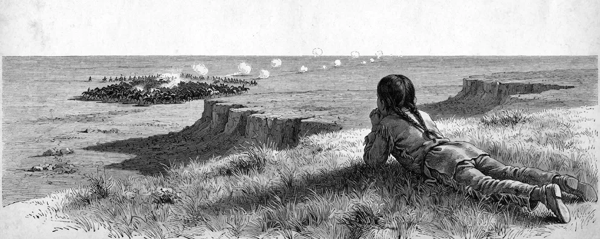
—Empezaron por la mañana —dijo el viejo—. Cuando ya había sol.
Fue la tarde siguiente. Lo dijo sin que le preguntara, como el día antes. Pero más despacio. Con más pausas. Tosía entre frase y frase, y se secaba la boca con un pañuelo rojo.
Aquella tarde la nuera no se metió en la casa. Se quedó en el porche, sin coser, con las manos en el regazo. Y Ruth vino y se sentó en el escalón, cerca, aunque no entendía el español. Creo que sabían, sin que nadie se lo dijera, que el viejo estaba contando algo que no había contado nunca. Que se notaba en cómo hablaba. En cómo miraba el corral.
Yo estaba sentado en el suelo, en la manta, como siempre. No me atrevía a moverme. Tenía calor y no me quité el sombrero. Tenía sed y no bebí. Me acuerdo de una hormiga que me subía por el brazo y de que no me la quité.
—Esto es lo último de Palo Duro —dijo el viejo, antes de empezar—. Luego ya no hablo más de eso.
Yo estaba volviendo al campamento, después de soltar a la potra. Andando. Cansado, con hambre, con los pies llenos de espinas de los cactus. Iba por la llanura, hacia el norte, hacia donde se habían escondido los nuestros, en un barranco. Y oí el primer tiro.
Me di la vuelta. Venía del sur. De donde los fuegos. De donde la manada.
Luego otro. Luego otro. Luego muchos. No como el día antes, cuando bajaron al cañón, todos a la vez, con gritos. Estos eran tiros sueltos. Uno. Esperar. Otro. Esperar. Otro. Como cuando un cazador de búfalos está tumbado en una loma y dispara despacio, sin prisa, apuntando.
No entendí. Pensé que se estaban peleando con alguien. Con los nuestros. Que los hombres habían vuelto a por los caballos.
Corrí hacia una loma para ver.
Desde la loma se veía lejos. La llanura, amarilla, y al fondo una raya oscura, que era el borde del cañón de Tule. Y delante del cañón, una mancha grande, oscura, que se movía. La manada. Y alrededor, puntitos azules. Los soldados.
Y los tiros.
Me quedé allí. Tumbado en la loma, con la barbilla en las manos. Mirando. No sé cuánto tiempo. Horas. Todo el día.
Los soldados sacaban caballos de la manada. De uno en uno, o de varios en varios, con cuerdas. Los llevaban a un sitio, un poco apartado, al borde del cañón. Y allí les disparaban. En la cabeza. Y el caballo se caía. A veces no se caía al primer tiro y había que darle otro. A veces se caía rodando por el borde del cañón, abajo.
Y traían otro.
Y otro.
Y otro.
El viejo se calló. Tosió. Se secó la boca.
—¿Sabes lo que es oír mil tiros? —me preguntó.
No le contesté.
—Uno detrás de otro. Todo el día. Desde que sale el sol hasta que se pone. Y cada tiro es un caballo. Y tú sabes de quién es cada caballo. Porque has contado esa manada mil veces. Porque has crecido con ellos. Ese es el pinto de mi tío. Ese es el bayo de la vieja que nos daba ciruelas. Ese es el castaño que mató el búfalo del verano pasado. Ese es el negro del jefe. Ese es el potro que nació en primavera. Pum. Pum. Pum.
»Y los otros caballos, los que esperaban, oían los tiros y olían la sangre y relinchaban. Todos. Un ruido que no se te va de la cabeza nunca. Mil caballos relinchando a la vez porque saben lo que va a pasar. Como lloran las mujeres.
Se tapó los oídos con las manos. Un momento. Como un niño. Luego las bajó.
—Lo oigo todavía —dijo—. De noche. Algunas noches.
Al atardecer, cuando ya casi no se veía, dejaron de disparar.
La manada ya no estaba. Al borde del cañón había un montón oscuro, enorme. Y otro en el fondo, donde habían caído rodando.
Algunos caballos no los mataron. Se los quedaron los soldados, los mejores. Y los tonkawas, que se llevaron muchos. Los demás, todos ahí.
Mil cuarenta y ocho, dice el libro de mi nieta. Los contaron. Claro que los contaron.
Yo pensé en la potra. En que si no la hubiera sacado, estaría en el montón. Y me eché a llorar, en la loma, solo, a oscuras. Y no sé si lloraba porque se había salvado o por los otros mil.
Volví al campamento de noche. Mi padre estaba sentado en el suelo, fuera del barranco, solo, mirando hacia el sur. Había oído los tiros todo el día. Todos los habían oído. Nadie había ido a ver.
Me senté a su lado. No me preguntó dónde había estado.
Al rato dijo:
—Ya no somos nada.
No me miró al decirlo. Lo dijo a la oscuridad.
—Un comanche sin caballo no es nada —dijo—. Es un hombre andando. Es un mexicano. Es un blanco pobre.
Se calló.
—Nos han matado los caballos para matarnos a nosotros —dijo—. Y no hace falta disparar a nadie más.
—Aquel invierno fue el peor —siguió el viejo, más bajo—. No había caballos, así que no había caza. No había tiendas, así que dormíamos en cuevas, en los barrancos, debajo de pieles viejas, de lo poco que había salvado la gente. No había comida, porque se había quemado toda en el cañón. Comíamos lo que había. Raíces. Ratas. Los perros. Mi madre lloró cuando mi padre mató a nuestro perro, que era un perro amarillo muy bueno, pero se lo comió. Todos nos lo comimos.
»Y llovía. Ese otoño llovió como no había llovido nunca. Días y días. Los ríos se salían. Todo era barro. Y luego nevó. Y luego hizo un frío que se te helaban los dedos de los pies dentro de los mocasines. Se murió gente. Viejos. Niños. Mi abuela.
Lo dijo así, sin cambiar la voz.
—La que se escapó de San Antonio. La que crió a mi madre. Se murió en una cueva, en enero, de frío y de hambre, con ochenta y tantos años, envuelta en una piel de búfalo vieja, con la cabeza en las rodillas de mi madre. Y mi madre le cantó en español. La de la paloma.
»No pudimos enterrarla bien. No había piedras sueltas. Estaba todo helado. La dejamos en una grieta, con su manta, con la cara pintada de rojo con lo poco que quedaba de pintura. Y no había caballo que matar en su tumba.
»Mi padre le dio la yegua vieja. La gris. La madre de la potra.
—¿La mató?
—No. —El viejo negó—. Se la ató junto a la grieta. Para que la acompañara una noche. Como si fuera a matarla. Y por la mañana fue y la desató. Y se la trajo.
»Le dijo a mi madre que la abuela lo entendería. Que la abuela sabía lo de esas yeguas. Que no se las mata.
—Pero hubo una cosa buena aquel invierno —dijo el viejo, después de un rato—. Una. No quiero que te vayas pensando que todo fue malo.
»En febrero, en lo peor, cuando ya nos estábamos comiendo las correas de los mocasines hervidas, llegaron unos comancheros. Tres. De Nuevo México. Con dos burros y una carreta pequeña. No sé cómo nos encontraron. Los soldados no nos encontraban y ellos sí. Siempre nos encontraban.
»Bajaron al barranco con las manos en alto, gritando en español que eran amigos. Mi madre les contestó. Y entonces bajaron del todo. Eran viejos, pobres, con los sombreros rotos y las barbas blancas, y los burros estaban tan flacos como nosotros. Y traían pan. Pan duro, del que cuentas tú, del que se cuece dos veces. Sacos. Y pinole. Y un poco de piloncillo.
»Y no nos pidieron nada. Porque no teníamos nada. Ni pieles, ni caballos, ni nada. Mi padre les quiso dar su cuchillo, lo único que le quedaba. Y el más viejo le dijo que no. Que se lo guardara. Que ya le pagaría otro año.
»Mi madre habló con ellos toda la noche, junto al fuego. En español. De Nuevo México, de sus pueblos, de la comida. Uno era de un sitio que se llamaba La Cuesta. Otro, de Anton Chico. Le contaron que los soldados americanos los perseguían a ellos también. Que ya no les dejaban subir al Llano. Que los que cogían los metían en la cárcel por comerciar con los indios. Que aquel era su último viaje.
»Por la mañana se fueron. Y nos dejaron el pan.
Se quedó callado.
—Nos comimos aquel pan durante dos semanas —dijo—. Mi madre lo partía con una piedra, en trozos pequeños, y lo mojaba en agua caliente para que se ablandara. Un trozo cada uno, por la mañana. Y ese pan nos salvó. A muchos. No a mi abuela, que ya se había muerto. Pero a otros.
»Yo no me acuerdo de la cara de aquellos hombres. Me acuerdo del pan. Del olor del pan cuando mi madre abrió el primer saco. Olía a casa. A una casa que yo no había tenido nunca.
Me miró.
—Olía a lo que tú cuentas de Atrisco en otoño —dijo.
No pude contestarle.
—En primavera nos rendimos —dijo—. No había más remedio. Íbamos a morir todos. Los soldados seguían buscándonos por todo el Llano, por todos los cañones, cada vez que nos movíamos. Y no podíamos movernos deprisa, porque íbamos a pie. Y no podíamos cazar. Y no podíamos nada.
»Mi padre juntó a las familias que quedaban en nuestro grupo. Doce, trece familias. Y les dijo que volvíamos a la reserva. Que nos entregábamos. Algunos lloraron. Algunos no quisieron y se fueron a otro lado. Los demás le seguimos.
»Fuimos andando. Hacia el este. Hacia Fort Sill. Semanas. Con los pocos caballos que teníamos, cinco o seis, flacos, que llevaban a los viejos y a los niños pequeños. Y la yegua gris vieja, que llevaba a mi madre.
»Y por el camino íbamos viendo los huesos.
—¿De qué?
—De todo. De búfalos, sobre todo. Por todas partes. La llanura estaba blanca de huesos, en algunos sitios. Como si hubiera nevado. Los esqueletos de los búfalos que habían matado los cazadores, ya limpios, blancos, con las costillas al aire, en filas, en montones. Miles. Cientos de miles. Hasta donde llegaba la vista.
»Y entre ellos, a veces, un caballo.
Se quedó mirando la yegua, en el corral.
—Mi padre iba delante, andando, tirando de la yegua con mi madre encima. Y no miraba los huesos. Miraba al frente.
»Yo sí los miraba. Todos. Iba contando.
Se encogió de hombros.
—Era lo que sabía hacer —dijo—. Contar.
Cuando terminó, se levantó y se fue a la tienda sin decir nada. Le oímos toser dentro mucho rato.
La nuera se levantó también y entró detrás de él con un cazo. Ruth se quedó en el escalón. Me miró.
—¿Qué te ha contado? —me preguntó, en inglés.
Le dije que lo de después de Palo Duro. Lo de los caballos. Lo del invierno.
—¿Lo de los mil cuarenta y ocho?
—Sí.
Se quedó callada.
—Él estaba allí —dijo—. ¿Verdad? Los vio.
—Los oyó —le dije—. Todo el día.
Ruth bajó la cabeza. Se quedó mirándose los pies descalzos en el polvo. Y luego se levantó y fue al corral, y se metió dentro, cosa que no hacía nunca, y se puso al lado de la yegua, y le pasó el brazo por el cuello, y apoyó la cara en su crin.
Estuvo así hasta que se hizo de noche.
Yo me fui sin despedirme. Conduje hasta Lawton. En la pensión, los braceros jugaban a las cartas en un catre, con una vela, apostando cerillas. Me ofrecieron jugar. Les dije que no. Me tumbé vestido, de cara a la pared, como Henry, el de Kansas, la noche de la foto.
Y oí los tiros. Toda la noche. Uno. Esperar. Otro. No los había oído nunca, y los oí. No sé explicarlo mejor.
Por la mañana, al ir a buscar el coche, pasé por delante de una cuadra de alquiler que había en la calle de atrás, donde los vaqueros dejaban los caballos. Había cinco o seis, atados a una barra, con las cabezas bajas, al sol, espantándose las moscas. Me paré a mirarlos. Uno, un bayo, levantó la cabeza y me miró.
Lo conté sin querer. Uno, dos, tres, cuatro, cinco, seis.
Seis. Todos.
La casa del hielo
Fort Sill · primavera de 1875 · lo que contó Muchos Caballos
Ramón
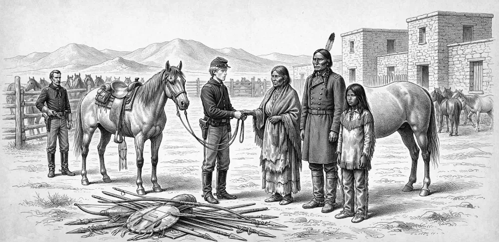
Al día siguiente no quiso contar nada. Estaba cansado. Se pasó la tarde en la tienda, tumbado, y su nuera no me dejó entrar.
Me quedé debajo del álamo con Ruth. Le enseñé a contar en español hasta cien. Ella me enseñó a contar en comanche hasta veinte, que es donde, me dijo, se acababa lo que le había enseñado su abuelo, porque más allá ya no hacía falta contar caballos.
—¿Por qué no?
—Porque más de veinte, me dijo, son muchos —dijo ella, y se rio.
Ruth contaba en español muy bien, con un acento que hacía gracia, comiéndose las eses. Se equivocaba en el catorce y en el quince, que los mezclaba siempre, y en el setenta, que decía «sietenta». Yo contaba en comanche fatal. No sabía poner la lengua donde había que ponerla, y ella se tapaba la boca para no reírse, y luego se reía igual.
Después me preguntó cosas de Atrisco. Si había cine. Si las muchachas iban a la escuela. Si había maestras mexicanas o solo blancas. Le dije que había una maestra en Atrisco, la señorita Baca, que era de Albuquerque y había estudiado en la Normal de Las Vegas, y que enseñaba en inglés y en español, aunque estaba prohibido el español, y que si venía el inspector, cambiaba de lengua a media frase.
—Yo quiero ser así —dijo Ruth—. Maestra. Y enseñar en las dos. Aunque esté prohibido.
—Te echarán.
—Pues que me echen. —Se encogió de hombros—. Mi abuelo dice que a los comanches nos han echado de todos los sitios. Uno más no importa.
Me hizo gracia cómo lo dijo. Como su abuelo. Exactamente como su abuelo.
Al anochecer el viejo salió de la tienda y se sentó en su silla. Me hizo una seña. Ruth se fue a la casa.
—Mañana es el último día de los profesores conmigo —dijo—. Ya les he contado todo lo que quería contarles. A ti te queda poco. Te cuento lo del fuerte.
Llegamos a Fort Sill en abril. Andando. Mi padre delante, tirando de la yegua gris con mi madre encima, y detrás las doce familias, en fila, a pie, con los viejos en los pocos caballos, con los niños a la espalda, sin tiendas, sin nada, con la ropa rota y las caras flacas.
Antes de llegar al fuerte, mi padre se paró en un arroyo y se lavó la cara. Y se peinó. Y se puso el uniforme azul con botones de latón que le habían dado en Medicine Lodge, que había llevado envuelto en una piel todo el invierno, en el hambre, sin cambiarlo por comida. Y se puso una pluma. Y siguió andando.
—¿Por qué? —le pregunté.
—Porque uno no se rinde sucio —me dijo.
En el fuerte nos estaban esperando. No a nosotros. A todos. Llevaban semanas llegando grupos. De los cañones, del Llano, de todas partes. Igual que nosotros. A pie, con hambre, con los pocos caballos que les quedaban.
Los soldados nos pararon delante del fuerte, en un llano. Nos contaron. Apuntaron nuestros nombres en un libro, con un intérprete que no sabía decirlos. Y luego nos dijeron que diéramos las armas.
Mi padre dio su rifle. El que había llevado a la pelea del fuerte de los cazadores de búfalos. Y su arco, y sus flechas, y su cuchillo. Los tiraron en un montón con los de los demás. Después los quemaron. Los arcos, los escudos, las lanzas. Los rifles se los quedaron.
Y luego nos dijeron que diéramos los caballos.
El viejo se calló un rato largo.
—Mi padre se quedó quieto —dijo—. Con la cuerda de la yegua en la mano. Mi madre seguía encima. No se había bajado.
»Un soldado vino a por ella. Un muchacho. Joven, rubio, con la cara roja de sol. Le dijo algo a mi padre en inglés. Y alargó la mano para coger la cuerda.
»Y mi padre no la soltó.
»El soldado le dijo algo más fuerte. Mi padre no la soltó. Vino otro soldado. Un sargento. Con un revólver en la mano. Y le dijo algo a mi padre, y el intérprete se lo tradujo: que soltara el caballo o le pegaban un tiro a él y luego al caballo.
»Y mi madre se bajó.
»Se bajó de la yegua, sola, sin que nadie la ayudara. Le cogió la mano a mi padre, la de la cuerda. Le abrió los dedos uno a uno. Le quitó la cuerda. Y se la dio al soldado.
»Le dijo algo en español, que el soldado no entendió y el intérprete tampoco. Que solo entendimos nosotros.
—¿Qué le dijo?
—Le dijo: cuídala.
—Se llevaron todos los caballos a un corral grande, detrás del fuerte —dijo el viejo—. Unos días después los vendieron. A los blancos que vinieron de Texas a comprarlos. Barato. Y los que no vendieron, los mataron. Como en Tule. Pero menos.
»No sé qué pasó con la yegua. Nunca lo supe. Fui al corral varias veces, los primeros días, a mirar entre los palos, y estaba. Gris, vieja, con la estrella, quieta, en un rincón, apartada de los demás. Me miraba. Y un día fui y ya no estaba. Pregunté a un soldado. No me entendió. Pregunté a un intérprete. Se encogió de hombros.
»Mi padre no preguntó nunca.
—A él lo encerraron —dijo—. A los hombres. A los que habían peleado, o a los que los soldados creían que habían peleado. A mi padre por el uniforme, creo. Porque lo llevaba puesto. Pensaron que era jefe.
»Había en el fuerte una casa de piedra para guardar el hielo. Una casa sin techo, todavía, a medio hacer, con las paredes altas y un suelo de tierra. Ahí los metieron. A muchos. Cincuenta, sesenta, no sé. Como animales en un corral.
»Y les daban de comer tirándoles la carne por encima de la pared. Carne cruda. Trozos. Se la tiraban como se tira a los perros. Y ellos la cogían del suelo, del barro.
»Y llovía. Y hacía frío por las noches. Y no tenían nada. Las mantas que tenían.
Tosió.
—Mi madre y yo íbamos todos los días. Nos poníamos fuera de la pared, en el lado donde no había soldados, y mi madre cantaba. En español. Para que mi padre supiera que estábamos allí. Y a veces él contestaba. En comanche. Cantando también. Una canción de las de antes, de las de los caballos. Y los otros presos se callaban para escucharle.
»Estuvo allí meses. A algunos se los llevaron lejos, en tren, a un fuerte en el mar, en Florida, presos. A los que creían que eran los peores. Mi padre no. Mi padre salió en otoño. Flaco. Con tos. Sin el uniforme, que se le había podrido encima.
»Y no volvió a hablar de caballos.
—Mientras mi padre estaba en la casa del hielo, mi madre y yo vivimos donde pudimos —siguió—. Nos dieron una tienda de lona del ejército, vieja, con agujeros, de las que usaban los soldados, que mi madre remendó con trozos de saco de harina. La pusimos junto al arroyo, con las otras familias de los presos. Un campamento de mujeres y niños y viejos, sin hombres, sin caballos, sin nada que hacer más que esperar las raciones.
»Mi madre trabajaba. Siempre trabajaba. Se enteró de que las mujeres de los oficiales del fuerte buscaban quien les lavara la ropa, y fue. La única de todas. Las comanches no querían; decían que era cosa de esclavas. Mi madre dijo que ella ya había sido esclava una vez, de niña, y que no se le había caído nada. Y lavaba. En el arroyo, de rodillas, con un jabón amarillo que le daban, las camisas blancas de los oficiales y los vestidos de las señoras, con encajes. Y le pagaban en harina, en azúcar, en café, a veces en monedas.
»Y yo iba con ella. A cargar los cestos. A tender la ropa en los arbustos. Y oía a las señoras hablar en inglés en los porches, y a los niños blancos jugar, y a las criadas negras cantar. Y aprendí las primeras palabras de inglés allí. Shirt. Soap. Wet. Hurry up.
Se rio, sin ganas.
—Esas fueron mis primeras palabras de inglés. Camisa. Jabón. Mojado. Date prisa. Y luego, con los años, aprendí más. Pero esas fueron las primeras.
»Una de las señoras, la mujer de un capitán, le regaló a mi madre un espejo. Pequeño, redondo, con un marco de latón. Mi madre se miró en él. Hacía años que no se veía la cara. Se quedó mucho rato mirándose. Tenía cuarenta años y parecía de sesenta. Tenía el pelo cortado a trasquilones, de los lutos, y la cara llena de arrugas, y los ojos hundidos.
»Y me dijo, en español: «Mira, hijo. Esta es una mujer de Parras. Ya no se le nota».
—En junio llegó el último grupo —dijo el viejo—. Los Kwahadi, los antílopes, los del Llano. Los que no se habían rendido nunca. Con Quanah. El hijo de la blanca. Llegaron a caballo, todavía. Con cientos de caballos. Con la cabeza alta. Los últimos.
»Yo los vi llegar. Estaba en la puerta del fuerte con otros muchachos. Venían al paso, por la llanura, en fila, y el polvo los envolvía, y el sol detrás. Y pensé que así era como habíamos sido. Así. Y que ya no.
»Les quitaron los caballos también. Claro. A ellos también.
Se encogió de hombros.
—Quanah luego se hizo amigo de los blancos —dijo—. Aprendió a vivir como ellos. Tenía ganado, una casa grande, mujeres. Iba a Washington. Hablaba con el presidente. Le hicieron juez. Hizo bien, supongo. Alguien tenía que hacerlo.
»Mi padre decía que no le reconocía.
Estuvimos un rato callados. Ya era de noche. La nuera salió al porche con el farol y se sentó a coser. Ruth se asomó a la puerta y se volvió a meter.
—Mi padre se murió en 1890 —dijo el viejo—. De tos. En la reserva. Nunca volvió a tener un caballo suyo. Decía que no quería. Que si tenía un caballo se lo iban a quitar, y que prefería no tenerlo.
»Y antes de morirse me preguntó una cosa. Me preguntó: ¿qué pasó con la potra?
Me miró.
—Lo sabía. No sé cómo. A lo mejor me vio aquella noche. A lo mejor me olió el miedo cuando volví. A lo mejor lo adivinó. Lo sabía y no me había preguntado nunca. Quince años sin preguntarme.
—¿Y qué le dijo?
—Le dije la verdad. Que la había soltado. Que se había ido hacia el oeste. Al Llano.
»Y mi padre sonrió. Por primera vez en quince años, le vi sonreír.
»Y me dijo: entonces no se acabó.
Al día siguiente, al llevar a uno de los estudiantes al fuerte a ver unos papeles de la agencia, pasé por delante de la casa del hielo.
Fort Sill seguía allí. Era ahora un fuerte grande, del ejército, con cañones y soldados que hacían instrucción en un campo de tierra, y camiones, y casas nuevas de ladrillo para los oficiales. Pero en el centro, alrededor de un cuadrado de hierba seca, seguían en pie los edificios viejos, los de piedra caliza, los del tiempo del viejo. Bajos, largos, con porches de madera. Y detrás, un poco apartada, una casa de piedra pequeña, cuadrada, de paredes gruesas, con un techo ya, de tejas, y una puerta de madera cerrada con candado.
Le pregunté al estudiante si sabía qué era.
—The old ice house —dijo. Y luego, como si se acordara de algo que había leído—: Ahí encerraban a los indios, creo. Al principio.
Paré el coche. El estudiante entró al edificio de la agencia con sus papeles. Yo me bajé y me acerqué a la casa del hielo.
Era más pequeña de lo que la había imaginado. Mucho más. Habría cabido en el patio de mi casa de Atrisco. Y ahí habían metido a cincuenta o sesenta hombres. Sin techo. Bajo la lluvia. Con la carne cruda cayendo por encima de la pared.
Di una vuelta alrededor. Despacio. Toqué las piedras. Estaban calientes del sol, ásperas, de color crema. En una, a la altura de la cintura, había unas rayas. Muchas. En grupos. Rayas hechas con algo duro, con una piedra o un clavo, hace mucho tiempo, gastadas.
No sé quién las hizo. A lo mejor un soldado aburrido. A lo mejor un niño. A lo mejor nadie.
Pero me pareció que alguien había estado contando.
Me quedé allí hasta que salió el estudiante con sus papeles. Me preguntó si me encontraba bien. Le dije que sí. Que el calor.
No le dije nada al viejo de que había ido. No hacía falta.
La Estrellita
Atrisco · 1880-1915 · lo que Ramón le contó al viejo
Ramón
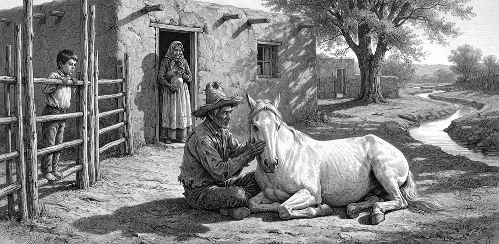
Aquella tarde fue él quien preguntó.
—¿Y la tuya? —dijo—. La de Atrisco. ¿Cómo se acabó?
Era la víspera de que los profesores terminaran con él. Estaba más animado. Había comido. Su nuera le había hecho un caldo de huesos con maíz y se lo había tomado entero, y había pedido café, y se había fumado un cigarro de los que le compraba yo en Indiahoma, con los ojos cerrados.
Le conté.
Le conté que en 1880 llegó el tren a Albuquerque. Que mi bisabuelo, que era el nieto de Josefa, la de la yegua y los soldados, fue con todo Atrisco a verlo llegar, un día de abril, con banda de música y discursos y cohetes. Que la máquina venía echando humo negro y gritando, y que los caballos de los ranchos que estaban en la estación se espantaron y salieron corriendo, y que la yegua gris de la familia, que era la sexta o la séptima desde la potra del comanche, no se espantó. Se quedó quieta, mirando el tren, con las orejas hacia delante, y luego bajó la cabeza y siguió comiendo hierba.
—Mi abuela decía que esas yeguas no se espantaban de nada —le dije—. Que lo habían visto todo.
El viejo sonrió.
Le conté que el tren no paró en Albuquerque. En la Albuquerque de siempre, la de la plaza y la iglesia de San Felipe y las casas de adobe junto al río. Paró a dos millas, en un llano, donde los americanos hicieron una ciudad nueva, con casas de ladrillo y de madera, con tejados de dos aguas, con hoteles, bancos, tiendas, cantinas, una calle principal recta como una regla. La llamaron Nueva Albuquerque. Y la vieja se quedó vieja.
Le conté que en pocos años la ciudad nueva se comió a la vieja. Que llegaron miles de americanos. Que compraron tierras, a veces, y a veces se las quedaron con papeles que nadie entendía, en juicios en inglés. Que en Atrisco se perdieron tierras, muchas, en pleitos que duraron cuarenta años, porque las mercedes de tierra del rey de España no tenían los papeles que pedían los jueces americanos. Que mi familia perdió la mitad de lo que tenía.
—Como nosotros —dijo el viejo.
—No tanto —dije.
—No tanto —dijo él—. Pero igual.
Le conté cómo fue lo de las tierras, porque mi abuelo lo contaba mucho, los sábados, cuando volvía de la cantina.
Que un día de 1890 y tantos llegó a Atrisco un americano con un traje negro y un maletín, y un mexicano de Santa Fe que le hacía de intérprete. Que fue de casa en casa preguntando por los papeles. Los papeles de la tierra. Y que nadie tenía papeles. Porque la tierra de Atrisco era una merced del rey, de 1692 o por ahí, dada al pueblo entero, y no a cada uno. Y que cada familia tenía su trozo porque lo había tenido su padre, y su abuelo, y el abuelo de su abuelo, y eso lo sabía todo el mundo, y no hacía falta papel.
Que el americano dijo que sí hacía falta. Que sin papel, la tierra era del gobierno. O de quien tuviera papel.
Y que empezó el pleito.
Mi abuelo fue a Santa Fe once veces. A caballo, al principio, y luego en el tren. Con su sombrero bueno y sus botas limpias. Se sentaba en un banco de madera, en un pasillo, horas, y luego le hacían pasar a una sala donde unos hombres hablaban en inglés de cosas que él no entendía, y le preguntaban, por medio de un intérprete, desde cuándo vivía allí su familia. Y él decía: desde siempre. Y los hombres apuntaban algo y le decían que se fuera.
Duró veinte años. Al final, a la familia le dejaron la casa, el corral, el huerto y la mitad del campo de abajo. La otra mitad, la del llano, la de las cabras, se la quedó un abogado de Albuquerque que había llevado el pleito de otros, y que se cobró en tierra.
—Mi abuelo decía que le habían robado con una pluma —le dije al viejo—. Que antes robaban con la lanza y ahora con la pluma. Y que era peor, porque de la lanza te podías defender.
El viejo se rio, bajito.
—Tu abuelo y mi padre se habrían entendido —dijo.
Le conté que mi abuelo Nicolás nació en 1855 y se murió en 1920. Que era un hombre pequeño, moreno, callado, que trabajaba el campo y luego, cuando el campo ya no daba, trabajó en el ferrocarril, en el taller, como mi padre, como yo. Que hablaba poco inglés y no lo quería hablar. Que iba a misa todos los domingos y a la cantina todos los sábados. Y que tenía una yegua gris en el corral que no montaba nunca y que cepillaba todos los domingos después de misa, con un manojo de paja retorcida, de la cruz a la grupa, hablándole bajito.
El viejo se quedó muy quieto.
—De la cruz a la grupa —repitió.
—Sí.
—Así lo hacía el padre de Francisco. El de los ojos pintados. Cuando llegó mi bisabuelo a Atrisco, el viejo estaba en el corral, cepillando una yegua, así, con paja, hablándole bajito. Eso contaba mi bisabuelo. Que fue lo primero que vio.
Nos miramos.
—Ciento cuarenta años —dijo el viejo—. Y lo seguíais haciendo igual.
Le conté también cómo era la cocina de mi abuela. Porque allí empezaba todo.
Era una pieza baja, de adobe, con el techo de vigas negras de humo y un fogón en la esquina, de esos de campana, con la boca redonda. Olía siempre a chile tostado, a leña de piñón y a café. En las paredes colgaban ristras de chile y de ajos, y una sartén de hierro, y un calendario de una tienda de Albuquerque con una muchacha americana sonriendo. Y en un rincón, en una repisa, la Virgen de Guadalupe, con una vela delante que no se apagaba nunca.
Mi abuela se sentaba en su silla, junto al fogón, con el rosario. Y yo me sentaba en el suelo, a sus pies, en una piel de borrego. Y fuera, en invierno, nevaba, y se oía a mi abuelo en el corral, cepillando la yegua a la luz de un farol, hablándole.
—Mira, mira cómo la quiere —me decía mi abuela, señalando hacia la ventana con la barbilla—. Más que a mí.
Y se reía. Y luego me contaba lo de la potra del comanche, otra vez, la misma, como todas las noches.
Le dije al viejo que yo, de niño, iba con mi abuelo los domingos al corral, a la hora del cepillado. Que me dejaba sujetar el farol, si era de noche, o el cubo, si era de día. Y que él cepillaba y le hablaba a la yegua en un español que no era el de la casa, más viejo, con palabras que yo no conocía, y que cuando le preguntaba qué le decía, me contestaba que cosas de hombres.
—¿Y qué le decía? —preguntó el viejo.
—No lo sé. Nunca lo supe.
El viejo asintió.
—Yo tampoco sé lo que le digo a esa —dijo, señalando el corral—. Le digo cosas. Ella sabe.
Le conté lo de la Estrellita.
Que era la última. Que las anteriores habían ido teniendo cada vez menos potras, o potras sin estrella, o potros machos que se vendían o se castraban. Que mi abuelo decía que la línea se estaba cansando, como se cansan las familias. Que la Estrellita había nacido en 1890 y era hija de una yegua que se había muerto al parirla, y que mi abuela la había criado con leche de cabra en un cubo, en la cocina, como a una niña.
Que era la más bonita de todas. Eso decía todo el mundo. Gris, con manchas en las ancas como gotas de lluvia, con la estrella perfecta, de cinco puntas casi. Que mi abuelo la llevaba a la feria de Albuquerque solo para que la vieran, sin intención de venderla, y que los americanos le ofrecían por ella cien dólares, doscientos, y él decía que no, y se reían de él.
Que no tuvo potros nunca. Ni uno. Mi abuelo la cruzó con los mejores caballos del valle, y nada.
—Era como las mulas —le dije—. Mi abuelo decía que la línea había decidido acabarse en ella. Que era su manera de decir que ya estaba bien.
—Yo me acuerdo de ella —le dije—. Poco. Tenía tres años, cuatro. Me acuerdo de que mi abuelo me subía encima, sin silla, en el corral, y me llevaba andando despacio alrededor, cogiéndome de la pierna. Que era muy alta. Que olía bien. Que tenía el pelo de la crin áspero y blanco y que yo me agarraba con las dos manos.
»Y me acuerdo del día que se murió.
El viejo esperó.
—Fue en verano —le dije—. En agosto. Hacía calor, como aquí. Mi abuelo la encontró por la mañana tumbada en el corral, de lado, respirando muy deprisa. Era vieja ya. Veinticinco años. Mi abuelo se sentó en el suelo al lado de ella y le puso la cabeza en las rodillas. Y se quedó ahí todo el día. Sin comer. Sin ir al taller. Al sol. Mi abuela le llevaba agua y él no la bebía. Y yo estaba en la puerta del corral, agarrado a los palos, mirando, sin entender.
»Por la tarde se murió.
»Y mi abuelo no dejó que nadie la tocara. Llegó un hombre del matadero de la ciudad, que se había enterado, a ofrecerle dinero por la piel y la carne, y mi abuelo lo echó con una pala. De verdad. Con la pala en alto. Y luego, con mi padre y mis tíos, cavaron un hoyo enorme en el rincón del campo, junto a la acequia, debajo de un álamo, y la arrastraron con una mula, y la enterraron entera. Con las crines y la cola. Sin quitarle nada.
»Y mi abuelo se quedó junto al hoyo, cuando ya estaba tapado, y dijo una cosa. Mi abuela me lo contó después, cuando fui mayor, porque yo era pequeño y no me acordaba de las palabras.
—¿Qué dijo?
—Dijo: ya está, ya hemos cumplido. A esos caballos no se los toca.
El viejo estuvo callado mucho rato. Había anochecido. Se oía a Ruth dentro de la casa, leyendo en voz alta algo a su madre.
—Ya hemos cumplido —repitió él al fin.
—Eso dijo.
—¿Con quién?
—No lo sé. Mi abuela tampoco lo sabía. Decía que era algo que se decía en la familia. Que se había dicho siempre. Que a esos caballos no se los mataba, que se los dejaba vivir, que había un encargo. Y que nadie se acordaba ya de quién lo había hecho.
El viejo asintió.
—Yo sí me acuerdo —dijo—. Mi familia se acordó siempre. La tuya se olvidó de quién, pero se acordó de qué. A lo mejor es mejor así. Acordarse de qué. El quién se lo lleva el viento.
Se quedó mirando hacia el corral, en la oscuridad. No se veía la yegua. Solo una mancha más clara contra el cobertizo.
—Tu abuelo cumplió —dijo—. La dejó vivir hasta que se murió sola. Y no la tocó nadie.
»Pero no la soltó.
—Era una yegua de corral —dije—. En Atrisco no hay adónde soltarla. Hay campos, acequias, cercas, la ciudad.
—Ya lo sé —dijo el viejo—. No le culpo. —Tosió—. Pero el viejo del barranco dijo que la soltaran. Cuando no hiciera falta. Que fuera libre. Sin ser de nadie.
»Eso es lo difícil —dijo—. Lo de no matarlos es fácil. Lo de soltarlos es lo difícil.
Me fui tarde aquella noche. Conduje hasta Lawton despacio, como siempre. Y pensé en mi abuelo con la pala en alto, echando al hombre del matadero. Lo había olvidado. Lo había olvidado por completo, y ahora lo veía, como si estuviera allí. Su sombrero de paja. Su cara roja de rabia. El hombre del matadero corriendo hacia su carro.
Pensé que yo tenía cuatro años. Que me acordaba de eso y no me acordaba de cosas de la semana anterior.
Y pensé en lo que había dicho el viejo. Lo de no matarlos es fácil. Lo de soltarlos es lo difícil.
No sabía entonces por qué me lo decía.
Ahora lo sé.
La yegua del texano
La reserva de Kiowa, Comanche y Apache · 1883-1884 · lo que contó Muchos Caballos
Ramón
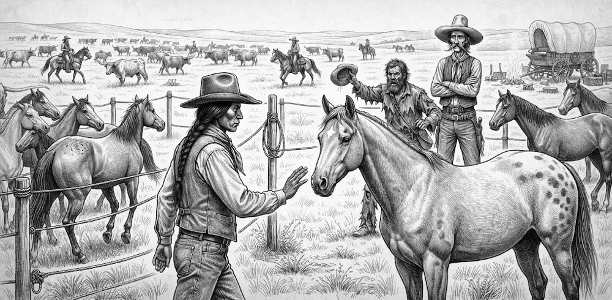
Los profesores terminaron con él un jueves. Le dieron las gracias. El profesor vino en persona, en el Ford, conmigo al volante, y le dio la mano, y le dio un sobre con el dinero de la última semana y un dólar más, y le dijo por medio del intérprete que había sido un informante muy valioso. El viejo le miró, cogió el sobre, se lo guardó en el chaleco sin abrirlo, y le dijo algo en comanche.
—¿Qué ha dicho? —le preguntó el profesor al intérprete.
El intérprete dudó.
—Dice que le ha contado lo que usted ha preguntado.
El profesor sonrió, educado, y se fue al coche. No entendió. O sí, y le dio igual.
Yo me quedé.
Le vi irse, al profesor, en el asiento de atrás del Ford, con su pipa, mirando por la ventanilla. Me pareció, por primera vez, un hombre cansado. Llevaba seis semanas en Oklahoma, en un hotel con ventiladores que no funcionaban, haciendo preguntas a viejos que no le querían contestar, con unos estudiantes que se le desmayaban de calor. Y se iba con cajas de cuadernos llenos de fichas, con lo que había venido a buscar. Matrimonio, ficha. Guerra, ficha. Caballos, ficha.
Y no sabía nada.
No lo pensé con rabia. Lo pensé con algo parecido a la pena. Porque había hecho su trabajo, y lo había hecho bien, y era un hombre serio y honrado, y en aquellos cuadernos iba a quedar mucho de lo que aquellos viejos sabían, más de lo que quedaría de ninguna otra manera. Y aun así se iba sin saber nada de lo importante. Ni de la potra de Tule. Ni de la Refugio callándose. Ni de la abuela en la calle de San Antonio, levantándole la cabeza al marido.
Llevé al profesor al hotel y volví. Sin que nadie me lo mandara. Era la primera vez que iba a ver al viejo sin trabajo de por medio. Ya no era el chófer de los profesores. Era yo.
El viejo lo notó. Me vio llegar a pie desde donde había dejado el coche, en el camino, y me señaló la manta, debajo del álamo, como siempre.
—Ahora ya no te pagan —dijo.
—No.
—Entonces es que quieres saber —dijo.
Y siguió.
—Después del fuerte no tuve caballo en siete años —dijo el viejo aquella tarde—. Ninguno. Iba andando, como los blancos pobres. Como mi padre. Íbamos a buscar las raciones a la agencia andando, dos días de ida y dos de vuelta.
»Y luego vinieron los texanos con sus vacas.
Me contó que los ganaderos de Texas, que tenían ranchos enormes al sur del río Rojo, necesitaban hierba. Que habían cercado sus tierras con alambre de espino, ese alambre nuevo con pinchos que acababan de inventar, y que la hierba se les acababa. Y que miraban al norte, al otro lado del río, a la reserva, que estaba llena de hierba, de la mejor, la que antes se comían los búfalos y los caballos de los comanches, y que ahora no se comía nadie.
Y que empezaron a meter sus vacas en la reserva. Primero a escondidas. Luego pagando. Les pagaban a los jefes, al principio, por dejarles meter el ganado. Después al gobierno, con papeles. Un arriendo. Y los comanches recibían un dinero cada año por la hierba de su tierra.
—Nos pagaban por la hierba —dijo el viejo—. Por la hierba que no podíamos comer nosotros porque no teníamos búfalos, ni caballos. Nos pagaban para que se la comieran sus vacas. Así se hacen las cosas con los blancos.
—Y necesitaban vaqueros —dijo—. Para cuidar las vacas. Y había muchachos comanches que sabían montar mejor que nadie. Que habían crecido encima de un caballo. Que no tenían nada que hacer. Y los texanos nos contrataron.
»Yo tenía veinte años. Me fui con un texano que se llamaba Burnett. No el jefe, que era un rico. Uno de sus capataces. Un hombre alto, flaco, con un bigote que le llegaba a la barbilla, que se llamaba Jim, y que hablaba un poco de comanche y bastante español, porque se había criado en la frontera con los mexicanos. Me dijo que me pagaba veinticinco dólares al mes y la comida. Y un caballo para trabajar.
»Un caballo.
Se quedó callado.
—Le habría trabajado gratis —dijo—. Por el caballo.
Me contó la vida del vaquero. Era la misma, me di cuenta, que habían contado alguna vez los viejos de Atrisco que habían trabajado en los ranchos del llano de arriba. Levantarse antes del sol. Café negro en un cazo, galletas duras, tocino frito. Todo el día a caballo, con las vacas, buscándolas, juntándolas, contándolas, llevándolas al agua, sacándolas del barro, curándoles los gusanos de las heridas. La lluvia, el frío, el polvo. Dormir en el suelo, al raso, con la silla de almohada. Los rodeos en primavera, cuando se marcaba a los becerros con el hierro caliente. Los arreos en verano, cuando se llevaba el ganado al norte, a Kansas, al tren, semanas y semanas, por el camino, por la llanura, por donde antes iban los búfalos.
—Yo iba por el sitio por donde habían ido los búfalos —dijo—. Con vacas. Por los mismos vados. Por las mismas lomas. Y me acordaba de los búfalos. Y no se lo decía a nadie.
»Los otros vaqueros eran texanos, la mayoría. Algún negro. Muchos mexicanos. Y algunos de ellos habían sido desolladores. Lo que te dije. De los que vi de niño en el barranco, llenos de sangre. O como ellos. Y eran buena gente. Me enseñaron a echar el lazo a la manera de ellos, que es distinta de la nuestra. Yo les enseñé a montar a la nuestra. Me llamaban Chief, como llaman a todos los indios. Me daba igual.
—Lo que más me gustaba eran las noches del arreo —dijo—. Las vacas dormidas, todas juntas, en un llano, miles. Y los vaqueros de guardia, de dos en dos, dando vueltas alrededor de la manada, al paso, toda la noche, en turnos. Y cantando. Había que cantar. Para que las vacas te oyeran llegar y no se asustaran. Si te acercabas callado, una vaca se despertaba, veía una sombra, se levantaba de golpe, y se levantaban todas, y salían corriendo en la oscuridad, y eso era la muerte. Se te llevaban por delante.
»Así que cantábamos. Los texanos sus canciones, de iglesia, de muchachas, de vaqueros muertos. Los negros las suyas, que eran las más bonitas. Los mexicanos las de ellos, que yo conocía algunas por mi madre. Y yo cantaba las de los caballos. Las comanches. Las que se cantaban antes de salir a robar caballos. Bajito. Dando vueltas alrededor de las vacas de los texanos, a la luz de las estrellas, cantando las canciones para robar caballos.
Se rio. Con ganas.
—Jim me oyó una noche. Se puso a mi lado, al paso, y me preguntó qué cantaba. Le dije que una canción de mi gente. Me preguntó qué decía. Le dije la verdad. Que decía: esta noche vamos a llevarnos sus caballos, que no se den cuenta, que duerman.
»Jim se quedó callado. Y luego se echó a reír tan fuerte que se despertaron las vacas de alrededor. Y tuvimos que cantar los dos para calmarlas. Él en inglés, yo en comanche. Y desde entonces, cada vez que me tocaba guardia con él, me pedía que se la cantara.
»Decía que era la mejor canción para cuidar ganado que había oído nunca.
—En la primavera del ochenta y cuatro —dijo—, en el rodeo, llegó un hombre con una tropilla de caballos para vender. Un mesteñero. De los que cazaban caballos salvajes en el Llano, allá arriba, en los cañones, y los domaban y los vendían a los ranchos.
»Porque en el Llano había caballos salvajes. Muchos. De los que se habían escapado. De los que se habían quedado sin dueño cuando nos los quitaron a nosotros. De los que nadie había matado. Andaban libres por los cañones, por las lomas, en manadas, como los búfalos antes, y los mesteñeros los cazaban.
»Y en la tropilla de aquel hombre había una yegua.
El viejo se calló. Miró hacia el corral.
—Gris —dijo.
No dije nada.
—Era joven —dijo—. Cuatro, cinco años. Gris clara ya, de las que se van poniendo blancas. Con manchas en las ancas. Con la estrella. Salvaje todavía, a medio domar. Con los ojos blancos de miedo, dando coces a todo el que se acercaba.
»Me quedé mirándola. No me podía mover. Jim, el capataz, me vio y se acercó y me preguntó qué me pasaba. Le dije que nada.
»Y luego me acerqué a la yegua. Despacio. Por el lado izquierdo. Hablándole bajito, en comanche, como me había enseñado mi padre. El mesteñero me gritó que me apartara, que me iba a matar, que era la peor que había cogido.
»Y la yegua se quedó quieta.
»Me olió. Me resopló en la mano. Y bajó la cabeza.
Se quedó callado mucho tiempo.
—No sé si era de la potra —dijo al fin—. La de Tule. Diez años antes. Podía ser hija. O nieta. O no. Había miles de caballos salvajes en el Llano. No lo sé.
»Pero no se espantó conmigo. Con todos los demás sí, y conmigo no.
—A lo mejor fue cómo se le acercó.
—A lo mejor —dijo él.
—Le pregunté al mesteñero cuánto quería. Dijo cuarenta dólares. Yo no tenía cuarenta dólares. Tenía nueve, de lo que me quedaba del mes.
»Y Jim, el capataz, me miró. Me miró mucho rato. Y luego le dijo al mesteñero que se la compraba él. Y le dio los cuarenta dólares. Y me dio la cuerda a mí.
»Y me dijo, en español: me la pagas trabajando.
»Trabajé para él dos años sin cobrar. Dos años. Por la yegua. Mis padres pensaban que estaba loco. Mi padre no me dijo nada. Pero la primera vez que la llevé a la reserva, a la tienda de mis padres, salió a verla. Y le puso la mano en la frente, en la estrella. Y se quedó así, sin decir nada.
»Y luego me miró y me dijo: ¿del Llano?
»Y yo le dije: del Llano.
»Y no me preguntó más.
—Jim se murió hace mucho —dijo el viejo—. De una coz de un caballo, en Texas, en un rancho. Me enteré años después. No le volví a ver. Era un buen hombre. Un texano. Uno de los que mataron a mi abuelo, en otro tiempo. O sus padres. O sus primos. Y me regaló dos años de trabajo para que yo tuviera esa yegua. Y no sé por qué. No se lo pregunté nunca.
»Hay cosas que no se entienden.
Miró hacia el corral. La yegua de ahora, la vieja, estaba de pie junto a la cerca, mirándonos, como si supiera que hablábamos de ella.
—Esa es nieta de aquella —dijo—. Aquella tuvo cuatro potras. Esta es hija de la menor de las cuatro. Nació en el corral de mi casa, el año que nos dieron la tierra, el año que se hizo Lawton. Treinta y dos años tiene.
Calculé. 1901. Treinta y dos.
—Es muy vieja —le dije.
—Es muy vieja —dijo él—. Como yo. Nos queda poco a los dos.
Lo dijo sin pena. Como se dice que mañana va a hacer calor.
Ciento sesenta acres
La reserva y Lawton · 1886-1933 · lo que contó Muchos Caballos
Ramón
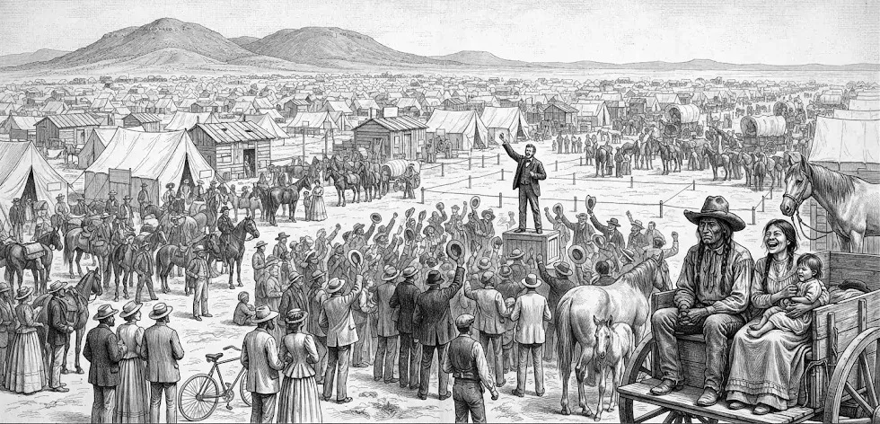
—Me casé con una mujer que se reía como tu Josefa —dijo el viejo—. Por eso me casé.
Era la última semana de agosto. Los profesores ya estaban recogiendo. Los estudiantes pasaban a máquina las últimas notas en el hotel, embalaban cajas, revelaban fotos en un cuarto oscuro que habían hecho en el baño. El profesor me había dicho que el lunes, el último lunes, me daba el coche para el viaje al cañón, y que el miércoles salíamos para Santa Fe. Me quedaban cinco días.
Los pasaba todos allí, debajo del álamo.
—¿Cómo se llamaba?
—No te lo voy a decir —dijo—. Se murió. No se dice.
Se quedó callado.
—En los papeles de la agencia se llamaba Mary —dijo—. Eso sí te lo puedo decir. Eso no es su nombre.
Se casaron en 1886. Él tenía veinticuatro años y la yegua del texano, y ella diecisiete y una risa que se oía desde el otro lado del campamento. Era hija de una familia kotsoteka, de los que comen búfalo, como la mujer de su abuelo. Le dio por ella seis caballos, de los que había ido juntando trabajando para los texanos, y no la yegua gris.
—Esa no —dijo, y se rio—. Ya sabes.
Tuvieron cuatro hijos. Dos se murieron de pequeños, de unas fiebres. Una hija se casó con un kiowa y se fue al norte, a Anadarko. Y Harold, el que quedó, nació en 1889.
—Le llamé de otra manera —dijo el viejo—. Le puse un nombre de los nuestros. Un nombre bueno, de caballos. Y a los diez años vino un hombre de la agencia y se lo llevó a la escuela de Chilocco, en el norte, en tren. A todos los niños. Y cuando volvió, ocho años después, se llamaba Harold. Y no quería que le llamaran de la otra manera.
Se encogió de hombros.
—Está bien. Es su nombre. Él lo eligió.
—Mi madre se murió el invierno antes de que repartieran la tierra —dijo—. Ya te lo conté. Y la tierra la repartieron en el verano del novecientos uno.
Me contó cómo fue.
Que vinieron unos hombres del gobierno con papeles y con mapas. Que los jefes ya habían firmado, años antes, un papel que decía que la reserva se partía. Que unos dijeron que habían firmado engañados y otros que no habían firmado. Que dio igual. Que cada comanche, cada hombre, cada mujer, cada niño, tenía que elegir un trozo de tierra de ciento sesenta acres, un cuadrado, y que ese trozo sería suyo, con un papel, para siempre. Que lo que sobrara, que era casi todo, más de dos millones de acres, se lo darían a los blancos.
—Yo elegí este —dijo, y señaló alrededor con la mano—. Junto a las montañas. Porque desde aquí se ven. Y porque hay un arroyo, que entonces llevaba agua. Y porque mi padre estaba enterrado allí arriba, en las rocas, y mi madre también, y mi abuelo de antes no sé dónde, pero por aquí.
»Mi mujer eligió el de al lado. Harold el otro. Así teníamos más.
»Y luego vinieron los blancos.
—Vinieron todos a la vez —dijo—. En agosto. Miles. Decenas de miles. No sé cuántos. Más gente de la que había visto junta nunca, ni en Medicine Lodge. Llegaban en trenes, en carros, a caballo, a pie, en bicicleta. Con tiendas de lona, con familias, con perros, con muebles, con cajas. Acampaban en la llanura, alrededor del fuerte, en las orillas de los ríos, por todas partes.
»Había una lotería. El gobierno había metido los nombres de los blancos que querían tierra en una rueda, y sacaba papeles, y al que le salía su nombre, elegía. Y los que no salían, se quedaban mirando.
»Y al lado del fuerte, en un llano donde antes acampábamos nosotros para cobrar las raciones, el gobierno hizo una ciudad. En un día. La midieron con cuerdas y estacas, calles y solares, y la subastaron. A gritos. Un hombre subido en una caja gritaba números, y los blancos levantaban la mano. Y al día siguiente ya había tiendas de lona con letreros: banco, abogado, cantina, hotel, médico, iglesia. Y a la semana, casas de madera. Y al año, de ladrillo.
»Le pusieron Lawton. Por un general que había matado indios. Apaches.
Se rio.
—Ahí duermes tú —dijo.
—Yo no sabía qué hacer con ciento sesenta acres —dijo—. Nunca había tenido tierra. Nadie de los nuestros había tenido tierra. La tierra no era de nadie. Era de todos. Era de los búfalos. ¿Cómo va a ser un trozo de tierra tuyo? ¿Hasta dónde? ¿Hasta una raya que no se ve?
»El agente me dijo que la sembrara. De algodón. De trigo. Me dieron un arado y dos mulas. Lo intenté. Un año. No sabía. Las mulas no me hacían caso, el arado se torcía, los surcos me salían como los caminos de las serpientes. Los blancos de alrededor se reían. Mi mujer se reía. —Sonrió—. Ella más que nadie.
»Al año siguiente la arrendé. A un alemán, un hombre que hablaba raro, con una barba roja, que se llamaba Schultz. Muy trabajador. Muy serio. Me pagaba un dinero cada año. Sembraba algodón. Aró todo. Todo. Hasta la cerca. Le dio la vuelta a la tierra como se le da la vuelta a una piel. Y donde había hierba alta, hierba de búfalo, hierba que había estado ahí desde siempre, puso algodón.
»Yo me quedé con un trozo. Este. —Golpeó el suelo con el pie—. La casa, el álamo, el corral. Para la yegua. Para mi madre que ya no estaba. Para mí.
»Y la yegua parió ese verano. Una potra gris. Esa.
Señaló el corral.
—Treinta y dos años tiene. Lo que tiene Lawton.
—Ella era lo bueno de aquellos años —dijo el viejo, después de un rato—. Todo lo demás era malo, o era nada. Ella era lo bueno.
»Se reía de todo. De mí, de los blancos, del agente, del pastor, de las mulas. De la harina con gusanos. De nuestra pobreza. Decía que éramos tan pobres que hasta los perros nos tenían pena. Y se reía. Y yo me reía con ella, aunque no tuviera ganas.
»Sabía hacer de todo. Curtía, cosía, cocinaba, montaba la tienda, arreglaba las cosas. Sabía hacer pan, el de los blancos, que mi madre le había enseñado. Sabía cantar las canciones de su gente, las kotsoteka, que eran distintas de las nuestras, más lentas. Se las cantaba a Harold de pequeño, y luego a mi nieta, cuando nació. Ruth no se acuerda. Era muy pequeña cuando se murió su abuela. Pero a veces la oigo tararear algo, cuando lava, y es una de esas.
Se quedó mirando hacia la casa, donde Ruth fregaba los cacharros de la cena en una palangana, en el porche.
—No sabe que lo sabe —dijo—. Pero lo sabe.
»Por las noches, en la tienda, cuando Harold ya dormía, mi mujer me pedía que le contara cosas. De antes. De los búfalos, de Palo Duro, de mi madre, de mi abuela la del San Antonio. Ella era más joven, había nacido en la reserva, casi, y no había visto nada de aquello. Y quería saberlo. Y yo le contaba. Todo menos lo de la potra.
—¿Por qué no eso?
—No sé. —Se encogió de hombros—. A lo mejor porque era lo único que tenía solo para mí.
»Y ella me escuchaba con los ojos cerrados, tumbada en las pieles, con la cabeza en mi brazo. Y a veces se dormía. Y yo seguía contando, bajito, aunque ya no me oyera. Porque me gustaba contarlo. Porque si no lo contaba, se me iba.
Me miró.
—Como ahora —dijo—. Que te lo cuento a ti para que no se me vaya.
Me contó los años siguientes deprisa, como se cuentan los años que no tienen nada que contar. El trabajo de vaquero, mientras hubo vacas de los texanos, que se acabaron cuando se repartió la tierra y ya no hubo pasto común. Trabajos sueltos: arreglar cercas, cortar heno, cuidar caballos de otros. El dinero del arriendo una vez al año. Las raciones, mientras las hubo. La iglesia de la misión, los domingos, porque a su mujer le gustaban los cantos. Las reuniones de los sábados en la tienda, alrededor del fuego, con el tambor de agua y el peyote, porque a él le gustaban esas. El baile del verano. Los nietos.
—Mi mujer se murió en el dieciocho —dijo—. En otoño. De la gripe que vino de la guerra de los blancos en Europa. Se murió mucha gente. Blancos y nuestros. En una semana. Estaba buena el lunes y el sábado estaba muerta.
Se calló.
—La enterré en el cementerio de la misión. Con el pastor. Ella lo había pedido. Y le corté las crines y la cola a su caballo, a uno bayo que tenía, y lo dejé vivir. Ya no se mataban caballos. El pastor me miró raro.
—Y la tierra se fue —dijo—. Poco a poco. Como se fue todo.
»Harold vendió la suya, en el veintitantos, cuando le dejaron venderla. Por poco dinero. Para pagar deudas. Mi hija la de Anadarko también. Muchos vendieron. Los blancos compraban barato. A veces les hacían firmar borrachos. A veces les compraban la tierra de un niño huérfano por cuatro dólares en un juzgado. Así se hacía.
»Yo no vendí. La mía es restringida, dicen. No la puedo vender sin permiso. No puedo sacar mi dinero sin permiso. Tú lo viste en el banco.
»Pero es mía. Este trozo. —Volvió a golpear el suelo con el pie—. Y cuando me muera, será de Harold. Y Harold la venderá, o la arrendará, o se la quitarán. Y vendrá un blanco y la arará también. Hasta la cerca. Hasta el álamo.
Me miró.
—Y la yegua irá a la fábrica de cola —dijo.
No dije nada.
Me quedé pensando en la tierra de mi familia. En la mitad que nos quedó después del pleito. En mi padre, que la seguía regando aunque ya no daba casi nada, los domingos, porque decía que si la dejabas un año se secaba para siempre. En mis hermanos, que no querían saber nada del campo y hablaban de irse a California, a Los Ángeles, donde había fábricas. En mí, que no sabía lo que quería.
Me quedaban cinco días de trabajo. Luego volvería a Atrisco con el dinero del verano, que no era mucho, y buscaría otra cosa. No había otra cosa. Lo sabía. Mi padre me había escrito, con la letra de mi hermana, que en el taller seguían sin coger a nadie y que el cura decía que el gobierno nuevo iba a dar trabajo a los jóvenes en el monte, plantando árboles y haciendo caminos, en unos campamentos. Que me apuntara.
Pensé que a lo mejor me apuntaba. Que a lo mejor me mandaban a algún monte de Nuevo México a plantar pinos, o a abrir un camino que no llevara a ninguna parte.
Y pensé en el viejo, sentado en su trozo de tierra restringida, con su yegua, diciendo «es mía», golpeando el suelo con el pie.
Harold salió al porche aquella noche y se sentó en el escalón, lejos de su padre. Se quedó mirando el campo de algodón de Schultz, que ya no era de Schultz sino de un banco, me dijo luego, y que se veía en la oscuridad como un mar gris. Fumaba. No hablaba.
Al rato me ofreció un cigarro. Lo cogí. Fumamos los dos, en silencio, uno en cada punta del porche, con el viejo en medio, dormitando en su silla.
Era la primera vez que me daba algo.
Esa noche hubo viento. Viento caliente del sur, fuerte, que sacudía las lonas de la tienda y hacía crujir el álamo. Y con el viento vino el polvo.
No mucho. No como el del camino de venida, el de Tucumcari. Una niebla fina, rojiza, que se te metía en los ojos y en la boca y te dejaba los dientes llenos de arena. Que tapaba las estrellas. Que hacía que el farol del porche se viera borroso, como a través de un cristal sucio.
El viejo lo miró desde su silla.
—La tierra de Schultz —dijo—. Se va al norte.
Y se rio. Una risa larga, cansada, que acabó en tos.
—Se la está llevando el viento —dijo cuando pudo—. Toda la tierra que araron. Se va. Como se fueron los búfalos. Como nos fuimos nosotros.
»Volverá la hierba —dijo—. Cuando se vaya la tierra de arriba, volverá la hierba. Dentro de cien años. Doscientos. Volverá. Y no habrá nadie.
Se envolvió en la manta.
—Y a lo mejor algún caballo —dijo.
El borde del cañón
De Indiahoma a Palo Duro y a Tule, Texas · lunes 28 de agosto de 1933
Ramón
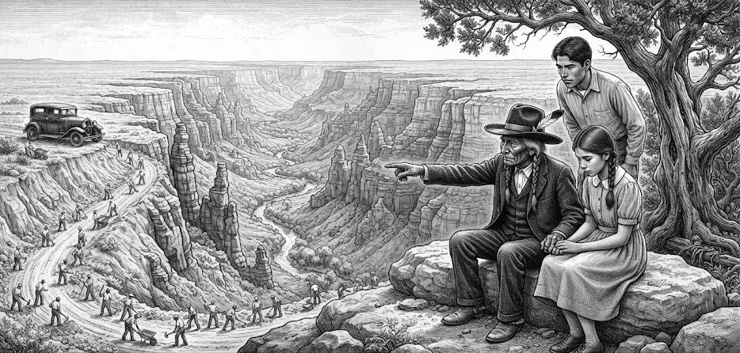
Salimos a las tres de la mañana, de noche cerrada, con las luces del Ford abriendo un túnel amarillo en el polvo.
Íbamos tres. El viejo en el asiento de atrás, con su traje negro, su sombrero de la pluma, sus trenzas envueltas en tela roja y una manta sobre las rodillas. Ruth a su lado, con un vestido azul de los domingos y una cesta con comida en el regazo: tortas de pan frito, carne seca, una lata de melocotones, una botella de café frío. Y yo al volante.
Harold no quiso venir. No dijo nada. Pero a las dos y media, cuando llegué con el coche, estaba levantado, en el porche, con un farol, y ayudó a su padre a bajar los escalones y a subir al coche, cogiéndole por debajo de los brazos. Y le puso la manta. Y le dijo algo en comanche, bajito.
Y a mí me dijo, en inglés:
—Tráemelo.
Tardamos once horas en llegar. El camino era de tierra casi todo, con baches, con tramos de arena donde había que ir en primera, con vados de arroyos secos. Pasamos por Altus, de noche. Por el río Rojo, al amanecer, por un puente de hierro, y ahí entramos en Texas. Por Childress, por Memphis, por Clarendon, pueblos de casas de madera, con un silo de grano y una gasolinera y una iglesia y nada más, con la gente sentada en los porches mirando pasar el coche.
Y todo el camino, a los lados, algodón. Algodón seco. Trigo segado. Campos arados. Cercas de alambre. Molinos de viento. Vacas flacas. Casas abandonadas con la arena en el umbral. Y polvo.
El viejo no durmió. Iba mirando por la ventanilla, con las manos en las rodillas, todo el camino. A veces decía algo en comanche, a Ruth. A veces en español, a mí.
—Aquí había un río con álamos —dijo, al pasar un sitio donde había un cauce seco con unos tocones—. Acampábamos.
—Aquí cazó mi padre su último búfalo —dijo, en un sitio donde había un campo de trigo segado y una casa con un perro.
—Aquí no había nada —dijo, en otro—. Nunca hubo nada. Hierba.
Paramos a desayunar en Childress, a las siete, en un café de la calle principal, junto a la estación. Tenía un letrero de neón apagado y una ventana grande con las letras pintadas. Dentro había hombres con sombrero comiendo huevos con tocino en la barra, y una camarera rubia con un delantal.
Entré yo primero. La camarera me miró. Luego miró por la ventana, al coche, donde el viejo y Ruth esperaban. Y me dijo que podía servirme a mí, si me sentaba al fondo. Que a ellos no.
—No Indians —dijo. Sin maldad casi. Como quien dice que no hay pan.
Le pedí café para llevar. Tres. Y unos bollos. Me los puso en una bolsa de papel. Pagué. Salí.
Desayunamos en el coche, parados a la salida del pueblo, junto a un silo de grano, con las puertas abiertas. Ruth no dijo nada. Se comió su bollo mirando por la ventanilla. Había entendido. Tenía quince años y había entendido perfectamente.
El viejo se bebió su café despacio, con las dos manos alrededor del vaso de cartón.
—Está bueno —dijo, en español—. Mejor que el del fuerte de adobe.
Y se rio. Y Ruth, al cabo de un momento, se rio también, aunque no lo había entendido. Y yo me reí con ellos, sin saber muy bien de qué, y no podíamos parar, los tres, en un Ford polvoriento al lado de un silo en Texas, a las siete de la mañana, riéndonos como tontos con el café en la mano.
Creo que el viejo lo hizo a propósito.
A mediodía empezó a subir la tierra. Se notaba en el motor, que iba más forzado. Y de pronto, al salir de una curva, el paisaje cambió. Se acabaron las lomas, se acabaron los arroyos. Delante, hasta el horizonte, todo llano. Perfectamente llano. Como una mesa. Sin un árbol. Sin una piedra. Amarillo de rastrojos y de hierba seca, con el cielo encima, enorme, blanco de calor.
—El Llano —dijo el viejo.
Lo dijo muy bajo.
Paré el coche sin que me lo pidiera. Nos bajamos. Hacía un calor que quemaba los pies a través de los zapatos. Soplaba un viento caliente que no paraba. El viejo se quedó de pie al lado del coche, apoyado en el guardabarros, mirando.
—No hay nada —dijo Ruth, en inglés.
—Antes tampoco había nada —dijo su abuelo, en comanche. Ruth me lo tradujo después—. Por eso era bonito.
Llegamos al borde del cañón a las dos de la tarde.
No lo vimos hasta que estábamos encima. Así es. Vas por la llanura, todo llano, kilómetros y kilómetros de nada, y de pronto el suelo se acaba. Se abre. Como dijo el viejo, como una grieta. Y te asomas y abajo, muy abajo, a doscientos o trescientos metros, está otro mundo.
Paredes rojas. Rojas, amarillas, blancas, moradas, en rayas, en franjas, como una manta navajo, como había dicho él. Cortadas a pico, o en escalones, con torres y pináculos de piedra sueltos, rojos, como chimeneas. Y abajo, en el fondo, un río pequeño, de agua rojiza, entre álamos verdes. Y cedros, oscuros, en las laderas. Y hierba.
Había un camino de tierra nuevo, recién abierto, que bajaba en zigzag por la pared. Y en el camino, abajo, había hombres trabajando. Muchos. Cien, doscientos. Con picos y palas y carretillas. Con camisetas blancas, sudadas, y sombreros de paja. Levantando piedras, rompiéndolas, echándolas a un lado. Se oía desde arriba el ruido de los picos contra la roca, tac, tac, tac, y voces, y una radio.
Un hombre en un camión, junto al borde, nos dijo que eran del gobierno. Del CCC, dijo. Veteranos de la guerra de Europa, sin trabajo, que el presidente nuevo había mandado allí a hacer un parque. Que estaban abriendo el camino para que la gente pudiera bajar al cañón en coche. A verlo.
—¿A ver qué? —le preguntó el viejo, en español.
El hombre del camión no le entendió.
No bajamos. No se podía, el camino no estaba terminado, y el viejo no habría podido. Nos quedamos arriba, en el borde, sentados en una roca, a la sombra de un enebro pequeño y retorcido. Ruth sacó la comida. Nadie comió mucho.
El viejo miraba hacia abajo. Hacia el río. Hacia la izquierda, río arriba, donde el cañón se perdía en una curva.
—Allí —dijo, al fin, señalando—. Detrás de esa vuelta. Estaba nuestra tienda. Debajo de unos álamos grandes. Con una pared enfrente, roja, alta como diez árboles. Por esa pared bajaron.
Ruth miraba también. No decía nada. Le había cogido la mano a su abuelo.
—Allí estaba la manada —dijo él—. Abajo, en la orilla. Miles. Allí escondí a la yegua vieja de mi padre. Allí vi a la potra por última vez, corriendo río abajo con los demás.
Señaló otro sitio, una pared más lejos, rota, en escalones.
—Por ahí subí. Con las manos sangrando.
Se quedó callado.
Abajo, en el camino, los veteranos seguían picando. Tac, tac, tac. Uno cantaba algo. Otro se reía.
—Mira —dijo el viejo—. Blancos pobres. Como los desolladores. Como los vaqueros. Haciendo un camino para que los blancos ricos bajen a ver dónde vivíamos nosotros.
No lo dijo con rabia. Lo dijo como se dice que hace calor.
Al rato subió uno de los veteranos. Por el camino nuevo, a pie, con un cubo vacío en la mano, a llenarlo en un depósito de agua que había junto al camión. Era un hombre de cuarenta años, flaco, quemado, con un brazo tatuado y una cicatriz en la cara. Nos vio en la roca. Se paró. Se quitó el sombrero.
Le preguntó a Ruth, en inglés, si querían agua fresca. Que la del depósito estaba buena, que la traían de un pozo. Ruth dijo que sí. Y el hombre llenó el cubo y nos lo trajo, y un cazo de hojalata, y nos dio de beber a los tres, al viejo primero.
Luego se quedó un momento mirando al viejo. Sus trenzas, su pluma.
—¿Usted vivió aquí? —le preguntó—. ¿Antes?
Ruth le tradujo.
El viejo le miró. Asintió.
El veterano se quedó callado. Miró hacia abajo, hacia el cañón, hacia los hombres picando.
—Estuve en Francia —dijo—. En el dieciocho. En un sitio que se llamaba Argonne. Un bosque. Lo destrozamos todo. Los alemanes y nosotros. No quedó un árbol de pie. —Se rascó la cicatriz—. Hace dos años volvió un amigo mío a verlo. Me dijo que había vuelto a crecer. Que estaba verde. Que no se notaba nada.
Ruth se lo tradujo a su abuelo, en comanche.
El viejo escuchó. Luego le dijo algo al veterano, en comanche, corto. Y Ruth se lo tradujo al inglés.
—Dice que sí se nota —dijo Ruth—. Que siempre se nota. Pero que solo lo ven los que estuvieron.
El veterano asintió. Se puso el sombrero. Recogió su cubo.
—Que tengan buen viaje —dijo. Y se fue cañón abajo, con el agua, despacio, por su camino nuevo.
—Quiero ir a Tule —dijo.
Le dije que eran treinta millas más al sur. Que íbamos a llegar a casa muy tarde.
—Quiero ir a Tule —repitió.
Fuimos. Por caminos de tierra, entre campos de algodón, preguntando en las granjas. Nadie sabía nada de un cañón de Tule. Al final, un viejo en una gasolinera de un pueblo que se llamaba Tulia nos dijo que sí, que había un cañón al este, que se llamaba así, y nos explicó cómo llegar. Y luego se quedó mirando al viejo, en el asiento de atrás, con sus trenzas y su pluma.
—¿Es indio? —me preguntó.
Le dije que sí.
—Ahí mataron los caballos de los indios —dijo el de la gasolinera—. Mi padre los vio. Los huesos. Decía que había un montón de huesos blancos, de caballo, al borde del cañón, que se veía desde una legua. Como una montaña de nieve. Luego vinieron los que recogían huesos y se los llevaron todos, en carros, al tren, para hacer abono. Vendían los huesos a ocho dólares la tonelada. No queda nada.
No queda nada.
No quedaba nada.
Llegamos al borde del cañón de Tule a las cinco de la tarde, con el sol ya bajo, rojo, en el polvo. Era más pequeño que Palo Duro. Más estrecho. Con paredes rojas también. Y en el borde, donde nos paramos, en la llanura de arriba, había un campo de algodón. Seco. En filas. Hasta el borde mismo del cañón.
El viejo se bajó del coche. Solo. No quiso que le ayudara. Fue andando despacio, apoyándose en un palo, entre las filas de algodón, hasta el borde. Ruth y yo nos quedamos junto al coche.
Se quedó allí mucho rato. De pie. Mirando el campo de algodón. Mirando el cañón.
Después se agachó, con mucho trabajo, y cogió un puñado de tierra. Roja. Seca. Se la acercó a la cara. La olió.
Y la dejó caer. Y el viento se la llevó.
Volvimos de noche. El viejo se durmió en cuanto arrancamos, con la cabeza apoyada en el hombro de Ruth. Ruth se durmió también, al rato. Yo conduje solo, en la oscuridad, durante siete horas, por los caminos de tierra, con los faros abriendo el túnel amarillo en el polvo, con los dos durmiendo detrás.
En algún sitio, en mitad de la noche, en Texas, en la llanura, se cruzó un caballo por delante del coche.
Lo vi un momento. En los faros. Un caballo suelto, sin silla, sin cuerda, que cruzó el camino al trote, de derecha a izquierda, y se metió en la oscuridad. No sé de qué color era. Iba deprisa. Lo vi un segundo.
Me pareció claro.
No lo sé. Era de noche. Estaba cansado. Hay muchos caballos sueltos en Texas.
No se lo dije a nadie.
Llegamos a las tres de la mañana. Veinticuatro horas después de salir. Harold estaba en el porche, con el farol, esperando. No se había acostado.
Bajó los escalones. Abrió la puerta de atrás del coche. Cogió a su padre en brazos, dormido, como se coge a un niño, y lo llevó a la tienda. El viejo no se despertó.
Ruth se fue a la casa, tambaleándose de sueño.
Yo me quedé junto al coche. Harold salió de la tienda al rato. Se paró delante de mí.
—¿Lo ha visto? —me preguntó.
—Lo ha visto.
Harold asintió. Se quedó un momento callado.
—Gracias —dijo.
Era la primera vez.
Y se fue a la tienda, con su padre.
Las crines
Cerca de Indiahoma · 29 de agosto-3 de septiembre de 1933
Ramón
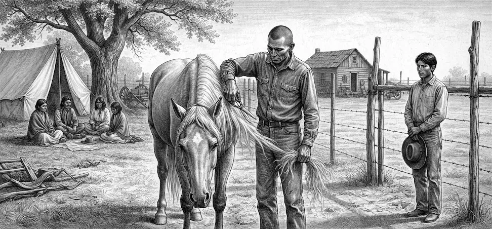
El martes el viejo no se levantó.
Fui por la mañana, temprano, como siempre, aunque ya no había profesores. Su nuera estaba en la puerta de la tienda. Me dijo que no entrara. Que estaba dormido. Que había pasado la noche tosiendo y que ahora dormía. Que el viaje le había cansado mucho.
Me senté debajo del álamo y esperé.
Al mediodía salió Ruth. Tenía los ojos rojos.
—Quiere verte —dijo.
La tienda era alta, de lona blanca, con los palos juntos arriba y el agujero del humo. Dentro estaba oscuro y fresco y olía a hierba dulce, a humo y a enfermo. En el suelo había mantas y pieles. Al fondo, enfrente de la puerta, en el sitio del dueño, estaba la cama del viejo: un colchón en el suelo, unas mantas de lana de colores, una piel de búfalo vieja, pelada, que se notaba que era muy vieja porque ya no había búfalos.
El viejo estaba tumbado boca arriba. Más pequeño que nunca. Con las trenzas sueltas, grises, extendidas sobre la almohada. Con la cara hundida. Respirando deprisa, con un ruido.
Abrió los ojos cuando entré.
—Siéntate —dijo, en español.
Me senté en el suelo, a su lado.
—Me muero —dijo.
No dije nada. No había nada que decir.
—No pasa nada —dijo—. Soy viejo. Me toca. Mi padre se murió más joven. Mi abuelo, mucho más. Yo he visto todo. Lo de antes y lo de después. —Tosió—. Ya está.
Se quedó un rato callado, respirando.
—Tú te vas mañana —dijo.
—No —le dije.
Me miró.
—Los profesores se van mañana —le dije—. Yo no. Les he dicho que lleve el coche uno de los estudiantes. Que yo me vuelvo en el autobús, luego. Cuando sea.
—¿Por qué?
No supe qué contestarle. Le dije la verdad.
—Porque no me ha contado el final.
El viejo me miró mucho rato. Se rio. Sin fuerza. Pero se rio.
—No hay final —dijo—. Ya te lo dije. —Cerró los ojos—. Pero quédate.
El profesor no se enfadó. Lo entendió, creo. O le dio igual. Me pagó lo que me debía, me dio la mano y me deseó suerte. Uno de los estudiantes, el más simpático, el que se había desmayado del calor, me dio un dólar de más, a escondidas, y me dijo, en un español malo, que le saludara al viejo.
El miércoles por la mañana vi salir el Ford de Lawton hacia el oeste, cargado de cajas, con el polvo detrás. Me quedé en la acera, delante del hotel Midland, con mi maleta de cartón.
Y luego anduve hasta la carretera de Indiahoma, y me pusieron un camión de algodón, y llegué a la casa del viejo a mediodía.
Harold me vio llegar andando, con la maleta. No dijo nada. Me señaló el cobertizo, junto al corral. Allí dormí aquellas noches. En un montón de paja, al lado de la yegua.
El viejo vivió cuatro días más.
Dormía casi todo el tiempo. A ratos se despertaba y hablaba. En comanche, con su hijo, con su nuera, con su nieta. A veces en español, conmigo. Pedía agua. Pedía que le abrieran la puerta de la tienda para ver el álamo. Pedía que le dijeran qué hacía la yegua.
Vino gente. Primero unos pocos, luego más. Parientes. Viejos y viejas de las otras casas, de los otros lotes, en carros, en coches viejos, a pie. Se sentaban fuera de la tienda, en el suelo, en silencio, o hablando bajito en comanche. Algunos entraban a verle. Le cogían la mano. Le decían algo. Salían. Vino el pastor de la misión de Deyo, en un Ford, y rezó con él, en inglés, y el viejo le dejó. Vino un hombre viejo con un tambor pequeño y una bolsa de plumas, y se sentó junto a la cama toda una noche, cantando bajito, y el viejo le dejó también.
Las mujeres hacían comida para todos. Pan frito, carne guisada, café. Nadie tenía dinero, pero había comida para todos. Siempre había comida para todos.
Yo ayudaba a Harold a traer agua y a cortar leña. No hablábamos.
El jueves por la noche, en uno de los ratos en que estaba despierto, me pidió que me acercara.
Estábamos solos. La nuera había salido a por agua. Fuera, alrededor de un fuego, la gente hablaba bajito en comanche, y alguien se reía, con esa risa de los velatorios que no es falta de respeto sino otra cosa.
Metió la mano debajo de la manta, despacio, con trabajo. Sacó algo. Me lo puso en la mano y me cerró los dedos encima.
Era la cuenta azul. La del arroyo seco. La que había cogido junto a la piedra de su madre.
—Para tu madre —dijo—. La de Atrisco.
—No la conoce.
—Ya lo sé. —Respiró—. Dile que es de una mujer de Parras que lavaba en un arroyo. Que también cantaba la de la rorro.
Le dije que se lo diría.
Cerró los ojos un rato. Pensé que se había dormido. Luego habló otra vez, sin abrirlos.
—Cuando vuelvas —dijo—, ve al camposanto de Atrisco. Busca la tumba de tu abuelo. El de la pala. Y dile una cosa de mi parte.
—¿Qué?
—Que la potra de mi bisabuelo llegó bien. Que la cuidasteis bien. Ciento cuarenta años. Que ya está. Que habéis cumplido. —Abrió los ojos—. Y que la otra rama también. Que los dos hemos cumplido. Que se lo diga a los suyos, a los de antes, a los que estén con él. Al padre de Francisco, al de la paja. Que se lo diga.
Le dije que sí.
Lo hice. En octubre. Fui una mañana, solo, con la cuenta azul en el bolsillo, y me senté junto a la tumba de mi abuelo Nicolás, que tenía una cruz de hierro con su nombre, y se lo dije. En voz alta. Me dio vergüenza. No había nadie. Se lo dije todo, como me lo había dicho el viejo.
No sé si me oyó. Pero se lo dije.
El sábado por la tarde el viejo me llamó.
Estaban todos dentro: Harold, su mujer, Ruth. El viejo tenía los ojos abiertos. Respiraba muy mal. Hablaba muy bajo y muy despacio, con pausas largas, y Ruth tenía que acercarse para oírle y repetirlo.
Habló primero en comanche, con su hijo. Mucho rato. Harold escuchaba con la cabeza baja, sin decir nada. Asentía, a veces. Una vez negó con la cabeza, y el viejo le cogió la muñeca, y Harold se quedó quieto, y luego asintió.
Luego el viejo me miró a mí.
—La yegua —dijo, en español.
—Sí.
—No la matéis.
—No.
—No la vendáis.
—No.
—Y cuando no haga falta...
Se le fue la voz. Tosió. Ruth le dio agua. Él la apartó con la mano.
—Cuando no haga falta —dijo—, la soltáis. Que se vaya. Sin ser de nadie.
—Sí.
Me miró un rato más. Después miró a su hijo. Y luego cerró los ojos.
No se murió entonces. Se murió por la noche, de madrugada, cuando estaban todos dormidos menos Ruth, que estaba sentada a su lado, cogiéndole la mano. Me lo contó ella. Que dejó de respirar sin ruido, como cuando uno se queda dormido de verdad.
Que lo último que dijo, un rato antes, fue una palabra en comanche que ella no conocía. Que no supo lo que era. Que le sonó a nombre.
Yo tampoco lo sé. Puede que fuera el nombre de la potra. El nombre de niño. El que no me quiso decir.
Lo lavaron por la mañana. Lo hicieron su nuera y otras mujeres, dentro de la tienda, con la puerta cerrada. Le pintaron la cara de rojo, las mejillas y los párpados, con una pintura que sacó una vieja de una bolsita de cuero. Le trenzaron el pelo con tiras de piel de nutria. Le vistieron con su mejor ropa: la camisa blanca, el chaleco, unos pantalones nuevos que trajo Harold de Lawton, unos mocasines bordados con cuentas azules que había hecho Ruth aquel verano sin decirle para quién. Le pusieron el sombrero de la pluma de águila en las manos. Y le envolvieron en una manta de lana roja y azul.
Harold se cortó el pelo. Lo tenía corto ya, de la escuela, pero se cortó más, con unas tijeras, delante de todos, casi al cero. Su mujer se cortó las trenzas. Ruth también. Las dejaron encima de la manta de su abuelo.
Y luego Harold salió de la tienda con las tijeras en la mano y fue al corral.
Yo estaba allí. Llevaba un rato allí, con la yegua, porque no sabía dónde ponerme. Harold entró en el corral. La yegua le miró.
Harold se quedó un momento quieto, delante de ella, con las tijeras. Pensé que iba a hacer otra cosa. No sé qué pensé. Pensé en la fábrica de cola. Me puse delante.
Harold me miró. Y por primera vez en todo el verano vi que tenía los ojos húmedos.
—Apártate —me dijo, en inglés—. No le voy a hacer nada.
Me aparté.
Le cogió las crines a la yegua con una mano. Largas, blancas, ásperas. Y se las cortó. Despacio. A ras del cuello. Mechón a mechón. La yegua no se movió. Bajó la cabeza y se dejó.
Fue a la cola. Se la cortó también. Larga, blanca. Toda.
Juntó todo el pelo en las manos, un manojo grande, blanco, y lo llevó a la tienda, y lo puso encima de la manta de su padre, con las trenzas de las mujeres.
Luego salió, se sentó en el escalón del porche y se tapó la cara con las manos.
Lo enterraron aquella tarde en el cementerio de la misión de Deyo, al lado de su mujer. Con el pastor, que leyó la Biblia en inglés. Con el viejo del tambor, que cantó en comanche, después, cuando el pastor ya se había ido. Con mucha gente. Comanches, casi todos. Algún kiowa. Un texano viejo, que nadie conocía, que se quedó atrás, con el sombrero en la mano, y se fue sin hablar con nadie.
Y yo.
Le metieron en la tierra con su manta, con sus trenzas, con su sombrero, con las trenzas de su familia y las crines de su yegua.
No mataron ningún caballo.
Aquella noche dormí en el cobertizo, como las otras, al lado de la yegua.
No dormí. Me quedé tumbado en la paja, oyéndola respirar. Ella estaba de pie, como duermen los caballos, a dos pasos de mí, con la cabeza baja. Sin crines, se le veía el cuello flaco, con los huesos marcados, y la piel gris, casi blanca, con algunas cicatrices viejas que antes tapaba el pelo. Cada tanto se movía. Cambiaba el peso de una pata a otra. Resoplaba. Y luego volvía a quedarse quieta.
A medianoche se acercó. Bajó la cabeza hasta donde yo estaba y me olió el pelo, la cara, las manos. Como le olía al viejo. Despacio. Y luego se quedó así, con el morro a un palmo de mi cara, respirando sobre mí, caliente, con olor a hierba.
Le puse la mano en la frente. En la estrella.
No le dije nada. No sabía qué decirle. Mi abuelo le hablaba a la Estrellita en un español viejo que yo no entendía. El viejo le hablaba a esta en comanche. Yo no tenía lengua para ella. Así que no le dije nada.
Pero me quedé con la mano en la estrella hasta que se fue apartando, sola, y volvió a su sitio.
Pensé que era la última. La última de la línea. La de Atrisco se había acabado en la Estrellita, sin potros. Y esta tenía treinta y dos años y no iba a tener más. Las dos ramas, la del corral y la de la llanura, se acababan a la vez, con dieciocho años de diferencia, en dos viejas que ya no iban a tener hijas.
Pensé que a lo mejor era eso lo que quería decir «cuando no haga falta».
Aquella noche, en el porche, Harold me habló.
Estábamos los dos solos. Su mujer y Ruth se habían ido a dormir. No había luna. Hacía viento.
—Mi padre me dijo que la yegua es tuya —dijo.
Me quedé quieto.
—Me lo dijo el sábado —dijo—. Antes de hablar contigo. Me dijo: el de Atrisco se queda la yegua. Para que haga lo que hay que hacer. Tú no lo harías.
Se encogió de hombros. El gesto de la familia.
—Tiene razón —dijo—. Yo no lo haría. Yo la vendería a la fábrica. Diez dólares. Harina para un mes. Ruth necesita zapatos.
Le di los diez dólares. Eran casi todo lo que me quedaba.
Harold los miró. No los cogió al principio. Después los cogió. Se los guardó en el bolsillo de la camisa.
—No es por el dinero —dijo.
—Ya lo sé.
—Es para que sea tuya de verdad. Con papel. Sin papel no vale nada en este país.
Y entró en la casa, y salió con un trozo de papel arrancado de un cuaderno de Ruth, y escribió en él, a lápiz, en inglés, con buena letra, de la escuela: Recibí de Ramón Chaves diez dólares por una yegua gris vieja. Harold Manyhorses. 3 de septiembre de 1933.
Y me lo dio.
Lo tengo todavía.
La cerca
Montañas Wichita, Oklahoma · septiembre de 1933
Ramón
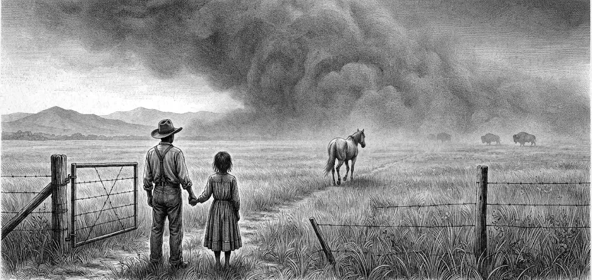
Esperé tres días. No sabía a qué. Ruth sí.
—Estás esperando a que haga falta —me dijo, la tercera tarde, sentada en el escalón del porche, con el pelo corto, cortado a trasquilones, que la hacía parecer más pequeña—. Mi abuelo decía que ya lo sabrías.
—No lo sé.
Ella miró la yegua. Sin crines, sin cola, parecía otro animal. Más vieja. Más flaca. Más desnuda. Estaba en el corral, junto a la cerca, mirando hacia la tienda, que ya no era de nadie. Llevaba tres días así. Comía poco. Bebía. Y miraba hacia la tienda.
—Ya hace falta —dijo Ruth.
Aquella noche, la del tercer día, le conté a Ruth lo de Palo Duro.
Lo de la potra. Todo. Desde el principio. Como me lo había contado él.
Nos sentamos en el escalón del porche, con el farol apagado para no llamar a los mosquitos. Su madre dormía. Harold no había vuelto. La tienda estaba cerrada, con la lona atada, y nadie la iba a volver a abrir hasta que pasaran los días del luto.
Le conté lo del cañón al amanecer. Lo de los soldados bajando por la pared. Lo de la gris vieja que el niño le dio a su padre. Lo de la joven, que se perdió en la manada. Lo de los fuegos en el borde del cañón de Tule. Lo de un niño de doce años arrastrándose por la hierba entre dos soldados que fumaban. Lo del cinturón. Lo del barranco al amanecer. Lo de la palmada en el anca.
Se lo conté en inglés, despacio, con mi inglés malo, buscando las palabras. Y cuando no las encontraba, se las decía en español, y ella las entendía, porque había aprendido algo aquel verano. Y una vez, una sola, le dije una palabra en comanche, la de «vete», que el viejo me había dicho cómo era. Y la dije mal. Y Ruth no se rio.
Cuando terminé, se quedó callada mucho tiempo.
—Nunca se lo contó a nadie —dijo al fin.
—A su padre. Al final. Y a mí.
—Y ahora a mí.
—Me dijo que te lo contara. Cuando él no estuviera.
Ruth asintió. No lloraba. Se miraba las manos.
—¿Por qué no me lo contó él?
—Porque si lloraba delante de ti, lloraba él —le dije—. Y decía que estaba viejo para eso.
Entonces sí lloró. No mucho. Un poco. Con la cara quieta, como él. Las lágrimas le bajaban y no se las secaba.
—Era un tonto —dijo, en comanche, y luego me lo dijo en inglés, riéndose y llorando a la vez—. Un viejo tonto.
—Sí.
—Yo le habría dejado llorar.
Lo dijo tan bajo que casi no lo oí. Y luego se levantó, y se fue al corral, y se quedó junto a la yegua un rato, en la oscuridad.
Al volver, no me dijo nada. Se sentó otra vez a mi lado, en el escalón, y estuvimos allí hasta muy tarde, sin hablar.
Salimos al amanecer del cuarto día. Ruth y yo.
No se lo dijimos a nadie. Harold se había ido a Lawton de madrugada, a la obra del camino, que por fin le habían cogido. Su mujer dormía. La casa estaba en silencio. La tienda, cerrada.
Le puse a la yegua una cuerda vieja al cuello, la de siempre, y la saqué del corral. Vino sin tirar. Con su paso de vieja. Ruth iba al otro lado, con la mano en el cuello, donde antes estaban las crines.
Fuimos andando hacia el oeste. Por el camino de tierra, entre los campos de algodón. Por un sendero, entre cercas de alambre. Hacia las montañas. Las Wichita. Unas montañas pequeñas, de piedra rosa y gris, redondas, que se veían desde la casa del viejo todos los días y que desde allí parecían cerca.
No estaban cerca. Tardamos tres horas.
A media mañana se levantó el viento.
Venía del suroeste. De Texas. Del Llano. Caliente, fuerte, con un ruido sordo, constante, como un tren que no termina de pasar. Y con el viento vino el polvo.
Primero fue una raya en el horizonte. Una raya marrón, baja, por debajo del cielo blanco. Luego la raya creció. Se hizo una pared. Una pared enorme, marrón y roja y negra, de la altura de una montaña, que venía rodando por la llanura hacia nosotros, tragándose los campos, las cercas, los molinos, las casas.
Ruth me cogió del brazo.
—Sigue —le dije.
Seguimos.
El polvo nos alcanzó cuando llegábamos a la última cerca.
La última cerca era alta, de alambre de espino, de seis hilos, con postes de cedro. Detrás, empezaban las tierras del gobierno. El refugio, lo llamaban. Un trozo grande de las montañas y de la llanura de alrededor que el gobierno había cercado hacía treinta años, cuando repartió la reserva, y donde no se podía arar, ni cazar, ni sembrar. Donde se había dejado la hierba. La de antes. La de búfalo, alta, dorada, que el viento peinaba en olas.
Y donde, me había contado el viejo una tarde, riéndose, el gobierno había vuelto a soltar búfalos. Quince. Traídos en tren desde un zoológico de Nueva York, en cajas, como gallinas, hacía veintiséis años. Los comanches viejos habían ido a la estación a verlos llegar. Y algunos lloraron, dijo el viejo. Y otros se rieron. Él se rio.
—Quince búfalos —había dicho—. De Nueva York. En cajas.
Había una puerta en la cerca. Una puerta de alambre, cerrada con un aro de alambre retorcido alrededor del poste.
No se veía nada ya. El polvo lo tapaba todo. El sol era un círculo blanco, pequeño, apagado, como la luna de día. Ruth se había tapado la cara con un pañuelo. Yo con el sombrero. La yegua tenía los ojos medio cerrados, con las pestañas blancas de polvo.
Quité el aro. Abrí la puerta.
Le quité la cuerda.
Se quedó quieta. Como se quedan siempre, al principio. Mirándome. Con sus ojos grandes, nublados de viejos. Con la estrella blanca en la frente, gris de polvo.
Ruth le dijo algo en comanche. Bajito. No sé qué. No se lo pregunté nunca.
Le di una palmada en el anca. No se movió.
Le di otra.
Y echó a andar.
Despacio. Hacia el otro lado de la cerca. Hacia la hierba alta. Hacia el oeste. Hacia el polvo.
La vi irse. Gris, sin crines, sin cola, vieja, en la hierba amarilla, en el viento.
A cada paso que daba se veía menos.
Y a cada paso, no sé por qué, me acordaba de una cosa. Como si la yegua, al irse, fuera tirando de un hilo hacia atrás.
Los mil cuarenta y ocho caballos de Tule, uno detrás de otro, todo un día, al borde de un cañón donde ahora hay algodón.
Un niño de doce años en la oscuridad, sacando a una potra gris de entre una manada vigilada por soldados, con su cinturón al cuello, sin hacer ruido, y soltándola al amanecer.
Una muchacha mexicana de quince años montando a escondidas, de noche, al galope, sin silla, con el pelo al viento.
Una mujer de Atrisco en un corral, con un niño en brazos, delante de un soldado americano con una cuerda.
Un comanchero llorando al ver la llanura por primera vez.
Un comanche joven en lo alto de una loma, en el verano de 1792, bajando al galope hacia la llanura llena, llena de búfalos, llena de caballos, hasta el borde del mundo, con un potro gris debajo y el pelo suelto.
Un hombre con los ojos pintados diciendo mamá delante de una casa de barro, y un cántaro que se rompe.
Un viejo en un barranco, solo, con un caballo tordo, contando toda una noche su vida a un muchacho, y pidiéndole que no maten al caballo.
Un niño apache aprendiendo a montar sin silla, en un caballo que se llamaba Lucero.
Una yegua que se llamaba Paloma encontrando agua de noche, en una llanura seca, cuando todos se morían de sed, y nadie lo dijo.
Un soldado español, en 1706, parado en el borde de la llanura vacía, mirando hacia el este, sin saber lo que iba a traer.
Y antes. Antes de todo. Cuando no había caballos. Cuando la llanura estaba vacía de caballos de un borde al otro. Cuando la gente andaba detrás de los búfalos a pie, despacio, y los viejos se quedaban atrás, y los perros arrastraban las cosas sobre dos palos.
Ya no la veía.
Estaba ahí, delante, en algún sitio, en el polvo. Lo sabía. Pero ya no la veía. Ni una mancha. Ni una sombra. Solo el polvo, rojo y marrón, moviéndose, y la hierba, debajo, inclinada por el viento, y el ruido.
Ruth me cogió la mano.
Nos quedamos así mucho rato, en la puerta abierta de la cerca. Hasta que el viento empezó a bajar. Hasta que el polvo empezó a posarse, despacio, como se posa la nieve. Hasta que se volvió a ver el sol, amarillo, y luego las montañas, rosas, y la llanura, delante, hasta el horizonte.
Vacía.
Hierba. Viento. Nada más.
Como antes. Como cuando no había caballos.
Y en algún sitio, lejos, ladró un perro.
Notas: historia e invención
El marco
- Real: el grupo de campo de 1933 dirigido por Ralph Linton, con cinco estudiantes (entre ellos E. Adamson Hoebel, Waldo Wedel y Gustav Carlson), que se reunió a finales de junio en el hotel Midland de Lawton y trabajó con dieciocho ancianos comanches, sobre todo en Walters, con intérpretes comanches; el entierro en la misión de Deyo del 1 de julio de 1933; las preguntas sobre parentesco, guerra, medicina y caballos; las tormentas de polvo de 1933, principio del Dust Bowl; los veteranos del CCC que en julio de 1933 empezaron a abrir a pico y pala el camino de bajada al cañón de Palo Duro, futuro parque estatal (1934).
- Inventado: Ramón Chaves, chófer e intérprete de español (el grupo no tuvo ninguno así); Muchos Caballos (John Manyhorses), su hijo Harold, su nuera y su nieta Ruth; la yegua; el viaje a Palo Duro y a Tule.
Lo que es historia
- Los comancheros y los ciboleros de Nuevo México: cada otoño, tras la cosecha, subían al Llano Estacado con carretas y burros, con pan duro cocido dos veces, harina, pinole, piloncillo, tabaco, mantas y cuchillos (belduques), y cambiaban con los comanches por pieles, caballos, carne y cautivos en sitios como Las Lenguas, Quitaque o el Cañón del Rescate.
- La independencia de México (1821) y la llegada de la noticia a Nuevo México.
- La Casa del Consejo de San Antonio (19 de marzo de 1840): unos 65 comanches penateka fueron a negociar la paz y la entrega de cautivos; llevaban solo a Matilda Lockhart, de unos dieciséis años, con señales de malos tratos; los texanos retuvieron a los jefes y hubo una matanza: 35 comanches muertos, entre ellos mujeres y niños, y 27 presos; los comanches mataron después a trece cautivos; varias presas escaparon de la misión de San José.
- Las incursiones comanches en México en las décadas de 1830 a 1850, la «luna de los comanches» de septiembre y los cautivos mexicanos criados entre ellos.
- Cynthia Ann Parker, capturada de niña en 1836, recuperada por los rangers en 1860 contra su voluntad, madre de Quanah. Aparece solo de oídas.
- La llegada de los americanos a Nuevo México (agosto-septiembre de 1846): Armijo abandonó a la milicia en el cañón Apache; Kearny tomó Santa Fe sin lucha y bajó por el río hasta Albuquerque y más al sur; la rebelión de Taos de 1847 y la muerte del gobernador Charles Bent; el tratado de 1848 y los quince millones de dólares.
- El cólera de 1849, llevado por las caravanas del oro, que mató a una gran parte de los kiowas y comanches; los calendarios kiowas.
- El tratado de Medicine Lodge (1867), la reserva, Fort Sill (1869), las raciones con reses vivas.
- Los cazadores de pieles de búfalo (1872-1878), sus rifles de largo alcance, los desolladores y los esqueletos; el ataque a Adobe Walls (27 de junio de 1874) y la medicina fallida de Isatai, que la culpó de una mofeta.
- Palo Duro (28 de septiembre de 1874): los soldados de Mackenzie bajaron al amanecer por una senda de la pared, los indios escaparon por las paredes y perdieron tiendas, comida y caballos; al día siguiente, junto al cañón de Tule, se mataron 1.048 caballos (otras fuentes dan cifras mayores). El otoño lluvioso y helado de 1874.
- La rendición en Fort Sill (1875): la entrega de armas y caballos, los presos en la casa del hielo sin techo, alimentados con carne cruda tirada por encima del muro, los enviados a Florida; la llegada de Quanah con los kwahadi en junio.
- Los arriendos de pasto a los ganaderos texanos (Burnett y otros) en los años 1880; los mesteñeros del Llano.
- El reparto de la reserva en 1901: lotes de 160 acres, la lotería para los blancos, la subasta de solares de Lawton el 6 de agosto; las tierras «restringidas» y las cuentas que los indios no podían usar sin permiso de la agencia; la escuela de Chilocco.
- El tren en Albuquerque (abril de 1880) y la ciudad nueva junto a la estación.
- La gripe de 1918.
- El refugio de las montañas Wichita, donde en 1907 se soltaron quince búfalos traídos en tren desde el zoológico del Bronx.
Lo que es invención
- Toda la familia de Muchos Caballos: Dos Lunas (el niño que viajaba a la espalda de Hierba Alta en 1792), su muerte en la Casa del Consejo, la abuela que escapó de San José, Tejón, Refugio Cárdenas de Parras, la yegua del texano Jim.
- Toda la familia de Ramón en Atrisco: Antonio el comanchero, Josefa y el sargento de 1846, el abuelo Nicolás, la abuela Cleofas, la Estrellita.
- La línea de yeguas grises con estrella en las dos ramas, la de Atrisco y la de la llanura. Que la yegua de 1933 descienda de la potra soltada en 1874, y esta de la de 1792, no lo confirma nadie, y así debe quedar.
- La potra que el niño saca de la manada vigilada la noche anterior a la matanza de Tule.
- Las conversaciones de Ramón con Hoebel y con los demás personajes reales del grupo de 1933, el tío Pablo cibolero, los comancheros del invierno de 1874-1875 y el veterano del CCC.
- Que algunos ancianos comanches de 1933 hablaran español es verosímil (por madres cautivas mexicanas y por el comercio con los comancheros), pero no consta para el grupo de 1933.
Fuentes principales
- Thomas W. Kavanagh (ed.), Comanche Ethnography: Field Notes of E. Adamson Hoebel, Waldo R. Wedel, Gustav G. Carlson, and Robert H. Lowie, University of Nebraska Press, 2008.
- Pekka Hämäläinen, The Comanche Empire, 2008.
- Charles L. Kenner, A History of New Mexican-Plains Indian Relations, 1969.
- S. C. Gwynne, Empire of the Summer Moon, 2010 (divulgación).
- Joaquín Rivaya Martínez, «El cautiverio en las relaciones hispano-comanches, 1700-1821», Cuadernos de Historia Moderna, 2025.
- Encyclopedia of the Great Plains (Universidad de Nebraska): comancheros; batalla de Palo Duro.
- Texas Parks and Wildlife y Texas Historical Commission: el CCC en Palo Duro.